<!doctype html>
<html lang="es">
<head>
    <meta http-equiv="Content-type" content="text/html; charset=utf-8">
    <meta name="author" content="Juan Salvador Aleixandre" />
    <meta name="date" content="09/11/2015"/>
    <meta name="generator" content="easybook 4.9.0"/>

    <title>Blog Cosillas de Juansal</title>

    <link rel="stylesheet" href="./css/easybook.css" />

</head>

<body>

<div class="container">
<div class="row">
    <div class="span12">
    <div class="item cover">
    <h1>Blog Cosillas de Juansal</h1>
    <h2>Juan Salvador Aleixandre</h2>
</div>    </div>
    <div class="span9">
        <div class="item chapter">
    <h1 id="blog-cosillas-de-juansal"><span>Capítulo 1</span> Blog Cosillas de Juansal</h1>
    <p>En este libro iré introduciento todas las entradas que he realizado en mi <a href="http://blog.juansal.com">blog personal</a>.</p>

<p>Las entradas del blog estarán agrupadas por años y ordenadas por fecha de introducción en el blog.</p>

<p>Además de las entradas del blog introduciré el esto de páginas del blog en un capítulo llamado secciones adicionales.</p>

</div>
        <div class="item chapter">
    <h1 id="2010"><span>Capítulo 2</span> 2010</h1>
    <p>En esta página he creado una relación de las entradas del blog con su fecha de publicación.</p>

<div class="table" id="table-2-1">

    <table>
<thead>
<tr>
  <th align="right">Fecha</th>
  <th>Entrada</th>
</tr>
</thead>
<tbody>
<tr>
  <td align="right">21 de abril de 2010</td>
  <td><a href="#2010_01">Presentación</a></td>
</tr>
<tr>
  <td align="right">27 de abril de 2010</td>
  <td><a href="#2010_02">Migración de RX Components a JVCL I</a></td>
</tr>
<tr>
  <td align="right">28 de abril de 2010</td>
  <td><a href="#2010_03">Migración de RX Components a JVCL 0</a></td>
</tr>
<tr>
  <td align="right">4 de mayo de 2010</td>
  <td><a href="#2010_04">Activar la cuenta root en Ubuntu</a></td>
</tr>
<tr>
  <td align="right">19 de mayo de 2010</td>
  <td><a href="#2010_05">Reseteo del ID y de la MAC de una máquina virtual en VMware</a></td>
</tr>
<tr>
  <td align="right">19 de mayo de 2010</td>
  <td><a href="#2010_06">Hacer que el VMware utilice la memoria física y no un fichero en una máquina virtual</a></td>
</tr>
<tr>
  <td align="right">29 de julio de 2010</td>
  <td><a href="#2010_07">Crear un mirror de un repositorio de subversion</a></td>
</tr>
<tr>
  <td align="right">15 de septiembre de 2010</td>
  <td><a href="#2010_08">Lectura de ficheros INI sin secciones con Inno Setup desde código</a></td>
</tr>
<tr>
  <td align="right">16 de septiembre de 2010</td>
  <td><a href="#2010_09">Lectura de ficheros INI sin secciones con Inno Setup desde código (continuación)</a></td>
</tr>
<tr>
  <td align="right">21 de octubre de 2010</td>
  <td><a href="#2010_10">Desactivación de Unity de las máquinas virtuales de VMware Workstation</a></td>
</tr>
</tbody>
</table>
</div>


</div>
        <div class="item chapter">
    <h1 id="2010_01"><span>Capítulo 2.1</span> Presentación</h1>
    <p>La finalidad de este blog es introducir lo que me parezca, en un principio no va a ser dirigido a ningún tema en especial.</p>

</div>
        <div class="item chapter">
    <h1 id="2010_02"><span>Capítulo 2.2</span> Migración de RX Components a JVCL I</h1>
    <p>En estas entradas voy a poner los componentes del RX y su equivalente en JVCL.
En este primer artículo sólo voy a poner el <em>TFormPlacement</em>.
El equivalente a este en JVCL es <em>TJvFormStorage</em>.</p>

<p>Los métodos de ambos son los mismos. El segundo es igual que el primer con más parámetros y métodos, pero los métodos y parámetros del primero estan en el segundo.
La única novedad que hay que señalar es que para que guarde necesitamos un <em>AppStorage</em>, los que hay disponibles son:</p>

<ul>
<li>TJvAppIniFileStorage</li>
<li>TJvAppRegistryStorage</li>
<li>TJvAppDBStorage</li>
<li>TJvAppXMLFileStorage</li>
</ul>

<p>Con sólo asignar uno de estos <em>AppStorage</em> al <em>TJvFormStorage</em> y configurarlo funciona.</p>

</div>
        <div class="item chapter">
    <h1 id="2010_03"><span>Capítulo 2.3</span> Migración de RX Components a JVCL 0</h1>
    <p>Este post deberia de haber aparecido antes del actual, pero por despiste no lo hice y por tanto lo he etiquetado como 0 y no como II.
Para realizar la migración, esta se puede hacer de forma automática. Esto ser realiza mediante una aplicación que tiene JVCL llamada <em>JVCLConvert</em>, esta se encuentra en la ruta: <code>jvcl\devtools\JVCLConvert</code>.</p>

<p>Para poder realizar la conversión de componentes de forma correcta hay que utilizar plantillas, estas se encuentran en <code>jvcl\converter</code> y las que nos interesan son las siguientes:</p>

<ul>
<li>RxToJVCLApp.dat</li>
<li>JVCL3.dat</li>
</ul>

<p>La primera sirve para realizar la conversión de nombres de clases y la segunda sirve para pasar los nombres de clases de cualquier versión anterior de JVCL a la actual.
Hay que indicar que aunque la segunda no es obligatoria, si que es aconsejable, ya que la plantilla primera podría tener nombres de clases antiguas de JVCL y por tanto la segunda se encarga de actualizar estos nombres.</p>

<p>Otra cosa que no indica la documentación y que si que es recomendable es que una vez transformado el proyecto lo abramos y abramos todos sus formularios ya que puede darse el caso, y a mí se me ha dado, que algún <strong>USES</strong> se haya quedado sin incluir, ya que esta aplicación cambia nombres, pero no añade y puede que alguna clase no tenga incluido su <strong>USES</strong>.</p>

</div>
        <div class="item chapter">
    <h1 id="2010_04"><span>Capítulo 2.4</span> Activar la cuenta root en Ubuntu</h1>
    <p>Para activar la cuenta root de Ubuntu se ha de lanzar el siguiente comando.</p>

<div class="code bash">
<pre class="bash"><span class="kw2">sudo</span> <span class="re5">-u</span> root <span class="kw2">passwd</span></pre>
</div>

<p>y pones el pass del usuario que estas utilizando, después de eso te pedirá el nuevo pass para el root. De esta forma ya esta activado el usuario.
Después de esto ya se puede lanzar el comando</p>

<div class="code bash">
<pre class="bash"><span class="kw2">su</span> -</pre>
</div>

<p>para entrar a nuestra cuenta de root.</p>

</div>
        <div class="item chapter">
    <h1 id="2010_05"><span>Capítulo 2.5</span> Reseteo del ID y de la MAC de una máquina virtual en VMware</h1>
    <p>Para resetear el ID de una máquina virtual se han de borrar las líneas que contengan las siguientes entradas:</p>

<div class="code code">
<pre class="code">uuid.location
uuid.bios</pre>
</div>

<p>Para resetear la MAC de la tarjeta de red hay que borrar las siguientes líneas</p>

<div class="code code">
<pre class="code">ethernet0.generatedAddress
ethernet0.generatedAddressOffset</pre>
</div>

<p>Además es obligado que esta línea tenga este valor</p>

<div class="code code">
<pre class="code">ethernet0.addressType = &quot;generated&quot;.</pre>
</div>

</div>
        <div class="item chapter">
    <h1 id="2010_06"><span>Capítulo 2.6</span> Hacer que el VMware utilice la memoria física y no un fichero en una máquina virtual</h1>
    <p>Para conseguir esto hay que modificar el fichero .vmx de la máquina virutal y añadir/modificar las siguientes entradas:</p>

<div class="code code">
<pre class="code">mainMem.useNamedFile = &quot;FALSE&quot;
MemAllowAutoScaleDown = &quot;FALSE&quot;
MemTrimRate = &quot;0&quot;
sched.mem.pshare.enable = &quot;FALSE&quot;</pre>
</div>

</div>
        <div class="item chapter">
    <h1 id="2010_07"><span>Capítulo 2.7</span> Crear un mirror de un repositorio de subversion</h1>
    <p>Para crear un mirror de un repositorio de subversion se siguen los siguientes pasos.
La mayoria de los pasos se hacen sobre el mirror.</p>

<p>Creamos el repositorio en la máquina del mirror.
Creamos un usuario en ambos servidores para realizar la sincronización (en este ejemplo el usuario creado ha sido: syncuser)
Lanzamos los siguientes comandos en el mirror:</p>

<div class="code bash">
<pre class="bash"><span class="kw2">svnsync</span> initialize file:<span class="sy0">///</span>ruta_local_mirror  ruta_servidor_svn <span class="re5">--username</span> syncuser <span class="re5">--password</span> syncuser
<span class="kw2">svn proplist</span> <span class="re5">--revprop</span> <span class="re5">-r</span> <span class="nu0">0</span> file:<span class="sy0">///</span>ruta_local_mirror
<span class="kw2">svn propget</span> svn:sync-from-url <span class="re5">--revprop</span> <span class="re5">-r</span> <span class="nu0">0</span> file:<span class="sy0">///</span>ruta_local_mirror
<span class="kw2">svn propdel</span> svn:sync-lock <span class="re5">--revprop</span> <span class="re5">-r</span> <span class="nu0">0</span> file:<span class="sy0">///</span>ruta_local_mirror</pre>
</div>

<p>Con esto ya tenemos el mirror montado y preparado para funcionar. Un comando interesante a ejecutar, aunque no necesario, es el siguiente, el cual se encarga de la sincronización inicial de los repositorios. Como he dicho no es necesario, pero si el repositorio del que vamos a hacer el mirror ya contiene información es recomendable, especialmente si este ya tiene muchos commits realizados.</p>

<div class="code bash">
<pre class="bash"><span class="kw2">svnsync</span> <span class="re5">--non-interactive</span> <span class="kw2">sync</span> file:<span class="sy0">///</span>ruta_local_mirror <span class="re5">--username</span> syncuser <span class="re5">--password</span> syncuser</pre>
</div>

<p>Después de esta sincronización inicial es conveniente ejecutar el siguiente comando para que se copien las propiedades del repositorio (sólo es necesario esta primera vez):</p>

<div class="code bash">
<pre class="bash"><span class="kw2">svnsync</span> copy-revprops file:<span class="sy0">///</span>ruta_local_mirror <span class="re5">--username</span> syncuser <span class="re5">--password</span> syncuser</pre>
</div>

<p>Después de esto en el repositorio origen del subversion se puede crear un hook para que la sincronización se realice de forma automática, el hook en el que incluir el siguiente comando es el post_commit:</p>

<div class="code bash">
<pre class="bash"><span class="kw2">svnsync</span> <span class="re5">--non-interactive</span> <span class="kw2">sync</span> ruta_trabajo_mirror <span class="re5">--username</span> syncuser <span class="re5">--password</span> syncuser</pre>
</div>

</div>
        <div class="item chapter">
    <h1 id="2010_08"><span>Capítulo 2.8</span> Lectura de ficheros INI sin secciones con Inno Setup desde código</h1>
    <p>En este post voy a poner un código de ejemplo en el cual se parsea un fichero INI sin secciones (fichero INI estilo UNIX) desde el Inno Setup.
Para esto hay que crear el código en la sección [Code] de este programa.</p>

<div class="code delphi">
<pre class="delphi"><span class="br0">&#91;</span>Code<span class="br0">&#93;</span>
<span class="kw1">var</span>
    ConfigValues<span class="sy1">:</span>    TArrayOfString<span class="sy1">;</span>
&nbsp;
<span class="kw1">function</span> LeeFicheroConfiguracion <span class="br0">&#40;</span>FileName<span class="sy1">:</span> <span class="kw4">String</span><span class="br0">&#41;</span><span class="sy1">:</span> <span class="kw4">Boolean</span><span class="sy1">;</span>
<span class="kw1">begin</span>
    Result <span class="sy1">:</span><span class="sy3">=</span> LoadStringsFromFile <span class="br0">&#40;</span>FileName<span class="sy1">,</span> ConfigValues<span class="br0">&#41;</span><span class="sy1">;</span>
<span class="kw1">end</span><span class="sy1">;</span>
&nbsp;
<span class="kw1">function</span> ObtieneValorEtiqueta <span class="br0">&#40;</span>Etiqueta<span class="sy1">:</span> <span class="kw4">String</span><span class="sy1">;</span> <span class="kw1">var</span> Value<span class="sy1">:</span> <span class="kw4">String</span><span class="br0">&#41;</span><span class="sy1">:</span> <span class="kw4">Boolean</span><span class="sy1">;</span>
<span class="kw1">var</span>
    I<span class="sy1">:</span>        <span class="kw4">LongInt</span><span class="sy1">;</span>
    L<span class="sy1">:</span>        <span class="kw4">LongInt</span><span class="sy1">;</span>
    S<span class="sy1">:</span>        <span class="kw4">String</span><span class="sy1">;</span>
<span class="kw1">begin</span>
    S <span class="sy1">:</span><span class="sy3">=</span> Etiqueta <span class="sy3">+</span> <span class="st0">'='</span><span class="sy1">;</span>
    L <span class="sy1">:</span><span class="sy3">=</span> <span class="kw3">Length</span> <span class="br0">&#40;</span>S<span class="br0">&#41;</span><span class="sy1">;</span>
    <span class="kw1">For</span> I <span class="sy1">:</span><span class="sy3">=</span> <span class="nu0">0</span> <span class="kw1">to</span> GetArrayLength <span class="br0">&#40;</span>ConfigValues<span class="br0">&#41;</span> <span class="sy3">-</span> <span class="nu0">1</span> <span class="kw1">do</span>
    <span class="kw1">begin</span>
        <span class="kw1">if</span> <span class="br0">&#40;</span><span class="kw3">copy</span> <span class="br0">&#40;</span>ConfigValues <span class="br0">&#91;</span>I<span class="br0">&#93;</span><span class="sy1">,</span> <span class="nu0">1</span><span class="sy1">,</span> L<span class="br0">&#41;</span> <span class="sy3">=</span> S<span class="br0">&#41;</span> <span class="kw1">then</span>
        <span class="kw1">begin</span>
            Value <span class="sy1">:</span><span class="sy3">=</span> <span class="kw3">copy</span> <span class="br0">&#40;</span>ConfigValues <span class="br0">&#91;</span>I<span class="br0">&#93;</span><span class="sy1">,</span> L <span class="sy3">+</span> <span class="nu0">1</span><span class="sy1">,</span>
                <span class="kw3">Length</span> <span class="br0">&#40;</span>ConfigValues <span class="br0">&#91;</span>I<span class="br0">&#93;</span><span class="br0">&#41;</span> <span class="sy3">-</span> L<span class="br0">&#41;</span><span class="sy1">;</span>
            Result <span class="sy1">:</span><span class="sy3">=</span> <span class="kw2">TRUE</span><span class="sy1">;</span>
            Exit<span class="sy1">;</span>
        <span class="kw1">end</span><span class="sy1">;</span>
    <span class="kw1">end</span><span class="sy1">;</span>
    Result <span class="sy1">:</span><span class="sy3">=</span> <span class="kw2">FALSE</span><span class="sy1">;</span>
<span class="kw1">end</span><span class="sy1">;</span>
&nbsp;
<span class="kw1">function</span> EscribeValorEtiqueta <span class="br0">&#40;</span>Etiqueta<span class="sy1">:</span> <span class="kw4">String</span><span class="sy1">;</span> Value<span class="sy1">:</span> <span class="kw4">String</span><span class="br0">&#41;</span><span class="sy1">:</span> <span class="kw4">Boolean</span><span class="sy1">;</span>
<span class="kw1">var</span>
    I<span class="sy1">:</span>        <span class="kw4">LongInt</span><span class="sy1">;</span>
    L<span class="sy1">:</span>        <span class="kw4">LongInt</span><span class="sy1">;</span>
    A<span class="sy1">:</span>        <span class="kw4">LongInt</span><span class="sy1">;</span>
    S<span class="sy1">:</span>        <span class="kw4">String</span><span class="sy1">;</span>
<span class="kw1">begin</span>
    S <span class="sy1">:</span><span class="sy3">=</span> Etiqueta <span class="sy3">+</span> <span class="st0">'='</span><span class="sy1">;</span>
    L <span class="sy1">:</span><span class="sy3">=</span> <span class="kw3">Length</span> <span class="br0">&#40;</span>S<span class="br0">&#41;</span><span class="sy1">;</span>
    A <span class="sy1">:</span><span class="sy3">=</span> GetArrayLength <span class="br0">&#40;</span>ConfigValues<span class="br0">&#41;</span><span class="sy1">;</span>
    <span class="kw1">For</span> I <span class="sy1">:</span><span class="sy3">=</span> <span class="nu0">0</span> <span class="kw1">to</span> A <span class="sy3">-</span> <span class="nu0">1</span> <span class="kw1">do</span>
    <span class="kw1">begin</span>
        <span class="kw1">if</span> <span class="br0">&#40;</span><span class="kw3">copy</span> <span class="br0">&#40;</span>ConfigValues <span class="br0">&#91;</span>I<span class="br0">&#93;</span><span class="sy1">,</span> <span class="nu0">1</span><span class="sy1">,</span> L<span class="br0">&#41;</span> <span class="sy3">=</span> S<span class="br0">&#41;</span> <span class="kw1">then</span>
        <span class="kw1">begin</span>
            ConfigValues <span class="br0">&#91;</span>I<span class="br0">&#93;</span> <span class="sy1">:</span><span class="sy3">=</span> S <span class="sy3">+</span> Value<span class="sy1">;</span>
            Result <span class="sy1">:</span><span class="sy3">=</span> <span class="kw2">TRUE</span><span class="sy1">;</span>
            Exit<span class="sy1">;</span>
        <span class="kw1">end</span><span class="sy1">;</span>
    <span class="kw1">end</span><span class="sy1">;</span>
    SetArrayLength <span class="br0">&#40;</span>ConfigValues<span class="sy1">,</span> A <span class="sy3">+</span> <span class="nu0">1</span><span class="br0">&#41;</span><span class="sy1">;</span>
    ConfigValues <span class="br0">&#91;</span>A<span class="br0">&#93;</span> <span class="sy1">:</span><span class="sy3">=</span> S <span class="sy3">+</span> Value<span class="sy1">;</span>
    Result <span class="sy1">:</span><span class="sy3">=</span> <span class="kw2">FALSE</span><span class="sy1">;</span>
<span class="kw1">end</span><span class="sy1">;</span>
&nbsp;
<span class="kw1">function</span> EscribeFicheroConfig <span class="br0">&#40;</span>FileName<span class="sy1">:</span> <span class="kw4">String</span><span class="br0">&#41;</span><span class="sy1">:</span> <span class="kw4">Boolean</span><span class="sy1">;</span>
<span class="kw1">var</span>
    bRet<span class="sy1">:</span>    <span class="kw4">Boolean</span><span class="sy1">;</span>
<span class="kw1">begin</span>
    <span class="co1">// FileName -&gt; Backup.</span>
    bRet <span class="sy1">:</span><span class="sy3">=</span> FileCopy <span class="br0">&#40;</span>FileName<span class="sy1">,</span>
        ExpandConstant <span class="br0">&#40;</span><span class="st0">'{tmp}\'</span> <span class="sy3">+</span> <span class="kw3">ExtractFileName</span> <span class="br0">&#40;</span>FileName<span class="br0">&#41;</span><span class="br0">&#41;</span><span class="sy1">,</span>
        <span class="kw2">FALSE</span><span class="br0">&#41;</span><span class="sy1">;</span>
    <span class="kw1">if</span> <span class="br0">&#40;</span>bRet<span class="br0">&#41;</span> <span class="kw1">then</span>
    <span class="kw1">begin</span>
        bRet <span class="sy1">:</span><span class="sy3">=</span> SaveStringsToFile <span class="br0">&#40;</span>FileName<span class="sy1">,</span> ConfigValues<span class="sy1">,</span> <span class="kw2">FALSE</span><span class="br0">&#41;</span><span class="sy1">;</span>
        <span class="kw1">if</span> <span class="br0">&#40;</span>bRet<span class="br0">&#41;</span> <span class="kw1">then</span>
        <span class="kw1">begin</span>
            Result <span class="sy1">:</span><span class="sy3">=</span> <span class="kw2">TRUE</span><span class="sy1">;</span>
            Exit<span class="sy1">;</span>
        <span class="kw1">end</span> <span class="kw1">else</span>
        <span class="kw1">begin</span>
            <span class="co1">// Maybe the backup file should be copied back here?</span>
        <span class="kw1">end</span><span class="sy1">;</span>
    <span class="kw1">end</span><span class="sy1">;</span>
    Result <span class="sy1">:</span><span class="sy3">=</span> <span class="kw2">FALSE</span><span class="sy1">;</span>
<span class="kw1">end</span><span class="sy1">;</span></pre>
</div>

<p>Espero que le sirva a la gente que haya tenido el mismo problema que yo.</p>

</div>
        <div class="item chapter">
    <h1 id="2010_09"><span>Capítulo 2.9</span> Lectura de ficheros INI sin secciones con Inno Setup desde código (continuación)</h1>
    <p>Este post es una continuación del anterior y voy a añadir un nuevo método, el cual se encarga de comprobar si una etiqueta existe en el fichero.</p>

<div class="code delphi">
<pre class="delphi"><span class="kw1">function</span> ExisteEtiqueta <span class="br0">&#40;</span>Etiqueta<span class="sy1">:</span> <span class="kw4">String</span><span class="br0">&#41;</span><span class="sy1">:</span> <span class="kw4">Boolean</span><span class="sy1">;</span>
<span class="kw1">var</span>
    I<span class="sy1">:</span>        <span class="kw4">LongInt</span><span class="sy1">;</span>
    L<span class="sy1">:</span>        <span class="kw4">LongInt</span><span class="sy1">;</span>
    S<span class="sy1">:</span>        <span class="kw4">String</span><span class="sy1">;</span>
<span class="kw1">begin</span>
    S <span class="sy1">:</span><span class="sy3">=</span> Etiqueta <span class="sy3">+</span> <span class="st0">'='</span><span class="sy1">;</span>
    L <span class="sy1">:</span><span class="sy3">=</span> <span class="kw3">Length</span> <span class="br0">&#40;</span>S<span class="br0">&#41;</span><span class="sy1">;</span>
    <span class="kw1">For</span> I <span class="sy1">:</span><span class="sy3">=</span> <span class="nu0">0</span> <span class="kw1">to</span> GetArrayLength <span class="br0">&#40;</span>ConfigValues<span class="br0">&#41;</span> <span class="sy3">-</span> <span class="nu0">1</span> <span class="kw1">do</span>
    <span class="kw1">begin</span>
        <span class="kw1">if</span> <span class="br0">&#40;</span><span class="kw3">copy</span> <span class="br0">&#40;</span>ConfigValues <span class="br0">&#91;</span>I<span class="br0">&#93;</span><span class="sy1">,</span> <span class="nu0">1</span><span class="sy1">,</span> L<span class="br0">&#41;</span> <span class="sy3">=</span> S<span class="br0">&#41;</span> <span class="kw1">then</span>
        <span class="kw1">begin</span>
            Result <span class="sy1">:</span><span class="sy3">=</span> <span class="kw2">TRUE</span><span class="sy1">;</span>
            Exit<span class="sy1">;</span>
        <span class="kw1">end</span><span class="sy1">;</span>
    <span class="kw1">end</span><span class="sy1">;</span>
    Result <span class="sy1">:</span><span class="sy3">=</span> <span class="kw2">FALSE</span><span class="sy1">;</span>
<span class="kw1">end</span><span class="sy1">;</span></pre>
</div>

</div>
        <div class="item chapter">
    <h1 id="2010_10"><span>Capítulo 2.1</span> Desactivación de Unity de las máquinas virtuales de VMware Workstation</h1>
    <p>Al desactivar el unity de las máquinas vituales conseguimos que la carpeta cache que ha aparecido desde la versión 7.1 desaparezca.</p>

<p>En el fichero <code>config.ini</code> hay que introducir/modificar la siguiente línea:</p>

<div class="code code">
<pre class="code">isolation.tools.unity.disable = &quot;true&quot;</pre>
</div>

<p>En el fichero vmx de la máquina virtual:</p>

<div class="code code">
<pre class="code">unity.enableLaunchMenu = &quot;FALSE&quot;
unity.showBadges = &quot;FALSE&quot;
unity.showBorders = &quot;FALSE&quot;
unity.wasCapable = &quot;FALSE&quot;</pre>
</div>

</div>
        <div class="item chapter">
    <h1 id="2011"><span>Capítulo 3</span> 2011</h1>
    <p>En esta página he creado una relación de las entradas del blog con su fecha de publicación.</p>

<div class="table" id="table-3-1">

    <table>
<thead>
<tr>
  <th align="right">Fecha</th>
  <th>Entrada</th>
</tr>
</thead>
<tbody>
<tr>
  <td align="right">24 de marzo de 2011</td>
  <td><a href="#2011_01">Plugin de Firefox</a></td>
</tr>
<tr>
  <td align="right">5 de julio de 2011</td>
  <td><a href="#2011_02">Cambiar el propietario y el grupo al que pertenece un fichero o una carpeta en linux</a></td>
</tr>
<tr>
  <td align="right">8 de noviembre de 2011</td>
  <td><a href="#2011_03">Obtener información de la máquina y del Windows instalado en ella desde línea de comandos</a></td>
</tr>
</tbody>
</table>
</div>


</div>
        <div class="item chapter">
    <h1 id="2011_01"><span>Capítulo 3.1</span> Plugin de Firefox</h1>
    <p>Ya he creado mi primer plugin de Firefox.
Ese es muy simple, ya que, lo que hace es mostrar un botón en la barra de complementos con el icono de Mozilla (provisionalmente, hasta que encuentre uno que me guste) el cual abre el blog en una pestaña nueva.</p>

<p>Se que esto no es nada del otro mundo, pero por algo se empieza.</p>

<p>Cuando lo suba a algún sitio lo pondré en <a href="http://blog.juansal.com/p/plugins-de-firefox.html">la página del blog que he creado para el/los plugin/s</a>.</p>

</div>
        <div class="item chapter">
    <h1 id="2011_02"><span>Capítulo 3.2</span> Cambiar el propietario y el grupo al que pertenece un fichero o una carpeta en linux</h1>
    <h2 id="propietario">3.2.1 Propietario</h2>

<p>Para cambiar el propietario de un fichero se utiliza el siguiente comando:</p>

<div class="code bash">
<pre class="bash"><span class="kw2">chown</span> Nuevo_Propietario fichero</pre>
</div>

<p>Para cambiar el propietario de una carpeta:</p>

<div class="code bash">
<pre class="bash"><span class="kw2">chown</span> Nuevo_Propietario carpeta</pre>
</div>

<p>Para cambair el propietario de una carpeta y su contenido de forma recursiva:</p>

<div class="code bash">
<pre class="bash"><span class="kw2">chown</span> <span class="re5">-R</span> Nuevo_Propietario carpeta</pre>
</div>

<h2 id="grupo">3.2.2 Grupo</h2>

<p>Para cambiar el grupo de un fichero se utiliza el siguiente comando:</p>

<div class="code bash">
<pre class="bash"><span class="kw2">chgrp</span> Nuevo_Grupo fichero</pre>
</div>

<p>Para cambiar el grupo de una carpeta:</p>

<div class="code bash">
<pre class="bash"><span class="kw2">chgrp</span> Nuevo_Grupo carpeta</pre>
</div>

<p>Para cambair el grupo de una carpeta y su contenido de forma recursiva:</p>

<div class="code bash">
<pre class="bash"><span class="kw2">chgrp</span> <span class="re5">-R</span> Nuevo_Grupo carpeta</pre>
</div>

<h2 id="propietario-y-grupo">3.2.3 Propietario y grupo</h2>

<p>Para cambiar el propietario y el grupo de un fichero se utiliza el siguiente comando:</p>

<div class="code bash">
<pre class="bash"><span class="kw2">chown</span> Nuevo_Propietario:Nuevo_Grupo fichero</pre>
</div>

<p>Para cambiar el propietario y el grupo de una carpeta:</p>

<div class="code bash">
<pre class="bash"><span class="kw2">chown</span> Nuevo_Propietario:Nuevo_Grupo carpeta</pre>
</div>

<p>Para cambair el propietario y el grupo de una carpeta y su contenido de forma recursiva:</p>

<div class="code bash">
<pre class="bash"><span class="kw2">chown</span> <span class="re5">-R</span> Nuevo_Propietario:Nuevo_Grupo carpeta</pre>
</div>

</div>
        <div class="item chapter">
    <h1 id="2011_03"><span>Capítulo 3.3</span> Obtener información de la máquina y del Windows instalado en ella desde línea de comandos</h1>
    <p>Para obtener la información de una máquina (ordenador) y del windows instalado en ella existe un comando desde la línea de comandos llamado:</p>

<div class="code bash">
<pre class="bash">systeminfo.exe</pre>
</div>

<p>Este comando devuelve, entre otros:</p>

<ol>
<li>Nombre del host e información del usuario</li>
<li>Nombre del sistema operativo</li>
<li>Versión del sistema operativo</li>
<li>Información del sistema operativo y de las revisiones instaladas</li>
<li>Información de la placa base</li>
<li>Información de memoria</li>
<li>Información de discos</li>
<li>Información de red</li>
</ol>

</div>
        <div class="item chapter">
    <h1 id="2012"><span>Capítulo 4</span> 2012</h1>
    <p>En esta página he creado una relación de las entradas del blog con su fecha de publicación.</p>

<div class="table" id="table-4-1">

    <table>
<thead>
<tr>
  <th align="right">Fecha</th>
  <th>Entrada</th>
</tr>
</thead>
<tbody>
<tr>
  <td align="right">23 de febrero de 2012</td>
  <td><a href="#2012_01">Conversión de disco virtual de VirtualBox a VMware</a></td>
</tr>
<tr>
  <td align="right">4 de marzo de 2012</td>
  <td><a href="#2012_02">Forzar a un máquina Virtual de VMware a usar un adaptador de red específico</a></td>
</tr>
</tbody>
</table>
</div>


</div>
        <div class="item chapter">
    <h1 id="2012_01"><span>Capítulo 4.1</span> Conversión de disco virtual de VirtualBox a VMware</h1>
    <p>Los pasos a seguir para la conversión del disco virtual de la máquina de VirtualBox son los siguientes:
- Entrar en la carpeta en la que se encuentra el disco virtual a convertir.
- Ejecutar el siguiente comando (para esto ha de estar el VirtualBox instalado):</p>

<div class="code bash">
<pre class="bash"><span class="st0">&quot;c:\Program Files\Oracle<span class="es1">\V</span>irtualBox<span class="es1">\V</span>BoxManage.exe&quot;</span> clonehd DiscoOrigen.vdi DiscoDestino.vmdk  <span class="re5">--format</span> vmdk <span class="re5">--variant</span> standard</pre>
</div>

<p>Este comando es de consola, por tanto no se puede ejecutar desde entorno gráfico.</p>

<p><strong>DiscoOrigen.vdi</strong> es el disco en VirtualBox, el origen.</p>

<p><strong>DiscoDestomp.vmdk</strong> es el disco destino en VMware.</p>

<p>La ruta que ejecuta el <code>VBoxManage.exe</code>, en el ejemplo, es la por defecto de la instalación y puede cambiar.</p>

</div>
        <div class="item chapter">
    <h1 id="2012_02"><span>Capítulo 4.2</span> Forzar a un máquina Virtual de VMware a usar un adaptador de red específico</h1>
    <p>Para hacer esto existen 2 formas distintas, estas son:</p>

<h2 id="modificar-el-fichero-vmx-a-mano">4.2.1 Modificar el fichero vmx a mano:</h2>

<p>Se han de añadir/modificar las siguientes líneas, ya que por defecto el VMware usa el vmnet0:</p>

<div class="code code">
<pre class="code">ethernet0.connectionType = &quot;custom&quot;
ethernet0.vnet = &quot;VMnet2&quot;</pre>
</div>

<p>En este caso el VMnet2 ha de estar creado y asignado a una tarjeta de red, si no, esta solución no funciona.</p>

<h2 id="utilizar-el-virtual-network-editor-lo-que-se-indica-en-este-punto-solo-funciona-hasta-la-version-5-del-vmware-player">4.2.2 Utilizar el Virtual Network Editor: (Lo que se indica en este punto sólo funciona hasta la versión 5 del VMware Player)</h2>

<p>En este programa hay que cambiar las opciones automáticas del vmnet0 para que seleccione el adaptador que deseemos.
Si tenemos el VMware Player este programa no se instala, pero hay una forma de instalarlo, ya que sí que se encuentra dentro del instalable. Para hacer esto se han de seguir los siguientes pasos:
* Descomprimir el instalable mendiante el comando: <code>VMware-player-4.0.1-528992.exe /e .\extract</code>
* Entrar en la carpeta <em>extract</em> y buscar el fichero <em>network.cab</em>.
* Del fichero este obtener el fichero <em>vmnetcfg.exe</em>,
* Mover este último a la carpeta en la que se haya instalado el VMware Player.
* Crear un acceso directo a este último (esto es opcional).</p>

<p>A partir de la versión 6 del VMware Player esto ya no puede hacerse, ya que estos ficheros no están, han de obtenerse desde un VMware Workstation.</p>

</div>
        <div class="item chapter">
    <h1 id="2013"><span>Capítulo 4.3</span> 2013</h1>
    <p>En esta página he creado una relación de las entradas del blog con su fecha de publicación.</p>

<div class="table" id="table-43-1">

    <table>
<thead>
<tr>
  <th align="right">Fecha</th>
  <th>Entrada</th>
</tr>
</thead>
<tbody>
<tr>
  <td align="right">21 de febrero de 2013</td>
  <td><a href="#2013_01">Log4net con C#</a></td>
</tr>
<tr>
  <td align="right">19 de abril de 2013</td>
  <td><a href="#2013_02">Log4net con VB.NET</a></td>
</tr>
<tr>
  <td align="right">9 de mayo de 2013</td>
  <td><a href="#2013_03">Log4Java en Java</a></td>
</tr>
<tr>
  <td align="right">13 de mayo de 2013</td>
  <td><a href="#2013_04">Como obtener el ID autogenerado al realizar un insert en una base de datos</a></td>
</tr>
<tr>
  <td align="right">11 de julio de 2013</td>
  <td><a href="#2013_05">Mozilla Add-on builder: Posibilidades a la hora de abrir un link desde una entrada de menú</a></td>
</tr>
<tr>
  <td align="right">17 de julio de 2013</td>
  <td><a href="#2013_06">Mis primeras impresiones con Ouya</a></td>
</tr>
</tbody>
</table>
</div>


</div>
        <div class="item chapter">
    <h1 id="2013_01"><span>Capítulo 4.4</span> Log4net con <strong>C#</strong></h1>
    <p>Para poder utilizar el Log4net en una aplicación de C# se han de seguir los siguientes pasos.</p>

<p>Añadir el log4net a las referencias del proyecto.</p>

<p>En el fichero <code>AssemblyInfo.cs</code> añadir la siguiente línea:</p>

<p><code>csharp
[assembly: log4net.Config.XmlConfigurator(ConfigFile = "Configuracion.log4net", Watch = true)]</code></p>

<p>Esta línea hace que se cargue la configuración del Log4net desde el fichero <code>Configuracion.log4net</code>.</p>

<p>En la declaración de las variables de las clases añadir:</p>

<p><code>csharp
private readonly ILog LogPagina = LogManager.GetLogger(System.Reflection.MethodBase.GetCurrentMethod().DeclaringType);</code></p>

<p>Por cada salida de log realizar la siguiente llamada:</p>

<p><code>csharp
LogPagina.debug(texto_a_sacar_por_log);
LogPagina.info(texto_a_sacar_por_log);
LogPagina.warn(texto_a_sacar_por_log);
LogPagina.error(texto_a_sacar_por_log);
LogPagina.fatal(texto_a_sacar_por_log);</code></p>

<p>Si queremos que en una excepción se imprima el error que contiene el objeto excepción:</p>

<p><code>csharp
LogPagina.debug(texto_a_sacar_por_log, excepción);
LogPagina.info(texto_a_sacar_por_log, excepción);
LogPagina.warn(texto_a_sacar_por_log, excepción);
LogPagina.error(texto_a_sacar_por_log, excepción);
LogPagina.fatal(texto_a_sacar_por_log, excepción);</code></p>

<p>El fichero de configuración del Log4Net ha de llamarse <code>Configuracion.log4net</code> y ha de estar situado en la raiz del proyecto.</p>

<p><code>xml
&lt;?xml version="1.0" encoding="utf-8" ?&gt;
&lt;log4net&gt;
  &lt;appender name="RollingLogFileAppender" type="log4net.Appender.RollingFileAppender"&gt;
    &lt;file value="log\Mtmnet.log" /&gt;
    &lt;appendToFile value="true" /&gt;
    &lt;rollingStyle value="Size" /&gt;
    &lt;maxSizeRollBackups value="10" /&gt;
    &lt;maximumFileSize value="10MB" /&gt;
    &lt;staticLogFileName value="true" /&gt;
    &lt;layout type="log4net.Layout.PatternLayout"&gt;
      &lt;conversionPattern value="%d [%t] %-5p %c - %m%n" /&gt;
    &lt;/layout&gt;
  &lt;/appender&gt;
  &lt;root&gt;
    &lt;level value="ALL" /&gt;
    &lt;appender-ref ref="RollingLogFileAppender" /&gt;
  &lt;/root&gt;
&lt;/log4net&gt;</code></p>

</div>
        <div class="item chapter">
    <h1 id="2013_02"><span>Capítulo 4.5</span> Log4net con VB.NET</h1>
    <p>Para poder utilizar el Log4net en una aplicación de VB.NET se han de seguir los siguientes pasos.</p>

<p>Añadir el log4net a las referencias del proyecto.</p>

<p>La inicialización de Log4NET se realiza incluyendo la siguiente llamada en el fichero <code>AssemblyInfo.vb</code>:</p>

<p><code>xml
&lt;Assembly: log4net.Config.XmlConfigurator(ConfigFile:="Configuracion.log4net", Watch:=True)&gt;</code></p>

<p>Esta línea hace que se cargue la configuración del Log4net desde el fichero <code>Configuracion.log4net</code>.</p>

<p>En la declaración de las variables de las clases añadir:</p>

<p><code>vbnet
Private ReadOnly LogPagina As log4net.ILog = log4net.LogManager.GetLogger(System.Reflection.MethodBase.GetCurrentMethod().DeclaringType)</code></p>

<p>Por cada salida de log realizar la siguiente llamada:</p>

<p><code>vbnet
LogPagina.debug(texto_a_sacar_por_log);
LogPagina.info(texto_a_sacar_por_log);
LogPagina.warn(texto_a_sacar_por_log);
LogPagina.error(texto_a_sacar_por_log);
LogPagina.fatal(texto_a_sacar_por_log);</code></p>

<p>Si queremos que en una excepción se imprima el error que contiene el objeto excepción:</p>

<p><code>vbnet
LogPagina.debug(texto_a_sacar_por_log, excepción);
LogPagina.info(texto_a_sacar_por_log, excepción);
LogPagina.warn(texto_a_sacar_por_log, excepción);
LogPagina.error(texto_a_sacar_por_log, excepción);
LogPagina.fatal(texto_a_sacar_por_log, excepción);</code></p>

<p>El fichero de configuración del Log4Net ha de llamarse <code>Configuracion.log4net</code> y ha de estar situado en la raiz del proyecto.</p>

<p><code>xml
&lt;?xml version="1.0" encoding="utf-8" ?&gt;
&lt;log4net&gt;
  &lt;appender name="RollingLogFileAppender" type="log4net.Appender.RollingFileAppender"&gt;
    &lt;file value="log\Mtmnet.log" /&gt;
    &lt;appendToFile value="true" /&gt;
    &lt;rollingStyle value="Size" /&gt;
    &lt;maxSizeRollBackups value="10" /&gt;
    &lt;maximumFileSize value="10MB" /&gt;
    &lt;staticLogFileName value="true" /&gt;
    &lt;layout type="log4net.Layout.PatternLayout"&gt;
      &lt;conversionPattern value="%d [%t] %-5p %c - %m%n" /&gt;
    &lt;/layout&gt;
  &lt;/appender&gt;
  &lt;root&gt;
    &lt;level value="ALL" /&gt;
    &lt;appender-ref ref="RollingLogFileAppender" /&gt;
  &lt;/root&gt;
&lt;/log4net&gt;</code></p>

</div>
        <div class="item chapter">
    <h1 id="2013_03"><span>Capítulo 4.6</span> Log4Java en Java</h1>
    <p>Para poder utilizar el Log4Java en una aplicación de Java se han de seguir los siguientes pasos.</p>

<p>Añadir los siguientes imports a los ficheros que vayan a utilizarlo.</p>

<div class="code java">
<pre class="java"><span class="kw1">import</span> <span class="co2">org.apache.log4j.Logger</span><span class="sy0">;</span></pre>
</div>

<p>Al principio de la aplicación hay que introducir esta línea:</p>

<div class="code java">
<pre class="java">PropertyConfigurator.<span class="me1">configure</span><span class="br0">&#40;</span><span class="st0">&quot;log4j.properties&quot;</span><span class="br0">&#41;</span><span class="sy0">;</span></pre>
</div>

<p>Al principio de la clase se ha de introducir la siguiente línea:</p>

<div class="code java">
<pre class="java"><span class="kw1">private</span> <span class="kw1">final</span> Logger logger <span class="sy0">=</span> Logger.<span class="me1">getLogger</span><span class="br0">&#40;</span><span class="kw1">this</span>.<span class="me1">getClass</span><span class="br0">&#40;</span><span class="br0">&#41;</span>.<span class="me1">getName</span><span class="br0">&#40;</span><span class="br0">&#41;</span><span class="br0">&#41;</span><span class="sy0">;</span></pre>
</div>

<p>Por cada salida a log que queramos obtener tenemos que introducir una de las siguientes líneas de código, dependiendo del nivel de log deseado:</p>

<div class="code java">
<pre class="java">logger.<span class="me1">debug</span><span class="br0">&#40;</span>texto_a_sacar_por_log<span class="br0">&#41;</span><span class="sy0">;</span>
logger.<span class="me1">error</span><span class="br0">&#40;</span>texto_a_sacar_por_log<span class="br0">&#41;</span><span class="sy0">;</span>
logger.<span class="me1">fatal</span><span class="br0">&#40;</span>texto_a_sacar_por_log<span class="br0">&#41;</span><span class="sy0">;</span>
logger.<span class="me1">info</span><span class="br0">&#40;</span>texto_a_sacar_por_log<span class="br0">&#41;</span><span class="sy0">;</span></pre>
</div>

<p>Si además queremos que saque la información de una excepción obtenida:</p>

<div class="code java">
<pre class="java">logger.<span class="me1">debug</span><span class="br0">&#40;</span>texto_a_sacar_por_log, excepción<span class="br0">&#41;</span><span class="sy0">;</span>
logger.<span class="me1">error</span><span class="br0">&#40;</span>texto_a_sacar_por_log, excepción<span class="br0">&#41;</span><span class="sy0">;</span>
logger.<span class="me1">fatal</span><span class="br0">&#40;</span>texto_a_sacar_por_log, excepción<span class="br0">&#41;</span><span class="sy0">;</span>
logger.<span class="me1">info</span><span class="br0">&#40;</span>texto_a_sacar_por_log, excepción<span class="br0">&#41;</span><span class="sy0">;</span></pre>
</div>

<p>Ejemplo de un fichero de configuración, esta vez en vez de utilizar un fichero xml utilizaré un fichero properties, en nuestro caso llamado <code>log4j.properties</code>:</p>

<div class="code java">
<pre class="java"><span class="co1">// Registro de los appenders, junto al nivel de log.</span>
log4j.<span class="me1">rootLogger</span><span class="sy0">=</span>ALL, FLOG
&nbsp;
<span class="co1">// Appender de fichero circular (RollingFileAppender)</span>
log4j.<span class="me1">appender</span>.<span class="me1">FLOG</span><span class="sy0">=</span>org.<span class="me1">apache</span>.<span class="me1">log4j</span>.<span class="me1">RollingFileAppender</span>
log4j.<span class="me1">appender</span>.<span class="me1">FLOG</span>.<span class="kw3">File</span><span class="sy0">=</span>log<span class="sy0">/</span>fingerreader2.<span class="me1">log</span>
&nbsp;
 <span class="co1">// Configuración del formato del contenido del fichero de log.</span>
log4j.<span class="me1">appender</span>.<span class="me1">FLOG</span>.<span class="me1">layout</span><span class="sy0">=</span>org.<span class="me1">apache</span>.<span class="me1">log4j</span>.<span class="me1">PatternLayout</span>
log4j.<span class="me1">appender</span>.<span class="me1">FLOG</span>.<span class="me1">layout</span>.<span class="me1">ConversionPattern</span><span class="sy0">=%</span>d <span class="br0">&#91;</span><span class="sy0">%</span>t<span class="br0">&#93;</span> <span class="sy0">%-</span>5p <span class="sy0">%</span>c <span class="sy0">-</span> <span class="sy0">%</span>m<span class="sy0">%</span>n
&nbsp;
<span class="co1">// Configuración del tama\u00f1o del fichero y del número de ficheros</span>
log4j.<span class="me1">appender</span>.<span class="me1">FLOG</span>.<span class="me1">MaxFileSize</span><span class="sy0">=</span>10240KB
log4j.<span class="me1">appender</span>.<span class="me1">FLOG</span>.<span class="me1">MaxBackupIndex</span><span class="sy0">=</span><span class="nu0">10</span></pre>
</div>

</div>
        <div class="item chapter">
    <h1 id="2013_04"><span>Capítulo 4.7</span> Como obtener el ID autogenerado al realizar un insert en una base de datos</h1>
    <p>Para obtener el ID autogenerado se han de concatenar las sentencias marcadas en negrita:</p>

<h2 id="sqlserver">4.7.1 SQLServer</h2>

<p>INSERT INTO Foo () VALUES (); <strong>SELECT CAST(scope_identity() AS int);</strong></p>

<h2 id="mysql">4.7.2 MySql</h2>

<p>INSERT INTO Foo () VALUES (); <strong>SELECT LAST_INSERT_ID();</strong></p>

<h2 id="sqlite">4.7.3 SQlite</h2>

<p>INSERT INTO Foo () VALUES (); <strong>SELECT last_insert_rowid();</strong></p>

</div>
        <div class="item chapter">
    <h1 id="2013_05"><span>Capítulo 4.8</span> Mozilla Add-on builder: Posibilidades a la hora de abrir un link desde una entrada de menú</h1>
    <p>Las posibilidades son las siguientes:</p>

<p><code>require("windows").browserWindows.open(pageURL);</code> abre la url en una ventana nueva.</p>

<p><code>require("windows").browserWindows.activewindow.open(pageURL);</code> abre la url en una pestaña nueva.</p>

<p><code>require("tabs").open(pageURL);</code> abre la url en una pestaña nueva.</p>

<p><code>require("tabs").activeTab.url=pageURL;</code> abre la url en la pestaña actual.</p>

<p>Para el siguiente ejemplo los cambios habría que hacerlos dentro del onMessage:</p>

<p>Fichero: <strong>main.js</strong></p>

<div class="code javascript">
<pre class="javascript">&nbsp;
<span class="kw1">var</span> contextMenu <span class="sy0">=</span> require<span class="br0">&#40;</span><span class="st0">&quot;context-menu&quot;</span><span class="br0">&#41;</span><span class="sy0">;</span>
<span class="kw1">var</span> data <span class="sy0">=</span> require<span class="br0">&#40;</span><span class="st0">&quot;self&quot;</span><span class="br0">&#41;</span>.<span class="me1">data</span><span class="sy0">;</span>
&nbsp;
<span class="co1">//Menu contextual para cuando se selecciona un link en la página.</span>
<span class="kw1">var</span> searchMenu <span class="sy0">=</span> contextMenu.<span class="me1">Menu</span><span class="br0">&#40;</span><span class="br0">&#123;</span>
  label<span class="sy0">:</span> <span class="st0">&quot;Abrir URL &quot;</span><span class="sy0">,</span>
  context<span class="sy0">:</span> contextMenu.<span class="me1">SelectorContext</span><span class="br0">&#40;</span><span class="st0">&quot;a[href]&quot;</span><span class="br0">&#41;</span><span class="sy0">,</span>
  contentScriptFile<span class="sy0">:</span> <span class="br0">&#91;</span>data.<span class="me1">url</span><span class="br0">&#40;</span><span class="st0">&quot;links.js&quot;</span><span class="br0">&#41;</span><span class="br0">&#93;</span><span class="sy0">,</span>
  items<span class="sy0">:</span> <span class="br0">&#91;</span><span class="br0">&#93;</span><span class="sy0">,</span>
  onMessage<span class="sy0">:</span> <span class="kw1">function</span> <span class="br0">&#40;</span>pageURL<span class="br0">&#41;</span> <span class="br0">&#123;</span>
    require<span class="br0">&#40;</span><span class="st0">&quot;tabs&quot;</span><span class="br0">&#41;</span>.<span class="me1">open</span><span class="br0">&#40;</span>pageURL<span class="br0">&#41;</span><span class="sy0">;</span>
  <span class="br0">&#125;</span>
<span class="br0">&#125;</span><span class="br0">&#41;</span><span class="sy0">;</span></pre>
</div>

<p>Fichero: <strong>links.js</strong></p>

<div class="code javascript">
<pre class="javascript">self.<span class="me1">on</span><span class="br0">&#40;</span><span class="st0">&quot;click&quot;</span><span class="sy0">,</span> <span class="kw1">function</span> <span class="br0">&#40;</span>node<span class="sy0">,</span> data<span class="br0">&#41;</span>
<span class="br0">&#123;</span>
    <span class="kw1">var</span> searchURL <span class="sy0">=</span> data <span class="sy0">+</span> node.<span class="me1">baseURI</span><span class="sy0">;</span>
    self.<span class="me1">postMessage</span><span class="br0">&#40;</span>searchURL<span class="br0">&#41;</span><span class="sy0">;</span>
<span class="br0">&#125;</span><span class="br0">&#41;</span><span class="sy0">;</span></pre>
</div>

</div>
        <div class="item chapter">
    <h1 id="2013_06"><span>Capítulo 4.9</span> Mis primeras impresiones con Ouya</h1>
    <p>Hola aquí os presento mi Ouya y las primeras impresiones con ella.</p>

<p>Aquí esta la Ouya dentro de su caja, junto con la pegatina que la acompaña.</p>

<div class="figure" id="figure-49-1">
    

    <p class="caption"><strong>Figura 4.9.1</strong> Caja Abierta</p>
</div>


<div class="figure" id="figure-49-2">
    

    <p class="caption"><strong>Figura 4.9.2</strong> Pegatina incluida en la caja</p>
</div>


<p>Como puede verse, la presentación de la consola está muy cuidada, aunque no se aprecia en la foto, en la parte de arriba de la caja está el nombre de la consola.</p>

<p>Aquí teneis los mandos, la primera foto contiene los 2 mandos que pedí y la segunda un mando abierto para ver los compartimentos de pilas:</p>

<div class="figure" id="figure-49-3">
    

    <p class="caption"><strong>Figura 4.9.3</strong> 2 Mandos</p>
</div>


<div class="figure" id="figure-49-4">
    

    <p class="caption"><strong>Figura 4.9.4</strong> Mando con pilas</p>
</div>


<p>A mí lo que me chocó es que las pilas estuvieran situadas en los laterales. Aunque como me comentaron en los foros, esto puede haberse hecho para equiparar el peso del mando.</p>

<p>En el primer arranque tardó unas 4 horas en actualizarse, supongo que los servidores estarían un poco saturados.
Después de esto ya pude entrar en la consola.</p>

<p>Lo que me chocó bastante es que al loguearme la primera vez tuviera que añadir una tarjeta o un código de cupón para poder entrar.</p>

<div class="figure" id="figure-49-5">
    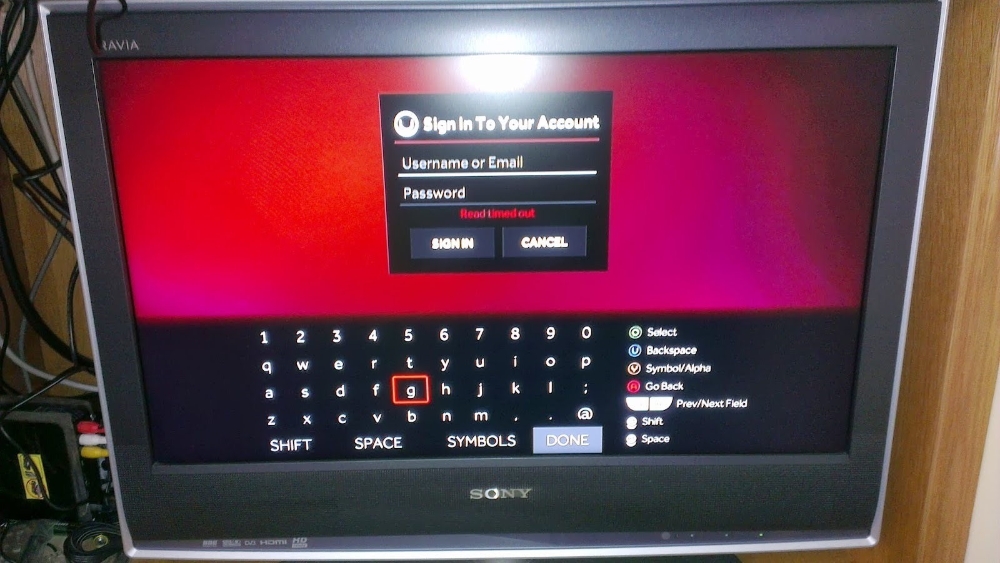

    <p class="caption"><strong>Figura 4.9.5</strong> Pantalla login</p>
</div>


<div class="figure" id="figure-49-6">
    

    <p class="caption"><strong>Figura 4.9.6</strong> Petición tarjeta crédito</p>
</div>


<p>Es una de las pocas cosas que me desagradan de la consola, además no deja claro si los datos se guardan en la consola u online.</p>

<p>La pantalla principal me gusta por su sencillez:</p>

<div class="figure" id="figure-49-7">
    

    <p class="caption"><strong>Figura 4.9.7</strong> Pantalla principal</p>
</div>


<p>Aquí teneis 2 fotos del market, el cual se entra mediante la opción discover del menú principal:</p>

<div class="figure" id="figure-49-8">
    

    <p class="caption"><strong>Figura 4.9.8</strong> Market</p>
</div>


<div class="figure" id="figure-49-9">
    

    <p class="caption"><strong>Figura 4.9.9</strong> Juego seleccionado del market</p>
</div>


<p>El market me gusta por su sencillez, pero creo que deberían de mejorarlo. Aunque sencillo es un poco engorroso.
Las imágenes se cargan cada vez, lo que hace que si te quedas sin conexión no se vea ninguna.
La primera vez que intentas ir a ver la lista de juegos, como no hay ninguno, te abre directamente el market.</p>

<p>Otra cosa que he visto y que creo que han de mejorar es la personalización de los menús de configuración:</p>

<div class="figure" id="figure-49-10">
    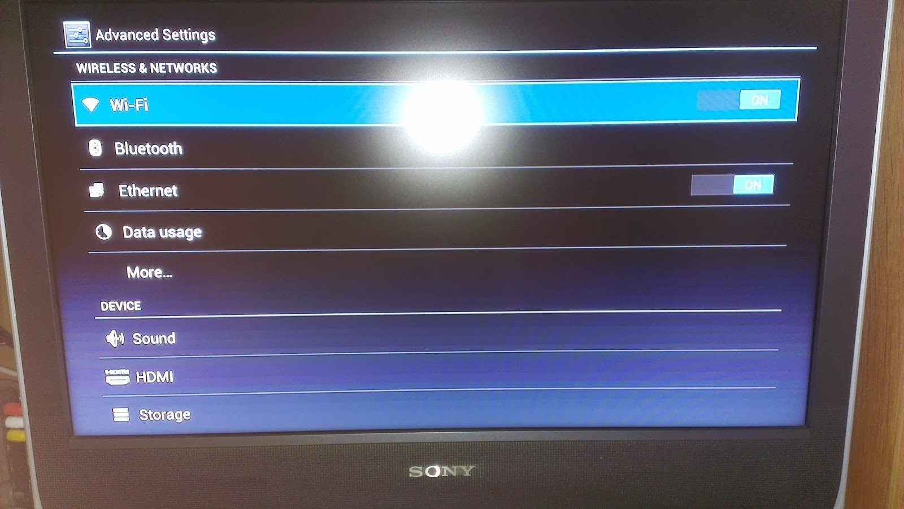

    <p class="caption"><strong>Figura 4.9.10</strong> Menus de configuración</p>
</div>


<p>Utilizan los que lleva Android por defecto y no están personalizados, podrían por lo menos cambiarles el color al rojo de los menús de la consola.</p>

<p>Una cosa que echo de menos son muchos juegos que tiene android y que espero que poco a poco los vayan incorporando.</p>

<p>Pese a que hay algunas cosas que no me gustan, creo que se ha de dar una oportunidad a la consola y a la comunidad que hay detrás de ella.</p>

</div>
        <div class="item chapter">
    <h1 id="2014"><span>Capítulo 5</span> 2014</h1>
    <p>En esta página he creado una relación de las entradas del blog con su fecha de publicación.</p>

<div class="table" id="table-5-1">

    <table>
<thead>
<tr>
  <th align="right">Fecha</th>
  <th>Entrada</th>
</tr>
</thead>
<tbody>
<tr>
  <td align="right">3 de julio de 2014</td>
  <td><a href="#2014_01">Líneas mínimas a añadir al código del Industruino para usar las librerías m2tklib</a></td>
</tr>
<tr>
  <td align="right">26 de diciembre de 2014</td>
  <td>[Pasos seguidos para crear un sistema de backup online usando el BitTorrent y una Cubietruck (#2014_02)</td>
</tr>
<tr>
  <td align="right">30 de diciembre de 2014</td>
  <td><a href="#2014_03">Información sobre temperatura y discos duros en la cubietruck (cubieboard 3)</a></td>
</tr>
</tbody>
</table>
</div>


</div>
        <div class="item chapter">
    <h1 id="2014_01"><span>Capítulo 5.1</span> Líneas mínimas a añadir al código del Industruino para usar las librerías m2tklib</h1>
    <p>Según mi experiencia creando menús y formularios dentro del Industruino usando las librerías m2tklib, el código mínimo a añadir a un fichero de código es el siguiente:</p>

<h3 id="includes-minimos">5.1.0.1 Includes mínimos</h3>

<p>``` c++</p>

<h1 id="include-ltu8glibh">Capítulo 5.1 include &lt;U8glib.h></h1>

<h1 id="include-ltm2tkh">Capítulo 5.1 include &lt;M2tk.h></h1>

<h1 id="include-ltutility-m2ghu8gh">Capítulo 5.1 include &lt;utility/m2ghu8g.h></h1>

<div class="code code">
<pre class="code">&nbsp;
&nbsp;
### Declaración del tipo de pantalla
&nbsp;
Esta declaración se ha de descomentar, si ya está o añadir al código.
&nbsp;
``` c++
U8GLIB_MINI12864 u8g(21, 20, 19, 22);</pre>
</div>

<h3 id="gestion-de-botones">5.1.0.1 Gestión de botones</h3>

<p>``` c++
uint8_t uiKeyUpPin = 7;
uint8_t uiKeyDownPin = 3;
uint8_t uiKeySelectPin = 2;
uint8_t uiKeyExitPin = 0;</p>

<p>int adc_key_in = 0;</p>

<p>int read_LCD_buttons_original() //routine to check button inputs and pass the correct button event to GUI
{</p>

<p>adc_key_in = analogRead(A5);  // read the value from the sensor
  delay(5); //switch debounce delay. Increase this delay if incorrect switch selections are returned.
  if (adc_key_in &lt; 100) return M2_KEY_NONE; // We make this the 1st option for speed reasons since it will be the most likely result
  if (adc_key_in > 300 &amp;&amp; adc_key_in &lt; 315)  return M2_KEY_PREV;
  if (adc_key_in > 600 &amp;&amp; adc_key_in &lt; 630)  return M2_KEY_SELECT;
  if (adc_key_in > 700 &amp;&amp; adc_key_in &lt; 930)  return M2_KEY_NEXT;</p>

<p>}</p>

<p>uint8_t m2_es_arduino_analog_input(m2_p ep, uint8_t msg)
{
  switch (msg)
  {
case M2_ES_MSG_GET_KEY:
  return read_LCD_buttons_original();
case M2_ES_MSG_INIT:
  return 0;
  }
  return 0;
}</p>

<div class="code code">
<pre class="code">&nbsp;
### A incluir dentro del método setup()
&nbsp;
``` c++
void industruino_Menu_setup(void) {
&nbsp;
  //flip the screen 180°
  u8g.setRot180();
  // Connect u8glib with m2tklib
  m2_SetU8g(u8g.getU8g(), m2_u8g_box_icon);
&nbsp;
  // Assign u8g font to index 0
  m2.setFont(0, u8g_font_6x13r);
&nbsp;
  // Assign icon font to index 3
  m2.setFont(3, u8g_font_m2icon_7);
&nbsp;
}</pre>
</div>

<h3 id="metodo-loop">5.1.0.2 Método loop()</h3>

<p>``` c++
void industruino_Menu_loop() {
  // menu management
  m2.checkKey();
  if ( m2.handleKey() != 0 ) {
u8g.firstPage();
do {
  m2.checkKey();
  draw();
} while ( u8g.nextPage() );
  }
}</p>

<div class="code code">
<pre class="code">&nbsp;
### Métodos adicionales a añadir
&nbsp;
``` c++
Método draw:
&nbsp;
void draw(void) {
  m2.draw();
}</pre>
</div>

</div>
        <div class="item chapter">
    <h1 id="2014_02"><span>Capítulo 5.2</span> Pasos seguidos para crear un sistema de backup online usando el BitTorrent y una Cubietruck (Cubieboard 3)</h1>
    <h2 id="consideraciones-iniciales-sobre-el-documento">5.2.1 Consideraciones iniciales sobre el documento</h2>

<p>En este documento se detallan los pasos seguidos para instalar el Lubuntu en una Cubietruck (Cubieboard 3) y el BitTorrent Sync.
Los pasos detallados son los que yo he seguido y que a mí me han funcionado.
En mi caso en la tarjeta SD está el sistema operativo y las aplicaciones, en el disco duro sólo se encuentran los ficheros del BitTorrent Sync.</p>

<h2 id="instalacion-del-sistema-operativo-en-tarjeta-sd">5.2.2 Instalación del sistema operativo en tarjeta SD</h2>

<p>En este apartado se detallan los pasos para realizar la instalación del Lubuntu dentro de la tarjeta SD.</p>

<h3 id="consideraciones-iniciales">5.2.2.1 Consideraciones iniciales</h3>

<p>Para realizar los pasos detallados a continuación se ha utilizado un sistema Ubuntu.
La tarjeta SD estaba montada como <code>sdb</code>.</p>

<h3 id="instalacion-del-sistema-operativo-dentro-de-la-tarjeta-sd">5.2.2.2 Instalación del sistema operativo dentro de la tarjeta SD</h3>

<p>El sistema operativo sobre el que se han realizado las acciones siguientes ha sido el Lubuntu para la cubieboard, aunque la versión de linux sobre la que se ejecuten no debería de importar.</p>

<p>Los pasos seguidos han sido los siguientes:</p>

<ul>
<li>Asignación de la ruta en la que está la tarjeta a una variable del sistema</li>
</ul>

<p><code>bash
card=/dev/sdb</code></p>

<ul>
<li>Limpieza de la tarjeta SD:</li>
</ul>

<p><code>bash
sudo dd if=/dev/zero of=${card} bs=1024 seek=544 count=128</code></p>

<ul>
<li>Hacer la tarjeta SD arrancable:</li>
</ul>

<p><code>bash
sudo dd if=u-boot-sunxi-with-spl-ct-20131102.bin of=$card bs=1024 seek=8</code></p>

<ul>
<li>Particionado de la tarjeta SD: Esta se ha de particionar en 2 particiones, la primera de 64Mb. (2048 sectores) y la segunda del resto del tamaño. Ejemplo de como se queda:</li>
</ul>

<p><code>bash
 Device Boot      Start         End      Blocks   Id  System
/dev/sdb1            2048      133119       65536   83  Linux
/dev/sdb2          133120    15278079     7572480   83  Linux</code></p>

<p>Para poder realizar la modificación de la partición se ha usado el comando siguiente:</p>

<p><code>bash
sudo fdisk $card</code></p>

<ul>
<li>Formateado de las particiones creadas:</li>
</ul>

<p><code>bash
sudo mkfs.ext2 ${card}1
sudo mkfs.ext4 ${card}2</code></p>

<ul>
<li>Copiado de los datos a la tarjeta SD:</li>
</ul>

<p><code>bash
mkdir /tmp/sdb1 /tmp/sdb2
sudo mount -t ext2 ${card}1 /tmp/sdb1
sudo mount -t ext4 ${card}2 /tmp/sdb2
sudo tar -C /tmp/sdb1 -xvf bootfs-part1.tar.gz
sudo tar -C /tmp/sdb2 -xvf rootfs-part2.tar.gz
sync
sudo umount /tmp/sdb1
sudo umount /tmp/sdb2</code></p>

<h3 id="configuracion-del-sistema-operativo">5.2.2.3 Configuración del sistema operativo</h3>

<h4 id="configuracion-del-teclado-en-espanol">5.2.2.3.1 Configuración del teclado en español:</h4>

<p>Para esto ejecutamos el siguiente comando:</p>

<p><code>bash
sudo dpkg-reconfigure keyboard-configuration</code></p>

<p>Este comando se encarga de lanzar la aplicación de reconfiguración del teclado.
Seleccionamos <strong>Generic 105 key (Intl PC)</strong>, el idioma <strong>Spanish</strong> y luego las opciones predeterminadas con <strong>OK</strong>.</p>

<h4 id="configuracion-de-red">5.2.2.3.2 Configuración de red:</h4>

<p>En mi caso no la he tocado, ya que uso el DHCP, que es la configuración que viene por defecto.</p>

<h4 id="configuracion-de-la-zona-horaria">5.2.2.3.3 Configuración de la zona horaria:</h4>

<p>Para esto ejecutamos el siguiente comando:</p>

<p><code>bash
sudo dpkg-reconfigure tzdata</code></p>

<p>Este comando se encarga de lanzar la aplicación de reconfiguración de la zona horaria.
Seleccionamos la zona geográfica <strong>Europe</strong> y la zona horaria <strong>Madrid</strong>.</p>

<h4 id="cambio-del-nombre-a-la-cubieboard">5.2.2.3.4 Cambio del nombre a la cubieboard:</h4>

<p>Para esto tenemos que crear/modificar el fichero <strong>/etc/hosts</strong> y añadir el nombre que deseemos que tenga la cubieboard.</p>

<p>Para ello ejecutaremos el siguiente comando:
<code>bash
sudo nano/etc/hosts</code></p>

<p>Y añadiremos la siguiente línea, donde <em>cubieboard</em> es el nombre que le asignaremos:</p>

<p><code>127.0.0.1 cubieboard</code></p>

<h4 id="montado-del-disco-duro">5.2.2.3.5 Montado del disco duro:</h4>

<p>En mi caso el disco duro es <strong>/dev/sda1</strong>.
El disco duro se va a montar sobre la carpeta <strong>/media/hdd</strong>.
Para montar el disco duro y que la configuración se guarde entre arranques del sistema operativo se ha de modificar el fichero <strong>/etc/fstab</strong>. Para ello añadiremos la siguiente línea a dicho fichero.</p>

<p><code>/dev/sda1 /media/hdd ext4 defaults 0 2</code></p>

<h1 id="instalacion-y-configuracion-del-bitorrent-sync">Capítulo 5.2 Instalación y configuración del Bitorrent Sync</h1>

<h2 id="consideraciones-iniciales-2">5.2.1 Consideraciones iniciales</h2>

<p>Las consideraciones inciales son las siguientes:</p>

<ul>
<li>El BitTorrent Sync lo descargo dentro de la carpeta <strong>/home/linaro/Downloads/</strong> y se descomprime dentro de <strong>/home/linaro/Downloads/btsync</strong>.</li>
<li>El binario lo dejo dentro de la carpeta <strong>/usr/local/bin/</strong>.</li>
<li>La configuración del programa está en el fichero <strong>/etc/btsync/btsync.conf</strong>.</li>
<li>Tengo un script de arranque del programa, para que este arranque al arrancar el sistema operativo.</li>
<li>El disco duro se ha montado sobre la carpeta: <strong>/media/hdd/</strong>.</li>
</ul>

<h2 id="proceso-de-instalacion">5.2.2 Proceso de instalación</h2>

<ul>
<li>Descarga del Bittorrent Sync.</li>
</ul>

<p><code>bash
wget http://download-new.utorrent.com/endpoint/btsync/os/linux-arm/track/stable
mkdir btsync
mv stable btsync_arm.tar.gz
tar zxvf btsync_arm.tar.gz -C btsync</code></p>

<ul>
<li>Creamos variables del sistema para ayudarnos en la creación</li>
</ul>

<p><code>bash
config="/etc/btsync/btsync.conf"
user="root"</code></p>

<ul>
<li>Comando a ejecutar para que el programa arranque, en mi caso ha hecho falta, aunque no siempre es preciso. Este paso consiste en linkar el nombre de una librería, para que el programa pueda encontrarla. Esto es necesario para cuando se lance el comando del punto siguiente y este de un error.</li>
</ul>

<p><code>bash
ln -s /lib/arm-linux-gnueabihf/ld-linux.so.3 /lib/ld-linux.so.3</code></p>

<ul>
<li>Extracción del fichero de configuración por defecto.</li>
</ul>

<p><code>bash
btsync --dump-sample-config &gt; $config</code></p>

<ul>
<li>Reconfiguración del fichero de configuración por defecto. Para ello se lanzan los siguientes comandos.</li>
</ul>

<p><code>bash
sed -i 's/"device_name"\s*:\s*"My Sync Device"/"device_name": "CUBIEBOARD"/g' $config
sed -i 's/"storage_path"\s*:\s*"\/home\/user\/\.sync"/"storage_path": "\/media\/hdd\/btsync"/g' $config
sed -i 's/"login"\s*:\s*"admin",//g' $config
sed -i 's/"password"\s*:\s*"password"//g' $config
sed -i 's/:8888",/:8888"/g' $config</code></p>

<p>Como puede observarse se han cambiado los parámetros <em>device_name</em>, <em>storage_path</em>, <em>login</em> y <em>password</em>. Los comandos anteriores tambien pueden cambiarse por un simple <code>nano $config</code> y cambiar los parámetros de forma manual. De todas formas es recomandable lanzar este último parámetro para revisar la configuración y ver si se quiere cambiar algún parámetro más.</p>

<ul>
<li>Creación del script de arranque automático.</li>
</ul>

<p><code>bash
mkdir /var/run/btsync/
nano /etc/init.d/btsync</code></p>

<p>El contenido del fichero <code>/etc/init.d/btsync</code> es el siguiente:</p>

<p>``` bash</p>

<h1 id="bin-sh">Capítulo 5.2 ! /bin/sh</h1>

<h3 id="begin-init-info">5.2.0.1 BEGIN INIT INFO</h3>

<h1 id="provides-btsync">Capítulo 5.2 Provides: btsync</h1>

<h1 id="required-start-syslog-remote-fs">Capítulo 5.2 Required-Start: $syslog $remote_fs</h1>

<h1 id="required-stop-syslog-remote-fs">Capítulo 5.2 Required-Stop: $syslog $remote_fs</h1>

<h1 id="should-start-local-fs">Capítulo 5.2 Should-Start: $local_fs</h1>

<h1 id="should-stop-local-fs">Capítulo 5.2 Should-Stop: $local_fs</h1>

<h1 id="default-start-2-3-4-5">Capítulo 5.2 Default-Start: 2 3 4 5</h1>

<h1 id="default-stop-0-1-6">Capítulo 5.2 Default-Stop: 0 1 6</h1>

<h1 id="short-description-btsync-bittorent-syncapp">Capítulo 5.2 Short-Description: btsync - Bittorent SyncApp</h1>

<h1 id="description-btsync-bittorent-syncapp">Capítulo 5.2 Description: btsync - Bittorent SyncApp</h1>

<h3 id="end-init-info">5.2.0.1 END INIT INFO</h3>

<p>user=root
group=root</p>

<h1 id="the-full-path-to-the-filename-where-you-store-your-rtorrent-configuration">Capítulo 5.2 the full path to the filename where you store your rtorrent configuration</h1>

<p>config="/etc/btsync/btsync.conf"</p>

<h1 id="set-of-options-to-run-with">Capítulo 5.2 set of options to run with</h1>

<p>options=""</p>

<p>PATH=/usr/local/sbin:/usr/local/bin:/sbin:/bin:/usr/sbin:/usr/bin
DAEMON=/usr/local/bin/btsync
DAEMON_ARGS="--config \$config"
NAME=btsync
DESC=btsync</p>

<p>RUNDIR=/var/run/syncapp
PIDFILE=/var/run/btsync.pid</p>

<p>test -x \$DAEMON || exit 0</p>

<p>if [ -r /etc/default/\$NAME ]
then
. /etc/default/\$NAME
fi</p>

<p>set -e</p>

<p>case "\$1" in
    start)
    echo -n "Starting \$DESC: "
    mkdir -p \$RUNDIR
    touch \$PIDFILE
    chown \$user:\$group \$RUNDIR \$PIDFILE
    chmod 755 \$RUNDIR</p>

<pre><code>if [ -n "\$ULIMIT" ]
then
ulimit -n \$ULIMIT
fi

if start-stop-daemon --start --quiet --umask 007 --pidfile \$PIDFILE --chuid \$user:\$group --exec \$DAEMON -- \$DAEMON_ARGS
then
echo "\$NAME."
else
echo "failed"
fi
;;

stop)
echo -n "Stopping \$DESC: "
killall -w btsync || true
sleep 1
rm -f \$PIDFILE || true
;;

status)
echo -n "\$DESC is "
if start-stop-daemon --stop --quiet --signal 0 --name \${NAME} --pidfile \${PIDFILE}
then
echo "running"
else
echo "not running"
exit 1
fi
;;

*)
echo "Usage: /etc/init.d/\$NAME {start|stop|status}" &gt;&amp;2
exit 1
;;
</code></pre>

<p>esac</p>

<p>exit 0
```</p>

<ul>
<li>Arranque del programa</li>
</ul>

<p><code>bash
chmod +x /etc/init.d/btsync
update-rc.d btsync defaults</code></p>

<h2 id="actualizacion-del-bittorrent-sync">5.2.1 Actualización del Bittorrent Sync</h2>

<p>Para actualiar el programa me he creado el siguiente script, este se encuentra dentro de <strong>/home/linaro/Downloads/</strong>. El mismo script se encarga de descargar, extraer, mover el ejecutable y reiniciar el servicio.
El script es el siguiente:</p>

<p>``` bash</p>

<h1 id="bin-bash">Capítulo 5.2 !/bin/bash</h1>

<p>rm -Rf btsync
mkdir btsync</p>

<p>wget http://download-new.utorrent.com/endpoint/btsync/os/linux-arm/track/stable</p>

<p>mv stable btsync_arm.tar.gz
tar zxvf btsync_arm.tar.gz -C btsync</p>

<p>service btsync stop</p>

<p>cp ./btsync/btsync /usr/local/bin/</p>

<p>service btsync start
```</p>

<h2 id="informacion-obtenida-de">5.2.1 Información obtenida de:</h2>

<p><a href="http://docs.cubieboard.org/tutorials/ct1/installation/install_lubuntu_desktop_server_to_sd_card">Instalación del linux en la SD</a></p>

<p><a href="https://www.imai-solutions.com/cubieboard-lubuntu">Configuración del linux</a></p>

<p><a href="http://quadfinity.blogspot.com.es/2013/11/Install-BitTorrent-Sync-on-Cubieboard-A10.html">Configuración del bittorrent sync</a></p>

<p><a href="https://help.ubuntu.com/community/Fstab">Fstab</a></p>

</div>
        <div class="item chapter">
    <h1 id="2014_03"><span>Capítulo 5.3</span> Información sobre temperatura y discos duros en la cubietruck (cubieboard 3)</h1>
    <h2 id="obtencion-de-la-temperatura-de-la-cubietruck">5.3.1 Obtención de la temperatura de la cubietruck:</h2>

<p>Se ha de crear un script que contenga el siguiente código:</p>

<p>``` bash</p>

<h1 id="bin-bash-2">Capítulo 5.3 !/bin/bash</h1>

<p>cat /sys/devices/platform/sunxi-i2c.0/i2c-0/0-0034/temp1_input | awk '{ printf ("CPU Temperature = %0.1f°C\n",$1/1000); }'
```</p>

<p>La ejecución del script que se acaba de crear es la siguiente:</p>

<p><code>CPU Temperature = 52.2°C</code></p>

<h2 id="informacion-de-los-discos">5.3.1 Información de los discos:</h2>

<h3 id="smartmontools">5.3.1.1 smartmontools</h3>

<p>Para obtener la información de los discos se puede utiliar el paquete smartmontools:</p>

<p><code>bash
apt-get install smartmontools</code></p>

<p>Para obtener la información de la unidad sda1:</p>

<p><code>bash
smartctl -A /dev/sda</code></p>

<p>se obtiene una información similar a:</p>

<p>```
smartctl 5.43 2012-06-30 r3573 [armv7l-linux-3.4.61+] (local build)
Copyright (C) 2002-12 by Bruce Allen, http://smartmontools.sourceforge.net</p>

<p>=== START OF READ SMART DATA SECTION ===
SMART Attributes Data Structure revision number: 16
Vendor Specific SMART Attributes with Thresholds:
ID# ATTRIBUTE_NAME          FLAG     VALUE WORST THRESH TYPE      UPDATED  WHEN_FAILED RAW_VALUE
  1 Raw_Read_Error_Rate     0x002f   200   200   051    Pre-fail  Always       -       0
  3 Spin_Up_Time            0x0027   179   179   021    Pre-fail  Always       -       2016
  4 Start_Stop_Count        0x0032   100   100   000    Old_age   Always       -       299
  5 Reallocated_Sector_Ct   0x0033   200   200   140    Pre-fail  Always       -       0
  7 Seek_Error_Rate         0x002e   200   200   000    Old_age   Always       -       0
  9 Power_On_Hours          0x0032   100   100   000    Old_age   Always       -       253
 10 Spin_Retry_Count        0x0032   100   100   000    Old_age   Always       -       0
 11 Calibration_Retry_Count 0x0032   100   253   000    Old_age   Always       -       0
 12 Power_Cycle_Count       0x0032   100   100   000    Old_age   Always       -       43
191 G-Sense_Error_Rate      0x0032   100   100   000    Old_age   Always       -       0
192 Power-Off_Retract_Count 0x0032   200   200   000    Old_age   Always       -       41
193 Load_Cycle_Count        0x0032   200   200   000    Old_age   Always       -       680
194 Temperature_Celsius     0x0022   092   085   000    Old_age   Always       -       55
196 Reallocated_Event_Count 0x0032   200   200   000    Old_age   Always       -       0
197 Current_Pending_Sector  0x0032   200   200   000    Old_age   Always       -       0
198 Offline_Uncorrectable   0x0030   100   253   000    Old_age   Offline      -       0
199 UDMA_CRC_Error_Count    0x0032   200   200   000    Old_age   Always       -       0
200 Multi_Zone_Error_Rate   0x0008   100   253   000    Old_age   Offline      -       0
```</p>

<h3 id="hddtemp">5.3.1.2 hddtemp</h3>

<p>Para obtener la información de los discos se puede utilizar el paquete hddtemp:</p>

<p><code>bash
apt-get install hddtemp</code></p>

<p>Cuando pregunte si se quiere dejar como demonio he dicho que no.</p>

<p>Para obtener la información de la temperatura:</p>

<p><code>bash
hddtemp /dev/sda</code></p>

<p>Se obtiene una salida similar a:</p>

<p><code>/dev/sda: WDC WD10JPVX-22JC3T0: 55°C</code></p>

<h2 id="informacion-obtenida-de-2">5.3.2 Información obtenida de:</h2>

<p><a href="http://www.cubieforums.com/index.php/topic,2004.0.html">Información temperatura y discos duros</a></p>

<p><a href="https://help.ubuntu.com/community/Fstab">Fstab</a></p>

</div>
        <div class="item chapter">
    <h1 id="2015"><span>Capítulo 6</span> 2015</h1>
    <p>En esta página he creado una relación de las entradas del blog con su fecha de publicación.</p>

<div class="table" id="table-6-1">

    <table>
<thead>
<tr>
  <th align="right">Fecha</th>
  <th>Entrada</th>
</tr>
</thead>
<tbody>
<tr>
  <td align="right">26 de febrero de 2015</td>
  <td><a href="#2015_01">Markdown</a></td>
</tr>
<tr>
  <td align="right">17 de abril de 2015</td>
  <td><a href="#2015_02">Máquina virtual para trabajar con documentos en Markdown</a></td>
</tr>
<tr>
  <td align="right">8 de mayo de 2015</td>
  <td><a href="#2015_03">Añadir a un usuario los permisos de sudo en Fedora</a></td>
</tr>
<tr>
  <td align="right">9 de mayo de 2015</td>
  <td><a href="#2015_04">Instalación y primeros pasos con Haroopress</a></td>
</tr>
<tr>
  <td align="right">10 de junio de 2015</td>
  <td><a href="#2015_05">Formato de datos de Haroopress</a></td>
</tr>
<tr>
  <td align="right">4 de julio de 2015</td>
  <td><a href="#2015_06">Web con información sobre temperatura y discos duros en la cubietruck (cubieboard 3)</a></td>
</tr>
<tr>
  <td align="right">7 de julio de 2015</td>
  <td><a href="#2015_07">Organizar fotos por fecha usando Zoner Photo Studio</a></td>
</tr>
<tr>
  <td align="right">12 de septiembre de 2015</td>
  <td><a href="#2015_08">Construcción de máquina recreativa - Introducción</a></td>
</tr>
<tr>
  <td align="right">13 de septiembre de 2015</td>
  <td><a href="#2015_09">Construcción de máquina recreativa - Mueble - Construcción del mueble</a></td>
</tr>
<tr>
  <td align="right">14 de septiembre de 2015</td>
  <td><a href="#2015_10">Construcción de máquina recreativa - Mueble - Entrada de alimentación y ventilación</a></td>
</tr>
<tr>
  <td align="right">15 de septiembre de 2015</td>
  <td><a href="#2015_11">Construcción de máquina recreativa - Mueble - Cableado</a></td>
</tr>
<tr>
  <td align="right">16 de septiembre de 2015</td>
  <td><a href="#2015_12">Construcción de máquina recreativa - Mueble - Botones de encendido y apagado de la máquina</a></td>
</tr>
<tr>
  <td align="right">17 de septiembre de 2015</td>
  <td><a href="#2015_13">Construcción de máquina recreativa - Mueble - Bezel</a></td>
</tr>
<tr>
  <td align="right">18 de septiembre de 2015</td>
  <td><a href="#2015_14">Construcción de máquina recreativa - El Vídeo</a></td>
</tr>
<tr>
  <td align="right">19 de septiembre de 2015</td>
  <td><a href="#2015_15">Construcción de máquina recreativa - Los Controles</a></td>
</tr>
<tr>
  <td align="right">20 de septiembre de 2015</td>
  <td><a href="#2015_16">Construcción de máquina recreativa - El Sonido</a></td>
</tr>
<tr>
  <td align="right">21 de septiembre de 2015</td>
  <td><a href="#2015_17">Construcción de máquina recreativa - Agradecimientos</a></td>
</tr>
<tr>
  <td align="right">3 de noviembre de 2015</td>
  <td><a href="#2015_18">Sistema de apertura de un escaparate con arduino</a></td>
</tr>
</tbody>
</table>
</div>


</div>
        <div class="item chapter">
    <h1 id="2015_01"><span>Capítulo 6.1</span> Markdown</h1>
    <p>Desde hace un tiempo estoy usando Markdown para generar mi documentación interna, además de crear los artículos del blog y las noticias de la web.</p>

<h2 id="que-es-markdown">6.1.1 Qué es Markdown</h2>

<p>En un principio, la idea de sus creadores era crear una alternativa a HTML, pero termino mutando. Markdown nos permite aprovechar las ventajas del texto plano, sin tener que renunciar al formato, pero sí a todas las complicaciones derivadas del mismo que pueden surgir cuando lo trasladamos a la web. Markdown fue creado originalmente por John Gruber, con ayuda de Aaron Swartz, con el propósito de crear un documento de texto plano fácil de escribir y fácil de leer, y que pudiera convertirse de forma sencilla y válida a XHTML.</p>

<p>La mejor descripción de lo que es Markdown está en la <a href="http://daringfireball.net/projects/markdown/">web de Markdown de John Gruber</a>:</p>

<div class="code code">
<pre class="code">Markdown is a text-to-HTML conversion tool for web writers. Markdown allows you to write using an easy-to-read, easy-to-write plain text format, then convert it to structurally valid XHTML (or HTML).
&nbsp;
Thus, “Markdown” is two things: (1) a plain text formatting syntax; and (2) a software tool, written in Perl, that converts the plain text formatting to HTML. See the Syntax page for details pertaining to Markdown’s formatting syntax. You can try it out, right now, using the online Dingus.
&nbsp;
The overriding design goal for Markdown’s formatting syntax is to make it as readable as possible. The idea is that a Markdown-formatted document should be publishable as-is, as plain text, without looking like it’s been marked up with tags or formatting instructions. While Markdown’s syntax has been influenced by several existing text-to-HTML filters, the single biggest source of inspiration for Markdown’s syntax is the format of plain text email.</pre>
</div>

<h2 id="por-que-uso-markdown">6.1.2 ¿Por que uso Markdown?</h2>

<p>Markdown me permite crear documentos de forma rápida, simple y que se visualizan de la misma forma en todos los sistemas operativos. Además de que si los guardo en un sistema de control de versiones puedo ver más facilmente los cambios que he realizado sobre estos.</p>

<p>Otra de las ventajas es el tamaño, al ser un fichero de texto el tamaño es muy reducido.</p>

<h2 id="aplicaciones-que-utilizo">6.1.3 Aplicaciones que utilizo</h2>

<p>Las aplicaciones que uso para crear y modificar los documentos en Markdown son los siguientes:</p>

<h3 id="aplicaciones-de-escritorio">6.1.3.1 Aplicaciones de escritorio</h3>

<p>Para el escritorio uso las siguientes:</p>

<h4 id="haroopad">6.1.3.1.1 Haroopad</h4>

<p>De todos los editores que he encontrado es el que más me gusta, considero que es el más completo de los que he visto.<br />
Las características que han hecho que lo elija son las siguientes:
* Es multiplataforma.
* De fácil manejo.
* Intiutivo.
* Me permite tener varios estilos de texto</p>

<p>Este editor lo uso para documentos que no sean muy grandes y puedan estar en un sólo fichero.</p>

<h4 id="gitbook">6.1.3.1.2 Gitbook</h4>

<p>Es el mejor editor que he encontrado para crear documentos grandes, ya que permite que cada capítulo sea un documento por separado, además de que después permite que se genere una web, un pdf o un ebook con la estructura que se le ha dado al documento.<br />
Además me permite publicar dentro de su plataforma para poder compartir los documentos.<br />
Este es el que utilizo para publicar en blog en formato ebook.</p>

<p>En estos momentos la única pega que tiene es que el editor de escritorio está descontinuado, pero es completamente funcional.</p>

<h3 id="aplicaciones-online">6.1.3.2 Aplicaciones online</h3>

<p>Este es el punto en el que aún no me he decidido, por ahora uso indistintamente uno de estos dos editores:
* <a href="https://stackedit.io/">Stackedit</a>: este me permite publicar en el blog directamente, además de que pueden cambiarse los estilos de impresión.
* <a href="http://markable.in">Markable</a>: de este me gusta más la previsualización, el tamaño de letras es menor y te permite ver mejor el documento resultante.</p>

<h3 id="plugins-navegadores">6.1.3.3 Plugins navegadores</h3>

<p>Para los navegadores uso un plugin que se llama <a href="http://markdown-here.com/">Markdown Here</a>.<br />
Este me permite introducir el texto en formato Markdown en una casilla de texto y después convertirlo, aplicandole el estilo que se le ha configurado al plugin.<br />
Sólo tiene un estilo, pero es completamente modificable.</p>

<h2 id="links-interesantes-sobre-markdwon">6.1.4 Links interesantes sobre Markdwon</h2>

<p><a href="http://daringfireball.net/projects/markdown/">Página oficial</a></p>

<h3 id="entradas-de-blogs-interesantes">6.1.4.1 Entradas de blogs interesantes:</h3>

<p><a href="http://hipertextual.com/archivo/2013/04/que-es-markdown/">Markdown: qué es y cómo aprovecharlo</a><br />
<a href="http://joedicastro.com/markdown-la-mejor-opcion-para-crear-contenidos-web.html">Markdown, la mejor opción para crear contenidos web</a><br />
<a href="http://www.makeuseof.com/tag/learning-markdown-write-web-faster/">Learning Markdown: Write For The Web, Faster</a><br />
<a href="http://whatismarkdown.com/">whatismarkdown.com</a></p>

<h3 id="editores">6.1.4.2 Editores:</h3>

<p><a href="http://pad.haroopress.com/">Haroopad</a><br />
<a href="http://www.gitbook.com">Gitbook</a><br />
<a href="https://stackedit.io/">Stackedit</a><br />
<a href="http://markable.in">Markable</a><br />
<a href="http://markdown-here.com/">Markdown Here</a></p>

</div>
        <div class="item chapter">
    <h1 id="2015_02"><span>Capítulo 6.2</span> Máquina virtual para trabajar con documentos en Markdown</h1>
    <p>Para trabajar con Markdown me he creado una máquina virtual con los siguientes programas.</p>

<h2 id="informacion-sobre-el-sistema-operativo">6.2.1 Información sobre el sistema operativo.</h2>

<p>Se ha instalado la distribución Fedora con el escritorio LXDE.</p>

<h2 id="instalacion-de-utilidades-que-yo-considero-necesarias">6.2.2 Instalación de utilidades que yo considero necesarias.</h2>

<h3 id="yumex">6.2.2.1 Yumex</h3>

<div class="code bash">
<pre class="bash"><span class="kw2">yum install</span> yumex</pre>
</div>

<h3 id="firefox">6.2.2.2 Firefox</h3>

<div class="code bash">
<pre class="bash"><span class="kw2">yum install</span> firefox</pre>
</div>

<h3 id="gimp">6.2.2.3 Gimp</h3>

<div class="code bash">
<pre class="bash"><span class="kw2">yum install</span> <span class="kw2">gimp</span></pre>
</div>

<h3 id="servidor-ftp">6.2.2.4 Servidor FTP</h3>

<div class="code bash">
<pre class="bash"><span class="kw2">yum install</span> vsftpd</pre>
</div>

<p>Después de instalar el servidor de ftp se ha de activar en el firewall el servicio ftp, para que este sea accesible desde fuera de la máquina.</p>

<p>Los cambios realizados en el fichero de configuración del vsftpd (/etc/vsfptd/vsftpd.conf) son:</p>

<div class="code code">
<pre class="code">anonymous_enable=NO</pre>
</div>

<p>También he desactivado el selinux (/etc/selinux/config), por que voy a trabajar en local y dentro de una máquina virtual.</p>

<div class="code code">
<pre class="code">SELINUX=disabled</pre>
</div>

<p>Después de esto hay que reiniciar para que el selinux se desactive.</p>

<h3 id="cliente-ftp">6.2.2.5 Cliente FTP</h3>

<div class="code bash">
<pre class="bash"><span class="kw2">yum install</span> filezilla</pre>
</div>

<h3 id="git">6.2.2.6 GIT</h3>

<div class="code bash">
<pre class="bash"><span class="kw2">yum install</span> <span class="kw2">git</span></pre>
</div>

<h3 id="subversion">6.2.2.7 Subversion</h3>

<div class="code bash">
<pre class="bash"><span class="kw2">yum install</span> <span class="kw2">svn</span></pre>
</div>

<h2 id="instalacion-de-editores-de-markdown">6.2.3 Instalación de editores de Markdown</h2>

<h3 id="gitbook-150">6.2.3.1 Gitbook 1.5.0</h3>

<p>Esta es la vesión final en el momento de la redacción del documento.</p>

<h4 id="requerimientos-previos">6.2.3.1.1 Requerimientos previos</h4>

<div class="code bash">
<pre class="bash"><span class="kw2">yum install</span> npm</pre>
</div>

<h4 id="instalacion-de-gitbook-desde-npm">6.2.3.1.2 Instalación de gitbook desde npm</h4>

<div class="code bash">
<pre class="bash">npm <span class="kw2">install</span> gitbook <span class="re5">-g</span></pre>
</div>

<h4 id="uso">6.2.3.1.3 Uso</h4>

<h5 id="generar-libro">6.2.3.1.3.1 Generar libro:</h5>

<div class="code bash">
<pre class="bash">gitbook serve .<span class="sy0">/</span>repository</pre>
</div>

<h5 id="generar-web-estatica">6.2.3.1.3.2 Generar web estática:</h5>

<div class="code bash">
<pre class="bash">gitbook build .<span class="sy0">/</span>repository <span class="re5">--output</span>=.<span class="sy0">/</span>outputFolder</pre>
</div>

<h5 id="opciones-disponibles">6.2.3.1.3.3 Opciones disponibles:</h5>

<div class="code code">
<pre class="code">-o, --output &lt;directory&gt;  Path to output directory, defaults to ./_book
-f, --format &lt;name&gt;       Change generation format, defaults to site, availables are: site, page, ebook, json
--config &lt;config file&gt;    Configuration file to use, defaults to book.js or book.json</pre>
</div>

<h5 id="modo-debug-al-generar-libro">6.2.3.1.3.4 Modo debug al generar libro:</h5>

<div class="code bash">
<pre class="bash"><span class="kw3">export</span> <span class="re2">DEBUG</span>=<span class="kw2">true</span>
gitbook build .<span class="sy0">/</span></pre>
</div>

<h4 id="informacion-adicional">6.2.3.1.4 Información adicional</h4>

<p><a href="https://github.com/GitbookIO/gitbook/">https://github.com/GitbookIO/gitbook/</a></p>

<h3 id="gitbook-editor">6.2.3.2 Gitbook Editor</h3>

<p>Este editor está descontinuado, pero funciona perfectamente para la versión de Gitbook indicada en este documento. Además de esto yo prefiero poder editar mis documentos en local y después subirlos a la web.</p>

<h4 id="requerimientos-previos-2">6.2.3.2.1 Requerimientos previos</h4>

<div class="code bash">
<pre class="bash"><span class="kw2">yum install</span> calibre</pre>
</div>

<h4 id="instalacion-de-gitbook-editor">6.2.3.2.2 Instalación de gitbook editor</h4>

<ol>
<li>Descargar el instalable desde la siguiente ruta: <a href="https://github.com/GitbookIO/editor/releases">https://github.com/GitbookIO/editor/releases</a></li>
<li>Descomprimir usando:
<code>bash
tar zxvf gitbook-linux64.tar.gz</code></li>
<li>Renombrar y mover la carpeta de gitbook editor:</li>
</ol>

<div class="code bash">
<pre class="bash"><span class="kw2">mv</span> linux64 gitbook
<span class="kw2">mv</span> gitbook ..</pre>
</div>

<ol>
<li>Por un bug en la referencia a una librería se ha de ejecutar el siguiente comando:</li>
</ol>

<div class="code bash">
<pre class="bash"><span class="kw2">sudo</span> <span class="kw2">ln</span> <span class="re5">-sf</span> <span class="sy0">/</span>lib64<span class="sy0">/</span>libudev.so.1 <span class="sy0">/</span>lib64<span class="sy0">/</span>libudev.so.0</pre>
</div>

<ol>
<li>Arranque del script de instalación:</li>
</ol>

<div class="code bash">
<pre class="bash"><span class="kw3">cd</span> gitbook
<span class="kw2">chmod</span> +x <span class="sy0">*</span>.sh
.<span class="sy0">/</span>install.sh</pre>
</div>

<ol>
<li>Ahora hay un icono en el menú inicio</li>
<li>Abrirlo y empezar</li>
</ol>

<h4 id="uso-2">6.2.3.2.3 Uso</h4>

<p>Es un cliente gráfico, no necesita usar la línea de comandos.</p>

<h4 id="informacion-adicional-2">6.2.3.2.4 Información adicional</h4>

<p><a href="https://github.com/GitbookIO/editor">Página de github de Gitbook Editor</a></p>

<h3 id="haroopad-2">6.2.3.3 Haroopad</h3>

<h4 id="requerimientos-previos-3">6.2.3.3.1 Requerimientos previos</h4>

<p>Se ha de instalar la siguiente librería:</p>

<p>sudo yum install systemd-libs.i686 -y</p>

<h4 id="instalacion-de-haroopad">6.2.3.3.2 Instalación de haroopad</h4>

<p>Hemos de descargarlo desde la <a href="http://pad.haroopress.com/user.html">página de Haroopad</a>.
El link de descarga que he utilizado es: <a href="https://bitbucket.org/rhiokim/haroopad-download/downloads/haroopad-v0.13.0_x64.tar.gz">Linux Binary (64bit)</a></p>

<p>Los comandos a ejecutar para realizar la instalación son:</p>

<div class="code bash">
<pre class="bash"><span class="kw2">tar</span> <span class="re5">-zxvf</span> haroopad-v0.12.2_amd64.tar.gz
<span class="kw2">tar</span> <span class="re5">-zxvf</span> data.tar.gz
<span class="kw2">sudo</span> <span class="kw2">cp</span> <span class="re5">-R</span> .<span class="sy0">/</span>usr <span class="sy0">/</span>
&nbsp;
<span class="kw2">tar</span> zxf control.tar.gz
<span class="kw2">chmod</span> <span class="nu0">755</span> postinst
<span class="kw2">sudo</span> .<span class="sy0">/</span>postinst</pre>
</div>

<p>Para solucionar el problema de que no se ve el icono se han de realizar las siguientes modificaciones en el fichero <code>/usr/share/applications/Haroopad.desktop</code>.
Se ha de reemplazar <code>Icon=haroopad</code> por <code>Icon=/usr/share/icons/hicolor/128x128/apps/haroopad.png</code>.</p>

<h4 id="uso-3">6.2.3.3.3 Uso</h4>

<p>Es un cliente gráfico, no necesita usar la línea de comandos.</p>

<h4 id="informacion-adicional-3">6.2.3.3.4 Información adicional</h4>

<p><a href="http://pad.haroopress.com/user.html">Página de haroopad</a></p>

<p><a href="http://www.bonashen.com/post/artifice/20140805-install-haroopad-on-fedora-20-64bit">Blog con información de como instalar el Haroopad en Fedora</a></p>

</div>
        <div class="item chapter">
    <h1 id="2015_03"><span>Capítulo 6.3</span> Añadir a un usuario los permisos de <code>sudo</code> en Fedora</h1>
    <p>Puede hacerse de 2 formas distintas:</p>

<h2 id="anadiendo-al-usuario-los-permisos-directamente">6.3.1 Añadiendo al usuario los permisos directamente</h2>

<p>Para esta opción hay que realizar los siguientes pasos:</p>

<ul>
<li>Ejecutar como root el siguiente comando:</li>
</ul>

<div class="code bash">
<pre class="bash">visudo</pre>
</div>

<ul>
<li>Añadir la siguiente línea:</li>
</ul>

<div class="code code">
<pre class="code">usuario    ALL=(ALL)       ALL</pre>
</div>

<p>debajo de la línea:</p>

<div class="code code">
<pre class="code">root    ALL=(ALL)       ALL</pre>
</div>

<h2 id="anadir-al-usuario-al-grupo-wheel">6.3.2 Añadir al usuario al grupo wheel</h2>

<p>Para esta opción hay que realizar los siguientes pasos:</p>

<ul>
<li>Ejecutar como root los siguientes comandos:</li>
</ul>

<div class="code bash">
<pre class="bash">gpasswd wheel <span class="re5">-a</span> usuario
visudo</pre>
</div>

<ul>
<li>Descomentar la línea, si esta comentada:</li>
</ul>

<div class="code code">
<pre class="code">%wheel  ALL=(ALL)       ALL</pre>
</div>

</div>
        <div class="item chapter">
    <h1 id="cd-node-modules-locally-npm-install"><span>Capítulo 6.4</span> cd ./node_modules/locally/;npm install</h1>
    <p>Como dicen en su github:</p>

<p><code>A static site generator built with Node.js, "Haroo" means "a day" Support Markdown presentation, Syntax Highlight, Themes</code></p>

<p>Es un generador de páginas web estátias hecho con Node.js.</p>

<p>Su web es: <a href="http://haroopress.com">http://haroopress.com</a>
Si github es: <a href="https://github.com/rhiokim/haroopress">https://github.com/rhiokim/haroopress</a></p>

<p>Su uso se vuelve un poco complicado al principio, ya que su web y el site por defecto que este crea están en idioma coreano.</p>

<h2 id="instalacion-requisitos-previos">6.4.1 Instalación requisitos previos:</h2>

<p>Los requerimientos prévios para la instalación son los siguientes:</p>

<h3 id="nodejs">6.4.1.1 Node.js</h3>

<p><code>bash
yum install nodejs</code></p>

<h3 id="git-2">6.4.1.2 Git</h3>

<p><code>bash
yum install git</code></p>

<h2 id="instalacion">6.4.2 Instalación</h2>

<p>Los pasos que he seguido para la instalación han sido los siguientes:</p>

<h3 id="obtencion-del-programa">6.4.2.1 Obtención del programa:</h3>

<p>Los comandos ejecutados han sido:</p>

<p><code>bash
mkdir haroopress_test
git clone https://github.com/rhiokim/haroopress.git haroopress_test</code></p>

<p>El resultado por pantalla ha sido</p>

<p><code>Cloning into 'haroopress_test'...
remote: Counting objects: 6758, done.
remote: Total 6758 (delta 0), reused 0 (delta 0), pack-reused 6758
Receiving objects: 100% (6758/6758), 22.34 MiB | 941.00 KiB/s, done.
Resolving deltas: 100% (2821/2821), done.
Checking connectivity... done.</code></p>

<h3 id="inicializacion-del-sitio-web">6.4.2.2 Inicialización del sitio web:</h3>

<p>Los comandos ejecutados han sido:</p>

<p>``` bash
cd haroopress_test</p>

<p>git config --global user.email "email"
git config --global user.name "username"</p>

<p>sudo make init
```</p>

<p>La ejecución del comando anterior da como resultado la siguiente salida por pantalla, en la cual se nos pide información básica sobre la web a generar.</p>

<p>``` bash
npm install -g node-gyp
npm http GET https://registry.npmjs.org/node-gyp
npm http 304 https://registry.npmjs.org/node-gyp
npm http GET https://registry.npmjs.org/graceful-fs
npm http GET https://registry.npmjs.org/minimatch
npm http GET https://registry.npmjs.org/mkdirp
npm http GET https://registry.npmjs.org/nopt
npm http GET https://registry.npmjs.org/npmlog
npm http GET https://registry.npmjs.org/tar
npm http GET https://registry.npmjs.org/fstream
npm http GET https://registry.npmjs.org/osenv
npm http GET https://registry.npmjs.org/rimraf
npm http GET https://registry.npmjs.org/which
npm http GET https://registry.npmjs.org/request
npm http GET https://registry.npmjs.org/glob
npm http GET https://registry.npmjs.org/semver
npm http 304 https://registry.npmjs.org/graceful-fs
npm http 304 https://registry.npmjs.org/npmlog
npm http 200 https://registry.npmjs.org/mkdirp
npm http 304 https://registry.npmjs.org/tar
npm http 200 https://registry.npmjs.org/nopt
npm http 304 https://registry.npmjs.org/fstream
npm http 304 https://registry.npmjs.org/osenv
npm http 200 https://registry.npmjs.org/minimatch
npm http 304 https://registry.npmjs.org/which
npm http 200 https://registry.npmjs.org/rimraf
npm http 200 https://registry.npmjs.org/semver
npm http 200 https://registry.npmjs.org/glob
npm http GET https://registry.npmjs.org/rimraf/-/rimraf-2.3.3.tgz
npm http GET https://registry.npmjs.org/semver/-/semver-4.3.4.tgz
npm http 200 https://registry.npmjs.org/request
npm http 200 https://registry.npmjs.org/rimraf/-/rimraf-2.3.3.tgz
npm http 200 https://registry.npmjs.org/semver/-/semver-4.3.4.tgz
npm http GET https://registry.npmjs.org/abbrev
npm http GET https://registry.npmjs.org/inflight
npm http GET https://registry.npmjs.org/once
npm http GET https://registry.npmjs.org/inherits
npm http GET https://registry.npmjs.org/minimatch/-/minimatch-2.0.7.tgz
npm http GET https://registry.npmjs.org/gauge
npm http GET https://registry.npmjs.org/ansi
npm http GET https://registry.npmjs.org/are-we-there-yet
npm http GET https://registry.npmjs.org/lru-cache
npm http GET https://registry.npmjs.org/sigmund
npm http GET https://registry.npmjs.org/minimist/0.0.8
npm http 304 https://registry.npmjs.org/abbrev
npm http 200 https://registry.npmjs.org/once
npm http 304 https://registry.npmjs.org/ansi
npm http 200 https://registry.npmjs.org/inflight
npm http 200 https://registry.npmjs.org/inherits
npm http GET https://registry.npmjs.org/inherits
npm http 304 https://registry.npmjs.org/are-we-there-yet
npm http GET https://registry.npmjs.org/once/-/once-1.3.2.tgz
npm http 200 https://registry.npmjs.org/sigmund
npm http 200 https://registry.npmjs.org/minimatch/-/minimatch-2.0.7.tgz
npm http 200 https://registry.npmjs.org/minimist/0.0.8
npm http 304 https://registry.npmjs.org/gauge
npm http 200 https://registry.npmjs.org/inherits
npm http GET https://registry.npmjs.org/minimist/-/minimist-0.0.8.tgz
npm http 200 https://registry.npmjs.org/once/-/once-1.3.2.tgz
npm http GET https://registry.npmjs.org/delegates
npm http 200 https://registry.npmjs.org/minimist/-/minimist-0.0.8.tgz
npm http GET https://registry.npmjs.org/readable-stream
npm http 200 https://registry.npmjs.org/lru-cache
npm http GET https://registry.npmjs.org/block-stream
npm http GET https://registry.npmjs.org/forever-agent
npm http GET https://registry.npmjs.org/form-data
npm http GET https://registry.npmjs.org/json-stringify-safe
npm http GET https://registry.npmjs.org/mime-types
npm http GET https://registry.npmjs.org/node-uuid
npm http GET https://registry.npmjs.org/qs
npm http GET https://registry.npmjs.org/tunnel-agent
npm http GET https://registry.npmjs.org/oauth-sign
npm http GET https://registry.npmjs.org/tough-cookie
npm http GET https://registry.npmjs.org/http-signature
npm http GET https://registry.npmjs.org/aws-sign2
npm http GET https://registry.npmjs.org/hawk
npm http GET https://registry.npmjs.org/stringstream
npm http GET https://registry.npmjs.org/combined-stream
npm http GET https://registry.npmjs.org/isstream
npm http GET https://registry.npmjs.org/har-validator
npm http GET https://registry.npmjs.org/caseless
npm http GET https://registry.npmjs.org/bl
npm http GET https://registry.npmjs.org/lru-cache/-/lru-cache-2.6.2.tgz
npm http GET https://registry.npmjs.org/lodash.pad
npm http GET https://registry.npmjs.org/lodash.padleft
npm http GET https://registry.npmjs.org/lodash.padright
npm http GET https://registry.npmjs.org/has-unicode
npm http 304 https://registry.npmjs.org/delegates
npm http 304 https://registry.npmjs.org/block-stream
npm http 304 https://registry.npmjs.org/json-stringify-safe
npm http GET https://registry.npmjs.org/wrappy
npm http 200 https://registry.npmjs.org/readable-stream
npm http 304 https://registry.npmjs.org/forever-agent
npm http 200 https://registry.npmjs.org/form-data
npm http 200 https://registry.npmjs.org/mime-types
npm http 200 https://registry.npmjs.org/node-uuid
npm http 200 https://registry.npmjs.org/tunnel-agent
npm http 200 https://registry.npmjs.org/lru-cache/-/lru-cache-2.6.2.tgz
npm http 304 https://registry.npmjs.org/oauth-sign
npm http 200 https://registry.npmjs.org/qs
npm http 304 https://registry.npmjs.org/http-signature
npm http 304 https://registry.npmjs.org/aws-sign2
npm http 304 https://registry.npmjs.org/hawk
npm http 304 https://registry.npmjs.org/stringstream
npm http 200 https://registry.npmjs.org/tough-cookie
npm http 200 https://registry.npmjs.org/combined-stream
npm http 304 https://registry.npmjs.org/isstream
npm http 304 https://registry.npmjs.org/caseless
npm http GET https://registry.npmjs.org/mime-types/-/mime-types-2.0.11.tgz
npm http 200 https://registry.npmjs.org/har-validator
npm http 304 https://registry.npmjs.org/lodash.pad
npm http 200 https://registry.npmjs.org/lodash.padright
npm http 200 https://registry.npmjs.org/bl
npm http 304 https://registry.npmjs.org/has-unicode
npm http 200 https://registry.npmjs.org/wrappy
npm http 200 https://registry.npmjs.org/lodash.padleft
npm http GET https://registry.npmjs.org/tough-cookie/-/tough-cookie-1.1.0.tgz
npm http GET https://registry.npmjs.org/har-validator/-/har-validator-1.7.0.tgz
npm http GET https://registry.npmjs.org/lodash.padright/-/lodash.padright-3.1.1.tgz
npm http GET https://registry.npmjs.org/lodash.padleft/-/lodash.padleft-3.1.1.tgz
npm http 200 https://registry.npmjs.org/mime-types/-/mime-types-2.0.11.tgz
npm http GET https://registry.npmjs.org/brace-expansion
npm http 200 https://registry.npmjs.org/har-validator/-/har-validator-1.7.0.tgz
npm http 200 https://registry.npmjs.org/tough-cookie/-/tough-cookie-1.1.0.tgz
npm http 200 https://registry.npmjs.org/lodash.padleft/-/lodash.padleft-3.1.1.tgz
npm http 200 https://registry.npmjs.org/lodash.padright/-/lodash.padright-3.1.1.tgz
npm http 304 https://registry.npmjs.org/brace-expansion
npm http GET https://registry.npmjs.org/string_decoder
npm http GET https://registry.npmjs.org/core-util-is
npm http GET https://registry.npmjs.org/isarray/0.0.1
npm http GET https://registry.npmjs.org/lodash._basetostring
npm http 304 https://registry.npmjs.org/string_decoder
npm http GET https://registry.npmjs.org/lodash._createpadding
npm http 304 https://registry.npmjs.org/core-util-is
npm http 304 https://registry.npmjs.org/isarray/0.0.1
npm http GET https://registry.npmjs.org/balanced-match
npm http GET https://registry.npmjs.org/concat-map/0.0.1
npm http 304 https://registry.npmjs.org/lodash._createpadding
npm http 304 https://registry.npmjs.org/lodash._basetostring
npm http 304 https://registry.npmjs.org/balanced-match
npm http GET https://registry.npmjs.org/lodash.repeat
npm http 304 https://registry.npmjs.org/lodash.repeat
npm http 304 https://registry.npmjs.org/concat-map/0.0.1
npm http GET https://registry.npmjs.org/delayed-stream/0.0.5
npm http GET https://registry.npmjs.org/mime-db
npm http GET https://registry.npmjs.org/async
npm http GET https://registry.npmjs.org/asn1/0.1.11
npm http GET https://registry.npmjs.org/ctype/0.5.3
npm http GET https://registry.npmjs.org/assert-plus
npm http 200 https://registry.npmjs.org/delayed-stream/0.0.5
npm http GET https://registry.npmjs.org/delayed-stream/-/delayed-stream-0.0.5.tgz
npm http 304 https://registry.npmjs.org/assert-plus
npm http GET https://registry.npmjs.org/chalk
npm http GET https://registry.npmjs.org/is-my-json-valid
npm http GET https://registry.npmjs.org/commander
npm http GET https://registry.npmjs.org/bluebird
npm http 200 https://registry.npmjs.org/mime-db
npm http GET https://registry.npmjs.org/mime-db/-/mime-db-1.9.1.tgz
npm http 304 https://registry.npmjs.org/asn1/0.1.11
npm http 304 https://registry.npmjs.org/ctype/0.5.3
npm http 200 https://registry.npmjs.org/is-my-json-valid
npm http 200 https://registry.npmjs.org/async
npm http 200 https://registry.npmjs.org/delayed-stream/-/delayed-stream-0.0.5.tgz
npm http 200 https://registry.npmjs.org/commander
npm http GET https://registry.npmjs.org/commander/-/commander-2.8.1.tgz
npm http 200 https://registry.npmjs.org/chalk
npm http 200 https://registry.npmjs.org/mime-db/-/mime-db-1.9.1.tgz
npm http GET https://registry.npmjs.org/cryptiles
npm http GET https://registry.npmjs.org/sntp
npm http GET https://registry.npmjs.org/boom
npm http GET https://registry.npmjs.org/hoek
npm http 200 https://registry.npmjs.org/bluebird
npm http GET https://registry.npmjs.org/bluebird/-/bluebird-2.9.25.tgz
npm http 200 https://registry.npmjs.org/commander/-/commander-2.8.1.tgz
npm http 200 https://registry.npmjs.org/cryptiles
npm http 200 https://registry.npmjs.org/sntp
npm http 200 https://registry.npmjs.org/bluebird/-/bluebird-2.9.25.tgz
npm http 200 https://registry.npmjs.org/boom
npm http 200 https://registry.npmjs.org/hoek
npm http GET https://registry.npmjs.org/hoek/-/hoek-2.13.0.tgz
npm http 200 https://registry.npmjs.org/hoek/-/hoek-2.13.0.tgz
npm http GET https://registry.npmjs.org/escape-string-regexp
npm http GET https://registry.npmjs.org/ansi-styles
npm http GET https://registry.npmjs.org/has-ansi
npm http GET https://registry.npmjs.org/strip-ansi
npm http GET https://registry.npmjs.org/supports-color
npm http GET https://registry.npmjs.org/graceful-readlink
npm http GET https://registry.npmjs.org/generate-function
npm http GET https://registry.npmjs.org/generate-object-property
npm http GET https://registry.npmjs.org/xtend
npm http GET https://registry.npmjs.org/jsonpointer
npm http 200 https://registry.npmjs.org/escape-string-regexp
npm http 304 https://registry.npmjs.org/ansi-styles
npm http 304 https://registry.npmjs.org/has-ansi
npm http 304 https://registry.npmjs.org/strip-ansi
npm http 304 https://registry.npmjs.org/graceful-readlink
npm http 304 https://registry.npmjs.org/supports-color
npm http 304 https://registry.npmjs.org/generate-object-property
npm http 304 https://registry.npmjs.org/generate-function
npm http 200 https://registry.npmjs.org/xtend
npm http GET https://registry.npmjs.org/ansi-regex
npm http GET https://registry.npmjs.org/ansi-regex
npm http GET https://registry.npmjs.org/get-stdin
npm http 304 https://registry.npmjs.org/jsonpointer
npm http GET https://registry.npmjs.org/is-property
npm http 304 https://registry.npmjs.org/ansi-regex
npm http 304 https://registry.npmjs.org/get-stdin
npm http 304 https://registry.npmjs.org/ansi-regex
npm http 304 https://registry.npmjs.org/is-property
/bin/node-gyp -> /lib/node_modules/node-gyp/bin/node-gyp.js
npm WARN unmet dependency /lib/node_modules/block-stream requires inherits@'~2.0.0' but will load
npm WARN unmet dependency undefined,
npm WARN unmet dependency which is version undefined
npm WARN unmet dependency /lib/node_modules/fstream requires inherits@'~2.0.0' but will load
npm WARN unmet dependency undefined,
npm WARN unmet dependency which is version undefined
npm WARN unmet dependency /lib/node_modules/fstream-ignore requires inherits@'2' but will load
npm WARN unmet dependency undefined,
npm WARN unmet dependency which is version undefined
npm WARN unmet dependency /lib/node_modules/fstream-npm requires inherits@'2' but will load
npm WARN unmet dependency undefined,
npm WARN unmet dependency which is version undefined
npm WARN unmet dependency /lib/node_modules/glob requires inherits@'2' but will load
npm WARN unmet dependency undefined,
npm WARN unmet dependency which is version undefined
npm WARN unmet dependency /lib/node_modules/npmconf requires inherits@'~2.0.0' but will load
npm WARN unmet dependency undefined,
npm WARN unmet dependency which is version undefined
npm WARN unmet dependency /lib/node_modules/tar requires inherits@'2' but will load
npm WARN unmet dependency undefined,
npm WARN unmet dependency which is version undefined
node-gyp@1.0.3 /lib/node_modules/node-gyp
├── which@1.0.9
├── rimraf@2.3.3
├── osenv@0.1.0
├── graceful-fs@3.0.6
├── nopt@3.0.1 (abbrev@1.0.5)
├── fstream@1.0.4 (inherits@2.0.1)
├── semver@4.3.4
├── tar@1.0.3 (inherits@2.0.1, block-stream@0.0.7)
├── mkdirp@0.5.0 (minimist@0.0.8)
├── minimatch@1.0.0 (sigmund@1.0.0, lru-cache@2.6.2)
├── glob@4.5.3 (inherits@2.0.1, once@1.3.2, inflight@1.0.4, minimatch@2.0.7)
├── npmlog@1.2.0 (ansi@0.3.0, are-we-there-yet@1.0.4, gauge@1.2.0)
└── request@2.55.0 (caseless@0.9.0, json-stringify-safe@5.0.0, aws-sign2@0.5.0, forever-agent@0.6.1, stringstream@0.0.4, oauth-sign@0.6.0, tunnel-agent@0.4.0, isstream@0.1.2, node-uuid@1.4.3, qs@2.4.1, bl@0.9.4, form-data@0.2.0, http-signature@0.10.1, tough-cookie@1.1.0, combined-stream@0.0.7, mime-types@2.0.11, hawk@2.3.1, har-validator@1.7.0)
git submodule update --init --recursive
Submodule 'source/themes' (http://github.com/haroopress/haroopress-themes.git) registered for path 'source/themes'
Cloning into 'source/themes'...
remote: Counting objects: 2071, done.
remote: Total 2071 (delta 0), reused 0 (delta 0), pack-reused 2071
Receiving objects: 100% (2071/2071), 20.07 MiB | 247.00 KiB/s, done.
Resolving deltas: 100% (1117/1117), done.
Checking connectivity... done.
Submodule path 'source/themes': checked out '0b858f95bee3b39e48b47192b19ec8a76b103b22'
cd ./node_modules/robotskirt;node-gyp rebuild
gyp info it worked if it ends with ok
gyp info using node-gyp@1.0.3
gyp info using node@0.10.36 | linux | x64
gyp info spawn python
gyp info spawn args [ '/usr/lib/node_modules/node-gyp/gyp/gyp_main.py',
gyp info spawn args   'binding.gyp',
gyp info spawn args   '-f',
gyp info spawn args   'make',
gyp info spawn args   '-I',
gyp info spawn args   '/home/juansal/haroopress/haroopress_test/node_modules/robotskirt/build/config.gypi',
gyp info spawn args   '-I',
gyp info spawn args   '/usr/lib/node_modules/node-gyp/addon.gypi',
gyp info spawn args   '-I',
gyp info spawn args   '/root/.node-gyp/0.10.36/common.gypi',
gyp info spawn args   '-Dlibrary=shared_library',
gyp info spawn args   '-Dvisibility=default',
gyp info spawn args   '-Dnode_root_dir=/root/.node-gyp/0.10.36',
gyp info spawn args   '-Dmodule_root_dir=/home/juansal/haroopress/haroopress_test/node_modules/robotskirt',
gyp info spawn args   '--depth=.',
gyp info spawn args   '--no-parallel',
gyp info spawn args   '--generator-output',
gyp info spawn args   'build',
gyp info spawn args   '-Goutput_dir=.' ]
gyp info spawn make
gyp info spawn args [ 'BUILDTYPE=Release', '-C', 'build' ]
make[1]: se ingresa al directorio <code>/home/juansal/haroopress/haroopress_test/node_modules/robotskirt/build'
  CC(target) Release/obj.target/sundown/src/autolink.o
  CC(target) Release/obj.target/sundown/src/buffer.o
  CC(target) Release/obj.target/sundown/src/houdini_href_e.o
  CC(target) Release/obj.target/sundown/src/houdini_html_e.o
  CC(target) Release/obj.target/sundown/src/houdini_html_u.o
  CC(target) Release/obj.target/sundown/src/houdini_js_e.o
  CC(target) Release/obj.target/sundown/src/houdini_js_u.o
  CC(target) Release/obj.target/sundown/src/houdini_uri_e.o
  CC(target) Release/obj.target/sundown/src/houdini_uri_u.o
  CC(target) Release/obj.target/sundown/src/houdini_xml_e.o
  CC(target) Release/obj.target/sundown/src/html.o
  CC(target) Release/obj.target/sundown/src/html_smartypants.o
  CC(target) Release/obj.target/sundown/src/markdown.o
  CC(target) Release/obj.target/sundown/src/stack.o
  AR(target) Release/obj.target/sundown.a
  COPY Release/sundown.a
  CXX(target) Release/obj.target/robotskirt/src/robotskirt.o
  SOLINK_MODULE(target) Release/obj.target/robotskirt.node
  SOLINK_MODULE(target) Release/obj.target/robotskirt.node: Finished
  COPY Release/robotskirt.node
make[1]: se sale del directorio</code>/home/juansal/haroopress/haroopress_test/node_modules/robotskirt/build'
gyp info ok</p>

<h1 id="cd-node-modules-locally-npm-install">Capítulo 6.4 cd ./node_modules/locally/;npm install</h1>

<h1 id="configurate-haroopress">Capítulo 6.4 = configurate haroopress</h1>

<p>./bin/setup.js</p>

<p>haroo> Insert your site title (*) "My Haoopress Blog"</p>

<blockquote>
  <p>Haroopress Test
  haroo> Insert your site description (<em>) "My Development diary, I love node.js &amp; javascript"
  Test de Haroopress sobre github
  haroo> Insert site url (</em>) "http://www.myblog.com"
  http://juaalta.github.io
  haroo> Insert you full name (<em>) "Rhio Kim (sync to source/data/authors/Rhio Kim.markdown)"
  Mi nombre
  haroo> Insert you gravatar email address (</em>) "abc123@gmail.com"
  correo
  haroo> Insert you site meta information (*) "javascript, css3, html5"
  javascript, css3, html5</p>
</blockquote>

<h2 id="http-juaaltagithubio-meta-information">6.4.1 http://juaalta.github.io Meta Information</h2>

<p>{
    "version": "0.9.2",
    "defaultTitle": "Haroopress Test",
    "description": "Test de Haroopress sobre github",
    "siteUrl": "http://juaalta.github.io",
    "author": "Juansal",
    "email": "juaalta@gmail.com",
    "keywords": [
        "javascript",
        "css3",
        "html5"
    ]
}</p>

<h1 id="haroo-save-y-n-y">Capítulo 6.4 haroo> Save? [y/n] :           y</h1>

<h1 id="clear-public-amp-deployment-directories">Capítulo 6.4 = clear public &amp; deployment directories</h1>

<p>./bin/clear.js
haroo> clear to deploy directory¶</p>

<h1 id="haroo-clear-to-public-directory">Capítulo 6.4 haroo> clear to public directory</h1>

<h1 id="setup-repository-for-deployment">Capítulo 6.4 = setup repository for deployment</h1>

<p>cd ./bin/;./gh-pages.js
haroo> Enter the read/write repository for your haroopress site
"https://github.com/[github-id]/[github-id].github.io.git"
 >
haroo> git remote -v¶
origin    https://github.com/rhiokim/haroopress.git (fetch)
origin    https://github.com/rhiokim/haroopress.git (push)</p>

<p>haroo> Start setting github pages branch ¶
Initialized empty Git repository in /home/juansal/haroopress/haroopress_test/_deploy/.git/</p>

<p>haroo> Completed git repository initialize ¶</p>

<p>haroo> Repository remote's name origin -> haroopress ¶
haroo> Git remote add to origin ¶</p>

<p>haroo> Added remote https://github.com/juaalta/juaalta.github.io.git as origin ¶</p>

<p>haroo> Set origin as default remote ¶</p>

<p>haroo> Created inex.html ¶</p>

<p>haroo> git add . ¶</p>

<p>haroo> Copy temp commiter ¶</p>

<p>haroo> git commit ¶</p>

<p>haroo> Remove temp commiter ¶</p>

<h1 id="haroo-git-remote-add-origin">Capítulo 6.4 haroo> git remote add origin ¶</h1>

<h1 id="create-default-data-set">Capítulo 6.4 = create default data set</h1>

<p>./bin/init.js
haroo> created initial data
haroo> site data initialized
clear

cat ./lib/haroopress/QUICK.markdown
 Quick guide
&#96;&#96;&#96;
$ make gen       // 정적 페이지 생성
$ make preview   // 미리보기
$ make new-post  // 새로운 글 작성
$ make new-page  // 새로운 페이지 작성
$ make new-slide // 새로운 웹 슬라이드 작성
&#96;&#96;&#96;
 Read more
* 하루프레스 공식 : http://haroopress.com
* 새로운 포스트 작성 : http://haroopress.com/post/haroopress-posting-guide/
* 블로그 퍼블리싱 : http://haroopress.com/post/haroopress-deploy-to-github/</p>

<p>Copyright © haroopress / Contact to rhio.kim@gmail.com
Source http://github.com/rhiokim/haroopress
Issue https://github.com/rhiokim/haroopress/issues
```</p>

<p>Si el comando anterior no se ejecuta con sudo delante se obtiene el siguiente error:
```
npm install -g node-gyp
npm http GET https://registry.npmjs.org/node-gyp
npm http 304 https://registry.npmjs.org/node-gyp
npm ERR! error rolling back Error: EACCES, unlink '/bin/node-gyp'
npm ERR! error rolling back  node-gyp@1.0.3 { [Error: EACCES, unlink '/bin/node-gyp'] errno: 3, code: 'EACCES', path: '/bin/node-gyp' }
npm ERR! Error: EACCES, unlink '/bin/node-gyp'
npm ERR!  { [Error: EACCES, unlink '/bin/node-gyp'] errno: 3, code: 'EACCES', path: '/bin/node-gyp' }
npm ERR!
npm ERR! Please try running this command again as root/Administrator.</p>

<p>npm ERR! System Linux 3.19.4-100.fc20.x86_64
npm ERR! command "node" "/bin/npm" "install" "-g" "node-gyp"
npm ERR! cwd /home/juansal/haroopress/haroopress_test
npm ERR! node -v v0.10.36
npm ERR! npm -v 1.3.6
npm ERR! path /bin/node-gyp
npm ERR! code EACCES
npm ERR! errno 3
npm ERR! stack Error: EACCES, unlink '/bin/node-gyp'
npm ERR!
npm ERR! Additional logging details can be found in:
npm ERR!     /home/juansal/haroopress/haroopress_test/npm-debug.log
npm ERR! not ok code 0
make: *** [initialize] Error 3
```</p>

<h2 id="uso-de-haroopress">6.4.3 Uso de haroopress</h2>

<h3 id="comandos-de-previsualizacion-y-publicacion">6.4.3.1 Comandos de previsualización y publicación</h3>

<h4 id="establecer-el-repositorio-github-para-desplegar-la-web">6.4.3.1.1 Establecer el repositorio GitHub para desplegar la web</h4>

<p>Este comando no es preciso lanzarlo, si en el paso anterior ha sido configurado el repositorio de github.
<code>bash
make gh-pages</code></p>

<p>La ejecución de este comando da como resultado:</p>

<h1 id="">Capítulo 6.4 ```</h1>

<h1 id="clear-public-amp-deployment-directories-2">Capítulo 6.4 = clear public &amp; deployment directories</h1>

<p>./bin/clear.js
haroo> clear to deploy directory¶</p>

<h1 id="haroo-clear-to-public-directory-2">Capítulo 6.4 haroo> clear to public directory</h1>

<h1 id="setup-repository-for-deployment-2">Capítulo 6.4 = setup repository for deployment</h1>

<p>cd ./bin/;./gh-pages.js
haroo> Enter the read/write repository for your haroopress site
"https://github.com/[github-id]/[github-id].github.io.git"</p>

<blockquote>
  <p>https://github.com/juaalta/juaalta.github.io.git
  haroo> git remote -v¶
  origin    https://github.com/juaalta/juaalta.github.io.git (fetch)
  origin    https://github.com/juaalta/juaalta.github.io.git (push)
  ```
  Durante la ejecución del comando se nos pide la ruta de github en la que se subirá el repositorio.</p>
</blockquote>

<h4 id="generar-las-paginas-estaticas">6.4.3.1.2 Generar las páginas estáticas</h4>

<p><code>bash
make gen</code></p>

<p>La ejecución de este comando da como resultado:</p>

<h1 id="-2">Capítulo 6.4 ```</h1>

<h1 id="clear-public-amp-deployment-directories-3">Capítulo 6.4 = clear public &amp; deployment directories</h1>

<p>./bin/clear.js
haroo> clear to deploy directory¶</p>

<h1 id="haroo-clear-to-public-directory-3">Capítulo 6.4 haroo> clear to public directory</h1>

<h1 id="generate-to-static-page">Capítulo 6.4 = generate to static page</h1>

<p>./bin/gen.js
haroo> cp -R /home/juansal/haroopress/haroopress_test/source/themes/basic/public/* /home/juansal/haroopress/haroopress_test/_public
haroo> export rss.xml ¶
haroo> /home/juansal/haroopress/haroopress_test/_public/rss.xml
haroo> export 404.html ¶
haroo> /home/juansal/haroopress/haroopress_test/_public/404.html
haroo> export index.html ¶
haroo> /home/juansal/haroopress/haroopress_test/_public/index.html
haroo> export archives.html ¶
haroo> /home/juansal/haroopress/haroopress_test/_public/archives/index.html
haroo> export article.html ¶
haroo> /home/juansal/haroopress/haroopress_test/_public/post/welcome-to-haroopress/index.html
haroo> /home/juansal/haroopress/haroopress_test/_public/post/presentacion/index.html
haroo> export slides ¶
haroo> /home/juansal/haroopress/haroopress_test/_public/slides/hello-world/index.html
haroo> export slides.html ¶
haroo> /home/juansal/haroopress/haroopress_test/_public/slides/index.html
haroo> export categories.html ¶
haroo> /home/juansal/haroopress/haroopress_test/_public/category/index.html
haroo> export category.html ¶
haroo> export authors.html ¶
haroo> /home/juansal/haroopress/haroopress_test/_public/authors/index.html
haroo> export author.html ¶
haroo> /home/juansal/haroopress/haroopress_test/_public/authors/Juansal/index.html
haroo> /home/juansal/haroopress/haroopress_test/_public/authors/haroopress/index.html</p>

<h1 id="haroo-export-pageshtml">Capítulo 6.4 haroo> export pages.html ¶</h1>

<h1 id="content-statistics">Capítulo 6.4 ==       content statistics        ==</h1>

<p>== article | publish(2) | draft(1) ==
== page    | publish(0) | draft(1) ==</p>

<h1 id="slide-publish1-draft0">Capítulo 6.4 == slide   | publish(1) | draft(0) ==</h1>

<p>mkdir -p ./_public/slides/@asserts
cp -R ./lib/shower/themes ./_public/slides/@asserts
cp -R ./lib/shower/scripts ./_public/slides/@asserts
cp -R ./lib/bootstrap/* ./_public
```</p>

<h4 id="previsualizar-en-local-la-web-generada">6.4.3.1.3 Previsualizar en local la web generada</h4>

<p><code>bash
make preview</code></p>

<p>La ejecución de este comando da como resultado:</p>

<h1 id="-3">Capítulo 6.4 ```</h1>

<h1 id="clear-public-amp-deployment-directories-4">Capítulo 6.4 = clear public &amp; deployment directories</h1>

<p>./bin/clear.js
haroo> clear to deploy directory¶</p>

<h1 id="haroo-clear-to-public-directory-4">Capítulo 6.4 haroo> clear to public directory</h1>

<h1 id="generate-to-static-page-2">Capítulo 6.4 = generate to static page</h1>

<p>./bin/gen.js
haroo> cp -R /home/juansal/haroopress/haroopress_test/source/themes/basic/public/* /home/juansal/haroopress/haroopress_test/_public
haroo> export rss.xml ¶
haroo> /home/juansal/haroopress/haroopress_test/_public/rss.xml
haroo> export 404.html ¶
haroo> /home/juansal/haroopress/haroopress_test/_public/404.html
haroo> export index.html ¶
haroo> /home/juansal/haroopress/haroopress_test/_public/index.html
haroo> export archives.html ¶
haroo> /home/juansal/haroopress/haroopress_test/_public/archives/index.html
haroo> export article.html ¶
haroo> /home/juansal/haroopress/haroopress_test/_public/post/welcome-to-haroopress/index.html
haroo> /home/juansal/haroopress/haroopress_test/_public/post/presentacion/index.html
haroo> export slides ¶
haroo> /home/juansal/haroopress/haroopress_test/_public/slides/hello-world/index.html
haroo> export slides.html ¶
haroo> /home/juansal/haroopress/haroopress_test/_public/slides/index.html
haroo> export categories.html ¶
haroo> /home/juansal/haroopress/haroopress_test/_public/category/index.html
haroo> export category.html ¶
haroo> export authors.html ¶
haroo> /home/juansal/haroopress/haroopress_test/_public/authors/index.html
haroo> export author.html ¶
haroo> /home/juansal/haroopress/haroopress_test/_public/authors/Juansal/index.html
haroo> /home/juansal/haroopress/haroopress_test/_public/authors/haroopress/index.html</p>

<h1 id="haroo-export-pageshtml-2">Capítulo 6.4 haroo> export pages.html ¶</h1>

<h1 id="content-statistics-2">Capítulo 6.4 ==       content statistics        ==</h1>

<p>== article | publish(2) | draft(1) ==
== page    | publish(0) | draft(1) ==</p>

<h1 id="slide-publish1-draft0-2">Capítulo 6.4 == slide   | publish(1) | draft(0) ==</h1>

<p>mkdir -p ./_public/slides/@asserts
cp -R ./lib/shower/themes ./_public/slides/@asserts
cp -R ./lib/shower/scripts ./_public/slides/@asserts</p>

<h1 id="cp-r-lib-bootstrap-public">Capítulo 6.4 cp -R ./lib/bootstrap/* ./_public</h1>

<h1 id="preview-static-page">Capítulo 6.4 = preview static page</h1>

<p>./bin/preview.js
haroo> Start server at http://localhost:8081 ¶
Do you want check on the browser? [y(es)/n] : n
haroo> You can check your site on the web browser. ( Stop server : ^C )
```
Para finalizar la previsualización se ha de pulsar <code>ctrl</code>+<code>c</code></p>

<h4 id="pulicar-la-web-en-github">6.4.3.1.4 Pulicar la web en github</h4>

<p><code>bash
make deploy</code></p>

<p>La ejecución de este comando da como resultado:</p>

<p>```</p>

<h1 id="lear-public-amp-deployment-directories">Capítulo 6.4 lear public &amp; deployment directories</h1>

<p>./bin/clear.js
haroo> clear to deploy directory¶</p>

<h1 id="haroo-clear-to-public-directory-5">Capítulo 6.4 haroo> clear to public directory</h1>

<h1 id="generate-to-static-page-3">Capítulo 6.4 = generate to static page</h1>

<p>./bin/gen.js
haroo> cp -R /home/juansal/haroopress/haroopress_test/source/themes/basic/public/* /home/juansal/haroopress/haroopress_test/_public
haroo> export rss.xml ¶
haroo> /home/juansal/haroopress/haroopress_test/_public/rss.xml
haroo> export 404.html ¶
haroo> /home/juansal/haroopress/haroopress_test/_public/404.html
haroo> export index.html ¶
haroo> /home/juansal/haroopress/haroopress_test/_public/index.html
haroo> export archives.html ¶
haroo> /home/juansal/haroopress/haroopress_test/_public/archives/index.html
haroo> export article.html ¶
haroo> /home/juansal/haroopress/haroopress_test/_public/post/welcome-to-haroopress/index.html
haroo> /home/juansal/haroopress/haroopress_test/_public/post/presentacion/index.html
haroo> export slides ¶
haroo> /home/juansal/haroopress/haroopress_test/_public/slides/hello-world/index.html
haroo> export slides.html ¶
haroo> /home/juansal/haroopress/haroopress_test/_public/slides/index.html
haroo> export categories.html ¶
haroo> /home/juansal/haroopress/haroopress_test/_public/category/index.html
haroo> export category.html ¶
haroo> export authors.html ¶
haroo> /home/juansal/haroopress/haroopress_test/_public/authors/index.html
haroo> export author.html ¶
haroo> /home/juansal/haroopress/haroopress_test/_public/authors/Juansal/index.html
haroo> /home/juansal/haroopress/haroopress_test/_public/authors/haroopress/index.html</p>

<h1 id="haroo-export-pageshtml-3">Capítulo 6.4 haroo> export pages.html ¶</h1>

<h1 id="content-statistics-3">Capítulo 6.4 ==       content statistics        ==</h1>

<p>== article | publish(2) | draft(1) ==
== page    | publish(0) | draft(1) ==</p>

<h1 id="slide-publish1-draft0-3">Capítulo 6.4 == slide   | publish(1) | draft(0) ==</h1>

<p>mkdir -p ./_public/slides/@asserts
cp -R ./lib/shower/themes ./_public/slides/@asserts
cp -R ./lib/shower/scripts ./_public/slides/@asserts</p>

<h1 id="cp-r-lib-bootstrap-public-2">Capítulo 6.4 cp -R ./lib/bootstrap/* ./_public</h1>

<h1 id="deploy-to-github">Capítulo 6.4 = deploy to github</h1>

<p>cd ./bin;./deploy.js ""
haroo> Resources copy to Deploy directory
haroo> git add .¶</p>

<p>haroo> git add -u¶</p>

<p>haroo> git commit -m ¶
[master c75a4b7] Site updated at Fri May 08 2015 01:21:18 GMT+0200 (CEST)
 1 file changed, 1 insertion(+), 1 deletion(-)</p>

<p>haroo> git push origin master --force¶</p>

<p>haroo> completed http://juaalta.github.io
haroo> open http://juaalta.github.io ? [y/n]          y
```</p>

<h3 id="comandos-de-generacion-de-contenido">6.4.3.2 Comandos de generación de contenido</h3>

<h4 id="crear-un-articulo">6.4.3.2.1 Crear un artículo</h4>

<p><code>bash
make new-post</code></p>

<p>La ejecución del comando da como resultado:</p>

<p><code>cd ./bin;./new-post.js
haroo&gt; Input article title : Prueva 1
haroo&gt; Input article category : test
haroo&gt; Input article tag (e.g tag1, tag2, tag3) : test
haroo&gt; write post -&gt; /home/juansal/haroopress/haroopress_test/source/data/articles/prueva-1/index.markdown
haroo&gt; article's image path /home/juansal/haroopress/haroopress_test/source/data/articles/prueva-1/@img</code></p>

<p>Para modificar el artículo se ha de modificar el fichero que se indica en la línea <code>write post -&gt;</code>, en nuestro caso es <code>/home/juansal/haroopress/haroopress_test/source/data/articles/prueva-1/index.markdown</code>.</p>

<p>Las imágenes a añadir al artículo han de guardarse dentro de la carpeta que se indica en la línea <code>article's image path</code>, en nuestro caso es <code>/home/juansal/haroopress/haroopress_test/source/data/articles/prueva-1/@img</code>.</p>

<p>El contenido de un artículo vacío es:
```
{
    "title": "Prueva 1",
    "author": "Juansal",
    "date": "2015-05-07T23:06:28.322Z",
    "categories": [
        "test"
    ],
    "tags": [
        "test"
    ],
    "acceptComment": true,
    "acceptTrackback": true,
    "published": "2015-05-07T23:06:28.322Z",
    "status": "draft",
    "important": false,
    "advanced": {}
}</p>

<p>write here!
```
Nuestro artículo en Markdown ha de empezar en la línea en la que se encuentra la frase <code>write here!</code> (esta frase puede ser borrada, sólo indica el inicio del código del artículo). La información anterior a esta frase es usada por Haroopres.</p>

<p><strong>Nota importante:</strong>
Mientras la variable <code>status</code> contenga el valor <strong>draft</strong>, este artículo no se publicará. Para que se publique se ha de cambiar el valor a <strong>publish</strong>.</p>

<h4 id="crear-una-pagina">6.4.3.2.2 Crear una página</h4>

<p><code>bash
make new-page</code></p>

<p>La ejecución del comando da como resultado:</p>

<p><code>cd ./bin;./new-page.js
haroo&gt; Enter page title : Pagina test 1
haroo&gt; Enter page category (e.g cate1, cate2, cate3 ) : test
haroo&gt; Enter page tag (e.g tag1, tag2, tag3) : test
haroo&gt; created -&gt; /home/juansal/haroopress/haroopress_test/source/data/pages/pagina-test-1/index.markdown
haroo&gt; page's image path /home/juansal/haroopress/haroopress_test/source/data/pages/pagina-test-1/@img</code></p>

<p>Para modificar la página se ha de modificar el fichero que se indica en la línea <code>created -&gt;</code>, en nuestro caso es <code>/home/juansal/haroopress/haroopress_test/source/data/pages/pagina-test-1/index.markdown</code>.</p>

<p>Las imágenes a añadir a la página han de guardarse dentro de la carpeta que se indica en la línea <code>page's image path</code>, en nuestro caso es <code>/home/juansal/haroopress/haroopress_test/source/data/pages/pagina-test-1/@img</code>.</p>

<p>El contenido de una página vacía es:
```
{
    "title": "Pagina test 1",
    "author": "Juansal",
    "date": "2015-05-07T23:28:10.571Z",
    "categories": [
        "test"
    ],
    "tags": [
        "test"
    ],
    "acceptComment": true,
    "acceptTrackback": true,
    "published": "2015-05-07T23:28:10.571Z",
    "status": "publish",
    "important": false,
    "advanced": {
        "layout": "",
        "display": ""
    }
}</p>

<p>content here!
```</p>

<p>Nuestro contenido de la página en Markdown ha de empezar en la línea en la que se encuentra la frase <code>content here!</code> (esta frase puede ser borrada, sólo indica el inicio del código del artículo). La información anterior a esta frase es usada por Haroopres.</p>

<p><strong>Nota importante:</strong>
Mientras la variable <code>status</code> contenga el valor <strong>draft</strong>, este artículo no se publicará. Para que se publique se ha de cambiar el valor a <strong>publish</strong>.</p>

<h4 id="crear-un-pase-de-diapositivas">6.4.3.2.3 Crear un pase de diapositivas</h4>

<p><code>bash
make new-slide</code></p>

<p>La ejecución del comando da como resultado:</p>

<p>```
cd ./bin;./new-slide.js
haroo> Input slide title : Slide Test 1
haroo> Input slide category : test
haroo> Input slide tag (e.g tag1, tag2, tag3) : test
haroo> write slide -> /home/juansal/haroopress/haroopress_test/source/data/slides/slide-test-1/index.markdown
haroo> slide's image path /home/juansal/haroopress/haroopress_test/source/data/slides/slide-test-1/@img</p>

<p>```</p>

<p>Para modificar la presentación se ha de modificar el fichero que se indica en la línea <code>write slide -&gt;</code>, en nuestro caso es <code>/home/juansal/haroopress/haroopress_test/source/data/slides/slide-test-1/index.markdown</code>.</p>

<p>Las imágenes a añadir a la presentación han de guardarse dentro de la carpeta que se indica en la línea <code>slide's image path</code>, en nuestro caso es <code>/home/juansal/haroopress/haroopress_test/source/data/slides/slide-test-1/@img</code>.</p>

<p>El contenido de una presentación vacía es:</p>

<p>```
{
    "title": "Slide Test 1",
    "author": "Juansal",
    "date": "2015-05-07T23:32:29.627Z",
    "categories": [
        "test"
    ],
    "tags": [
        "test"
    ],
    "acceptComment": true,
    "acceptTrackback": true,
    "published": "2015-05-07T23:32:29.627Z",
    "status": "draft",
    "important": false,
    "advanced": {
        "layout": "slide",
        "displayCover": true
    }
}</p>

<h1 id="first-slide">Capítulo 6.4 First Slide</h1>

<p>Slide Content Here</p>

<p>Slide Seperator is five hypen (=)</p>

<div class="figure" id="figure-64-1">
    

    <p class="caption"><strong>Figura 6.4.1</strong> cover</p>
</div>


<p>=====</p>

<h1 id="second-slide-title">Capítulo 6.4 Second Slide Title</h1>

<p>Slide Content Here</p>

<p>=====</p>

<h1 id="third-slide-title">Capítulo 6.4 Third Slide Title</h1>

<ul>
<li>ul

<ul>
<li>li</li>
<li>li</li>
</ul></li>
<li>ul

<ul>
<li>li</li>
</ul></li>
</ul>

<p>=====</p>

<h1 id="forth-slide-title">Capítulo 6.4 Forth Slide Title</h1>

<p><code></code> <code>var foo = 'bar';
//code here</code> <code></code></p>

<p>```</p>

<p>Nuestro contenido de la presentación en Markdown ha de empezar en la línea en la que se encuentra la frase <code>## First Slide</code> (esta frase puede ser borrada, sólo indica el inicio del código del artículo). La información anterior a esta frase es usada por Haroopres.</p>

<p><strong>Nota importante:</strong>
Mientras la variable <code>status</code> contenga el valor <strong>draft</strong>, este artículo no se publicará. Para que se publique se ha de cambiar el valor a <strong>publish</strong>.</p>

</div>
        <div class="item chapter">
    <h1 id="2015_05"><span>Capítulo 6.5</span> Formato de datos de Haroopress</h1>
    <h2 id="estructura-basica-de-los-ficheros-de-autores-y-contenido">6.5.1 Estructura básica de los ficheros de autores y contenido</h2>

<p>Los ficheros de autores y contenido (Artículos, Páginas y Presentaciones) estan compuestos por una cabecera en JSON y un contenido en Markdown.</p>

<p>La estructura básica del fichero es:</p>

<p>``` json
{
   Encabezamiento, es fijo por tipo de fichero.
}</p>

<p>Contenido en formato Markdown.
```</p>

<p>Todas las fechas de los encabezados están en formato UTC.</p>

<h2 id="organizacion-de-directorios-y-ficheros">6.5.2 Organización de directorios y ficheros</h2>

<h3 id="categorias">6.5.2.1 Categorías</h3>

<p>Los artículos sin categoría se muestran como Home.
Una categoría es visible si hay algún artículo publicado de ella.
Las categorías se calculan a partir de la información de los títulos.</p>

<h3 id="autores">6.5.2.2 Autores</h3>

<p>Se encuentran en el directorio <code>./source/data/authors</code>. Hay un fichero con mobre <code>{autor}.markdown</code>, por cada uno de los autores que se dese visualizar.
Para borrar un autor primero se han de borrar todos los elementos que estén relacionados con el.</p>

<h4 id="estructura-del-fichero">6.5.2.2.1 Estructura del fichero</h4>

<p>La estructura del fichero es la siguiente:</p>

<p>``` json
{
    "name": "Nombre del autor, no se puede tocar, si se hace no genera la web",
    "company": "Nombre de la empresa",
    "blog": "Dirección del blog",
    "twitter": "Usuario de twitter",
    "github": "Usuario de github",
    "vimeo": "Usuario de vimeo",
    "youtube": "Usuario de youtube",
    "facebook": "Usuario de facebook",
    "linkedin": "Usuario de linkedin",
    "email": "Dirección de correo que usó para registrarse en gravatar."
}</p>

<p>Texto libre sobre el autor.
```</p>

<p>En estos momentos sólo es visible el nombre, el usuario de twitter y el icono de gravatar.</p>

<h3 id="articulos">6.5.2.3 Artículos</h3>

<p>Se encuentran en el directorio <code>./source/data/articles</code>.
Por cada artículo que se crea, se crea un directorio con el nombre de este.
Dentro de este directorio se encuentran los siguientes elementos:
* Directorio <strong>@img</strong>, que contendrá las imágenes.
* Fichero <strong>index.markdown</strong>, que contendrá el contenido del artículo.</p>

<h4 id="estructura-del-fichero-2">6.5.2.3.1 Estructura del fichero</h4>

<p>La estructura del fichero es la siguiente:</p>

<p>``` json
{
    "title": "Titulo de artículo",
    "author": "Autor del artículo",
    "date": "Fecha de creación en formato UTC",
    "categories": [
        "Categorías separadas por comas"
    ],
    "tags": [ "Etiquetas separadas por comas" ],
    "acceptComment": true,                 //Si el artículo permite comentarios (se usa disqus)
    "acceptTrackback": true,               //Si se permite el rastreo.
    "published": "Fecha de publicación en formato UTC",
    "status": "Estado de publicación", //Puede ser: publish o draft.
    "important": false,                         //Si el artículo ha de marcarse como importante.
    "advanced": {}                              //Datos avanzados, en este caso no hay.
}</p>

<p>Texto del artículo.
```</p>

<h3 id="paginas">6.5.2.4 Páginas</h3>

<p>Se encuentran en el directorio <code>./source/data/pages</code>.
Por cada página que se crea, se crea un directorio con el nombre de esta.
Dentro de este directorio se encuentran los siguientes elementos:
* Directorio <strong>@img</strong>, que contendrá las imágenes.
* Fichero <strong>index.markdown</strong>, que contendrá el contenido de la página.</p>

<h4 id="estructura-del-fichero-3">6.5.2.4.1 Estructura del fichero</h4>

<p>La estructura del fichero es la siguiente:</p>

<p>``` json
{
    "title": "Titulo de la página",
    "author": "Autor de la página",
    "date": "Fecha de creación en formato UTC",
    "categories": [
        "Categorías separadas por comas"
    ],
    "tags": [ "Etiquetas separadas por comas" ],
    "acceptComment": true,                 //Si la página permite comentarios (se usa disqus)
    "acceptTrackback": true,               //Si se permite el rastreo.
    "published": "Fecha de publicación en formato UTC",
    "status": "Estado de publicación", //Puede ser: publish o draft.
    "important": false,                         //Si la página ha de marcarse como importante.
    "advanced": {                              //Datos avanzados.
        "layout": "page",
        "display": ""
    }</p>

<p>}</p>

<p>Texto de la página.
```</p>

<h3 id="presentaciones">6.5.2.5 Presentaciones</h3>

<p>Se encuentran en el directorio <code>./source/data/slides</code>.
Por cada presentación que se crea, se crea un directorio con el nombre de esta.
Dentro de este directorio se encuentran los siguientes elementos:
* Directorio <strong>@img</strong>, que contendrá las imágenes.
* Fichero <strong>index.markdown</strong>, que contendrá el contenido de la presentación.</p>

<h4 id="estructura-del-fichero-4">6.5.2.5.1 Estructura del fichero</h4>

<p>La estructura del fichero es la siguiente:</p>

<p>``` json
{
    "title": "Titulo de la presentación",
    "author": "Autor de la presentación",
    "date": "Fecha de creación en formato UTC",
    "categories": [
        "Categorías separadas por comas"
    ],
    "tags": [ "Etiquetas separadas por comas" ],
    "acceptComment": true,                 //Si la presentación permite comentarios (se usa disqus)
    "acceptTrackback": true,               //Si se permite el rastreo.
    "published": "Fecha de publicación en formato UTC",
    "status": "Estado de publicación", //Puede ser: publish o draft.
    "important": false,                         //Si la presentación ha de marcarse como importante.
    "advanced": {                              //Datos avanzados.
         "layout": "slide",
        "displayCover": true
    }</p>

<p>}</p>

<p>Texto de la presentación.
```</p>

<h3 id="favoritos">6.5.2.6 Favoritos</h3>

<p>El apartado de favoritos de la web se encuentra en el fichero ./source/data/favorites.markdown</p>

<p>El fichero consiste en una lista de links en formato markdown.
Contenido del fichero original:</p>

<p><code>markdown
[하루프레스 공식 사이트](http://haroopress.github.com)
[하루프레스 소스 저장소](http://github.com/rhiokim/haroopress/)
[하루프레스 테마 저장소](http://github.com/haroopress/haroopress-theme)
[하루프레스 개발자 블로그](http://rhio.tistory.com)
[노드 한국 개발자 커뮤니티](http://nodejs.kr)
[프론트 앤드 개발자 커뮤니티](http://frends.kr)</code></p>

<h3 id="temas">6.5.2.7 Temas</h3>

<p>Se encuentran en el directorio <code>./source/themes</code>.
Cada tema corresponde a un directorio y dentro de este directorio están los ficheros que componen el tema.</p>

<h3 id="configuracion">6.5.2.8 Configuración</h3>

<p>La configuración básica de Haroopres se encuentra en el fichero <code>config.js</code>, este se encuentra en la carpeta raíz de nuestra instancia local de Haroopress.
Es un fichero en formato JSON.
Los datos que se pueden configurar son:
* Datos básicos de la web como: nombre, descripción, autor, etc.
* Tema
* Plugins</p>

<p>Ejemplo de fichero:
<code>json
module.exports = {
    "meta": {
        "version": "0.9.2",
        "defaultTitle": "Test de Haroopress sobre github",
        "description": "Test de Haroopress sobre github",
        "siteUrl": "http://juaalta.github.io",
        "author": "Juansal",
        "email": "juaalta@gmail.com",
        "keywords": [
            "StaticWebsite",
            "test",
            "haroopress",
            "github"
        ]
    },
    "lang": "es",
    "contentLength": 5,
    "pagenate": 5,
    "dateFormate": "mm:ssa, Do MMM YYYY",
    "deployBranch": "gh-pages",
    "CNAME": "",
    "sourceDir": __dirname +"/source/data",
    "themeDir": __dirname +"/source/themes",
    "publicDir": __dirname +"/_public",
    "deployDir": __dirname +"/_deploy",
    "defaultPort": 8081,
    "defaultSlideStyle": "basic",
    "defaultCodeStyle": "default",
    "theme": {
        "name": "basic"
    },
    "recents": {
        "display": true,
        "articleCount": 5,
        "showNameTag": true
    },
    "analytics": {
        "display": false,
        "googleAnalyticsId": ""
    },
    "plugins": {
        "github": {
            "display": false,
            "user": "",
            "repoCount": 10,
            "skipForks": true
        },
        "tweets": {
            "display": false,
            "user": "",
            "tweetCount": 10
        },
        "twitter": {
            "display": false,
            "user": "",
            "tweetButton": false
        },
        "facebook": {
            "display": false,
            "user": "",
            "showLikeButton": false
        },
        "google": {
            "display": false,
           "googlePlusSize": "medium"
        },
        "disqus": {
            "display": false,
            "shortName": "",
            "showCommentCount": true
        },
        "delicious": {},
        "contributors": {
            "display": true,
            "sort": "DESC",
            "count": 5
        },
        "weather": {
            "display": false,
            "delay": 0,
            "zipcode": "KSXX0037"
        }
    }
}</code></p>

</div>
        <div class="item chapter">
    <h1 id="2015_06"><span>Capítulo 6.6</span> Web con información sobre temperatura y discos duros en la cubietruck - cubieboard 3</h1>
    <h2 id="finalidad-del-articulo">6.6.1 Finalidad del artículo</h2>

<p>La finalidad de este artículo aprovechar los datos obtenidos a partir del <a href="../2014/informacion_sobre_temperatura_y_discos_duros_en_la_cubietruck_cubieboard_3.md">anterior artículo sobre la cubietruck</a> y mostrar los datos de forma fácil desde una página web.</p>

<h2 id="software-instalado">6.6.2 Software instalado</h2>

<p>Para poder hacer que la cubietruck muestre la web que se desea se ha de instalar el apache y el php.</p>

<h3 id="apache">6.6.2.1 Apache</h3>

<p>Para instalar el servidor apache se ha de lanzar el siguiente comando:</p>

<div class="code bash">
<pre class="bash"><span class="kw2">apt-get install</span> apache2</pre>
</div>

<h3 id="php">6.6.2.2 PHP</h3>

<p>Para instalar el php se ha de lanzar el siguiente comando:</p>

<div class="code bash">
<pre class="bash"><span class="kw2">apt-get install</span> php5</pre>
</div>

<h2 id="creacion-de-la-web">6.6.3 Creación de la web:</h2>

<p>La web que se ha creado aprovecha los comandos que se comentaron en el artículo anterior sobre <a href="../2014/informacion_sobre_temperatura_y_discos_duros_en_la_cubietruck_cubieboard_3.md">monitorización de temperatura y discos duros de la cubietruck</a>.
Los pasos seguidos han sido los siguientes:</p>

<ul>
<li>Se cambia el nombre del fichero <code>/var/www/index.html</code> por <code>/var/www/_index.html</code> para evitar que cuando nos conectemos lo arranque sin indicar página muestre la por defecto de apache.</li>
<li>Se crea el fichero <code>/var/www/index.php</code>, para que arranque por defecto, cuyo contenido es:</li>
</ul>

<div class="code php">
<pre class="php"><span class="kw2">&lt;?php</span>
&nbsp;
<span class="kw1">echo</span> <span class="st_h">'&lt;Hr /&gt;Espacio en disco &lt;hr /&gt;'</span><span class="sy0">;</span>
<span class="kw1">echo</span> <span class="st_h">'&lt;pre&gt;'</span><span class="sy0">;</span>
&nbsp;
<span class="co1">// Muestra el resultado completo del comando &quot;df -h&quot;, y devuelve la</span>
<span class="co1">// ultima linea de la salida en $ultima_linea. Almacena el valor de</span>
<span class="co1">// retorno del comando en $retval.</span>
<span class="re0">$ultima_linea</span> <span class="sy0">=</span> <span class="kw3">system</span><span class="br0">&#40;</span><span class="st_h">'df -h'</span><span class="sy0">,</span> <span class="re0">$retval</span><span class="br0">&#41;</span><span class="sy0">;</span>
&nbsp;
<span class="kw1">echo</span> <span class="st_h">'&lt;/pre&gt;'</span><span class="sy0">;</span>
&nbsp;
<span class="kw1">echo</span> <span class="st_h">'&lt;Hr /&gt;Temperatura CPU&lt;hr /&gt;'</span><span class="sy0">;</span>
<span class="kw1">echo</span> <span class="st_h">'&lt;pre&gt;'</span><span class="sy0">;</span>
&nbsp;
<span class="re0">$ultima_linea</span> <span class="sy0">=</span> <span class="kw3">system</span><span class="br0">&#40;</span><span class="st_h">'/home/linaro/scripts/temperatura.sh'</span><span class="sy0">,</span> <span class="re0">$retval</span><span class="br0">&#41;</span><span class="sy0">;</span>
&nbsp;
<span class="kw1">echo</span> <span class="st_h">'&lt;/pre&gt;'</span><span class="sy0">;</span>
&nbsp;
<span class="kw1">echo</span> <span class="st_h">'&lt;Hr /&gt;Temperatura disco duro&lt;hr /&gt;'</span><span class="sy0">;</span>
<span class="kw1">echo</span> <span class="st_h">'&lt;pre&gt;'</span><span class="sy0">;</span>
&nbsp;
<span class="re0">$ultima_linea</span> <span class="sy0">=</span> <span class="kw3">system</span><span class="br0">&#40;</span><span class="st_h">'sudo hddtemp /dev/sda'</span><span class="sy0">,</span> <span class="re0">$retval</span><span class="br0">&#41;</span><span class="sy0">;</span>
&nbsp;
<span class="kw1">echo</span> <span class="st_h">'&lt;/pre&gt;'</span><span class="sy0">;</span>
&nbsp;
<span class="kw1">echo</span> <span class="st_h">'&lt;Hr /&gt;SMART disco duro&lt;hr /&gt;'</span><span class="sy0">;</span>
<span class="kw1">echo</span> <span class="st_h">'&lt;pre&gt;'</span><span class="sy0">;</span>
&nbsp;
<span class="re0">$ultima_linea</span> <span class="sy0">=</span> <span class="kw3">system</span><span class="br0">&#40;</span><span class="st_h">'sudo smartctl -A /dev/sda'</span><span class="sy0">,</span> <span class="re0">$retval</span><span class="br0">&#41;</span><span class="sy0">;</span>
&nbsp;
<span class="kw1">echo</span> <span class="st_h">'&lt;/pre&gt;'</span><span class="sy0">;</span>
&nbsp;
&nbsp;
<span class="sy1">?&gt;</span></pre>
</div>

<p>El resultado de la consulta de la web (en mi caso http://192.168.0.20) ha sido:</p>

<div class="code code">
<pre class="code">--------------------------------------------------------------------------------------------------
## Espacio en discoFilesystem      Size  Used Avail Use% Mounted on
/dev/root        29G  1.6G   26G   6% /
devtmpfs        913M  4.0K  913M   1% /dev
tmpfs            20M  4.0K   20M   1% /tmp
none            183M  188K  183M   1% /run
none            5.0M     0  5.0M   0% /run/lock
none            913M     0  913M   0% /run/shm
none            100M   12K  100M   1% /run/user
## /dev/sda1       917G   22G  850G   3% /media/hdd## Temperatura CPU## CPU Temperature = 53.8°C## Temperatura disco duro## /dev/sda: WDC WD10JPVX-22JC3T0: 54 C## SMART disco durosmartctl 5.43 2012-06-30 r3573 [armv7l-linux-3.4.61+] (local build)
Copyright (C) 2002-12 by Bruce Allen, http://smartmontools.sourceforge.net
&nbsp;
=== START OF READ SMART DATA SECTION ===
SMART Attributes Data Structure revision number: 16
Vendor Specific SMART Attributes with Thresholds:
ID# ATTRIBUTE_NAME          FLAG     VALUE WORST THRESH TYPE      UPDATED  WHEN_FAILED RAW_VALUE
  1 Raw_Read_Error_Rate     0x002f   200   200   051    Pre-fail  Always       -       0
  3 Spin_Up_Time            0x0027   187   178   021    Pre-fail  Always       -       1608
  4 Start_Stop_Count        0x0032   063   063   000    Old_age   Always       -       37910
  5 Reallocated_Sector_Ct   0x0033   200   200   140    Pre-fail  Always       -       0
  7 Seek_Error_Rate         0x002e   200   200   000    Old_age   Always       -       0
  9 Power_On_Hours          0x0032   097   097   000    Old_age   Always       -       2257
 10 Spin_Retry_Count        0x0032   100   100   000    Old_age   Always       -       0
 11 Calibration_Retry_Count 0x0032   100   100   000    Old_age   Always       -       0
 12 Power_Cycle_Count       0x0032   100   100   000    Old_age   Always       -       220
191 G-Sense_Error_Rate      0x0032   099   099   000    Old_age   Always       -       1
192 Power-Off_Retract_Count 0x0032   200   200   000    Old_age   Always       -       218
193 Load_Cycle_Count        0x0032   178   178   000    Old_age   Always       -       66334
194 Temperature_Celsius     0x0022   093   085   000    Old_age   Always       -       54
196 Reallocated_Event_Count 0x0032   200   200   000    Old_age   Always       -       0
197 Current_Pending_Sector  0x0032   200   200   000    Old_age   Always       -       0
198 Offline_Uncorrectable   0x0030   100   253   000    Old_age   Offline      -       0
199 UDMA_CRC_Error_Count    0x0032   200   200   000    Old_age   Always       -       0
200 Multi_Zone_Error_Rate   0x0008   100   253   000    Old_age   Offline      -       0</pre>
</div>

</div>
        <div class="item chapter">
    <h1 id="2015_07"><span>Capítulo 6.7</span> Organizar fotos por fecha usando Zoner Photo Studio</h1>
    <p>En mi caso me gusta organizar las fotografías que hago por fechas. La estructura de carpetas que uso es la de Año-Mes-Dia, de esta forma se quedan lar carpetas ordenadas de forma cronológica.
Para hacer esto de forma automática utilizo el Zoner Photo Studio, este programa me permite hacer esto de forma automática.
Lo que cuento el los siguientes puntos es válido tanto para las versiones gratis como para las versiones de pago.</p>

<h2 id="programa-en-ingles">6.7.1 Programa en Inglés</h2>

<p>Se ha de estar en la pestaña <strong>Manager</strong>, dentro de la carpeta a organizar.
Se selecciona el menú: <code>Organize</code> > <code>Sort Pictures</code> o se pulsa directamente <code>ctrl</code> + <code>o</code>.
Dentro de la pantalla:
* <strong>Enter source drive or paht:</strong> -> se deja como está el programa ha dejado el nombre de la carpeta en la que estamos.
* <strong>Select picture sorting method</strong> -> se selecciona <strong>Custom</strong> y en la casilla de abajo se introduce <code>{TM#FD:"yyyy-MM-dd"}</code>
* <strong>Choose a target folder for the pictures:</strong> -> Se selecciona la carpeta destino.
* Se pulsa <code>Next</code>.</p>

<p>En la siguiente pantalla:
* Se selecciona lo siguiente:
 * Bitmap
 * Vector
 * Video
 * Sound
* Se deselecciona lo siguiente:
 * Only sort files larger than
* Se pulsa <code>Next</code>.</p>

<p>En la siguiente pantalla:
* Se seleccionan todas las carpetas que se quieran escanear y ordenar
* Se selecciona la opción <strong>Include subfolders in selection</strong>.
* Se pulsa <code>finish</code>.</p>

<h2 id="programa-en-castellano">6.7.2 Programa en castellano</h2>

<p>Se ha de estar en la pestaña <strong>Administrador</strong>, dentro de la carpeta a organizar.
Se selecciona el menú: <code>Organizar</code> > <code>Ordenar fotografías</code> o se pulsa directamente <code>ctrl</code> + <code>o</code>.
Dentro de la pantalla:
* <strong>Introduzca la unidad de origen o la ruta:</strong> -> se deja como está el programa ha dejado el nombre de la carpeta en la que estamos.
* <strong>Seleccione el método de ordenación de fotografías</strong> -> se selecciona <strong>Personalizado</strong> y en la casilla de abajo se introduce <code>{TM#FD:"yyyy-MM-dd"}</code>
* <strong>Elija una carpeta de destino para sus fotografías:</strong> -> Se selecciona la carpeta destino.
* Se pulsa <code>Siguiente</code>.</p>

<p>En la siguiente pantalla:
* Se selecciona lo siguiente:
 * Mapa de bits
 * Vector
 * Vídeo
 * Audio
* Se deselecciona lo siguiente:
 * Sólo ordenar archivos más grandes de:
* Se pulsa <code>Siguiente</code>.</p>

<p>En la siguiente pantalla:
* Se seleccionan todas las carpetas que se quieran escanear y ordenar
* Se selecciona la opción <strong>Incluir subcarpetas en la selección</strong>.
* Se pulsa <code>finish</code>.</p>

</div>
        <div class="item chapter">
    <h1 id="2015_08"><span>Capítulo 6.8</span> Construcción de máquina recreativa - Introducción</h1>
    <p>Esta recreativa está basada en una VideoVal, ésta la conseguimos entre tres amigos, pero ante la imposibilidad de quedar para arreglarla, decidí hacerme yo una desde cero.</p>

<p>De esta máquina hice una plantilla del lateral con cartón y a partir de la plantilla obtuve las medidas y la forma.</p>

<p>He de resaltar que mi máquina es un poco más alta que la original, le di 10 cm. más de alto, ya que me parecía un poco baja la original. Aunque de pequeño recuerdo que a veces teníamos que subir a las banquetas para poder jugar bien, en ese momento parecían muy altas.</p>

<div class="figure" id="figure-68-1">
    

    <p class="caption"><strong>Figura 6.8.1</strong> Recreativa original</p>
</div>


<div class="figure" id="figure-68-2">
    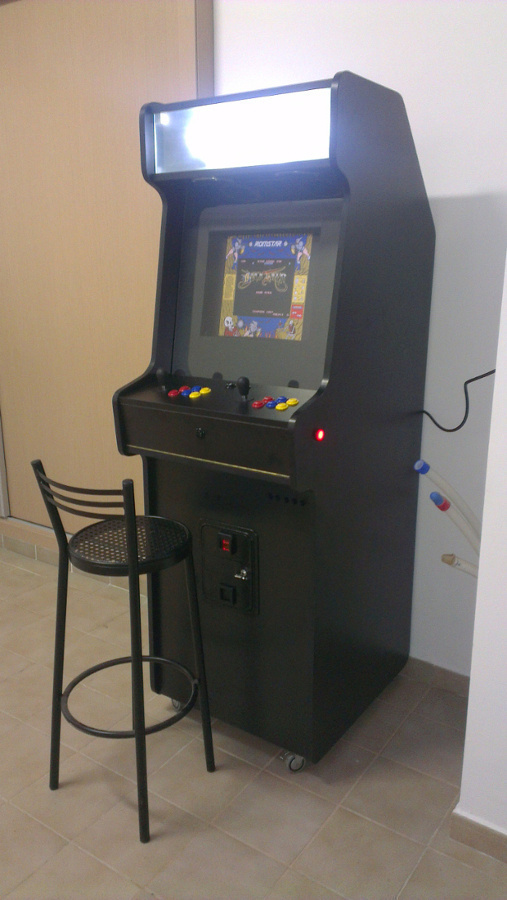

    <p class="caption"><strong>Figura 6.8.2</strong> Mi recreativa</p>
</div>


</div>
        <div class="item chapter">
    <h1 id="2015_09"><span>Capítulo 6.9</span> Construcción de máquina recreativa - Mueble - Construcción del mueble</h1>
    <p>Para la construcción del mueble he utilizado tableros de aglomerado de melamina negra  de 19 mm de grueso.</p>

<p>Los cantos han sido chapados con canto de PVC de color negro.</p>

<p>Los laterales han sido marcados y contados a partir de la plantilla de cartón que he hecho de la máquina original, añadiéndole los 10 cm. de más.</p>

<div class="figure" id="figure-69-1">
    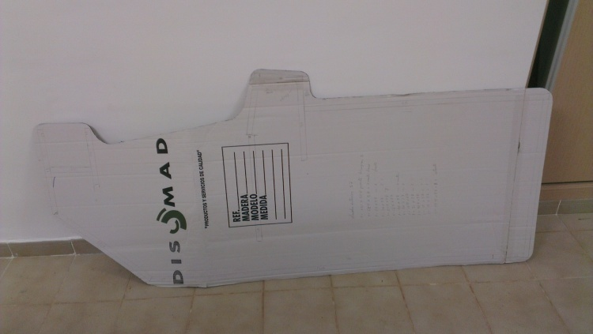

    <p class="caption"><strong>Figura 6.9.1</strong> Plantilla usada para la máquina</p>
</div>


<p>La unión de las piezas se ha realizado utilizando listones cuadrados de 2 cm. x 2 cm., consiguiendo que de esta forma no se vean los tornillos desde fuera.</p>

<p>El montaje se ha realizado encima de una mesa y la máquina colocada en posición horizontal, para su mejor montaje.</p>

<div class="figure" id="figure-69-2">
    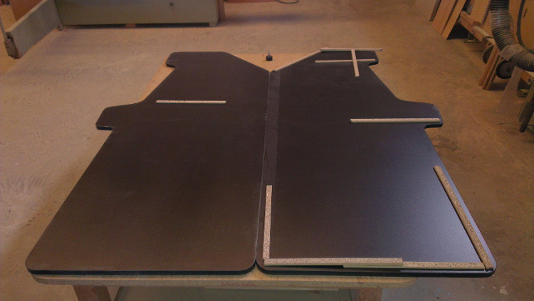

    <p class="caption"><strong>Figura 6.9.2</strong> Laterales</p>
</div>


<div class="figure" id="figure-69-3">
    

    <p class="caption"><strong>Figura 6.9.3</strong> Resto de piezas</p>
</div>


<p>He empezado por la parte de abajo, que es la que más clara tenía.</p>

<div class="figure" id="figure-69-4">
    

    <p class="caption"><strong>Figura 6.9.4</strong> Inicio del montaje</p>
</div>


<div class="figure" id="figure-69-5">
    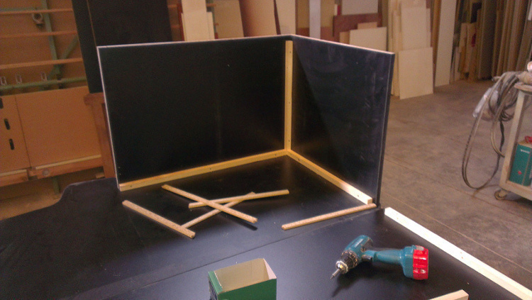

    <p class="caption"><strong>Figura 6.9.5</strong> Montaje</p>
</div>


<p>Después he montado la balda sobre la que se apoyará el monitor y los cristales del bezel.</p>

<div class="figure" id="figure-69-6">
    

    <p class="caption"><strong>Figura 6.9.6</strong> Montaje, parte trasera</p>
</div>


<p>He acabado con la parte de arriba, que es la que menos clara tenía.</p>

<div class="figure" id="figure-69-7">
    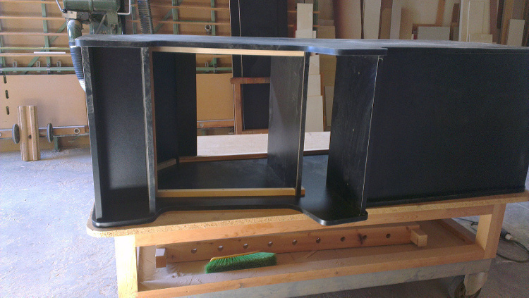

    <p class="caption"><strong>Figura 6.9.7</strong> Montaje, frontal</p>
</div>


<p>Para la puerta he utilizado una bisagra de piano, la cual da robustez a la puerta.</p>

<div class="figure" id="figure-69-8">
    

    <p class="caption"><strong>Figura 6.9.8</strong> Puerta montada</p>
</div>


<div class="figure" id="figure-69-9">
    

    <p class="caption"><strong>Figura 6.9.9</strong> Detalle de la bisagra de la puerta</p>
</div>


<div class="figure" id="figure-69-10">
    

    <p class="caption"><strong>Figura 6.9.10</strong> Puerta cerrada</p>
</div>


<p>Para poder mover la máquina he montado 4 ruedas locas con bloqueo.</p>

<div class="figure" id="figure-69-11">
    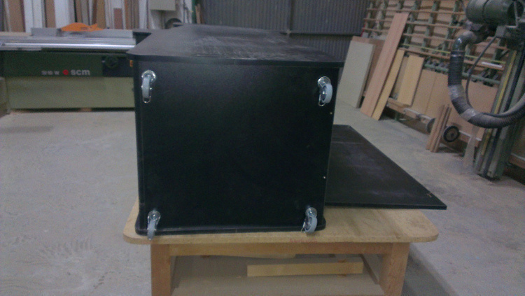

    <p class="caption"><strong>Figura 6.9.11</strong> Ruedas</p>
</div>


<p>Para el panel de control también he utilizado una bisagra de piano.</p>

<div class="figure" id="figure-69-12">
    

    <p class="caption"><strong>Figura 6.9.12</strong> Detalle de la bisagra usada para el panel de control</p>
</div>


</div>
        <div class="item chapter">
    <h1 id="2015_10"><span>Capítulo 6.1</span> Construcción de máquina recreativa - Mueble - Entrada de alimentación y ventilación</h1>
    <p>La ventilación se encuentra en la parte superior trasera y está formada por 2 ventiladores de PC  de 8x8 cm., con sus correspondientes embellecedores, tanto por fuera como por dentro.</p>

<p>Para la entrada de corriente he usado una muy parecida a la original de la máquina.</p>

<div class="figure" id="figure-61-1">
    

    <p class="caption"><strong>Figura 6.1.1</strong> Exterior entrada alimentación y ventilación</p>
</div>


<div class="figure" id="figure-61-2">
    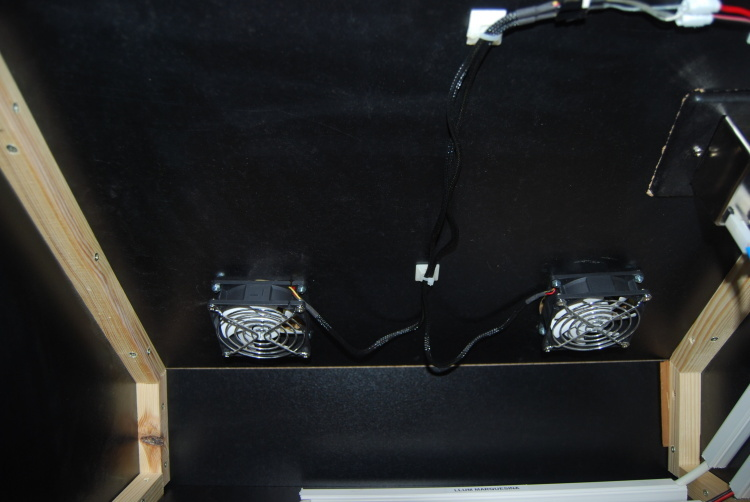

    <p class="caption"><strong>Figura 6.1.2</strong> Interior entrada alimentación y ventilación</p>
</div>


</div>
        <div class="item chapter">
    <h1 id="2015_11"><span>Capítulo 6.11</span> Construcción de máquina recreativa - Mueble - Cableado</h1>
    <p>Para el cableado de la máquina he usado 2 tipos de cable.</p>

<ul>
<li>Manguera de 3 hilos.

<ul>
<li>Entrada de alimentación eléctrica hasta la regleta.</li>
<li>Alimentación luz marquesina.</li>
</ul></li>
<li>Cable de 2 hilos usado para altavoces (rojo y negro).

<ul>
<li>Resto de cableado de la máquina.</li>
</ul></li>
</ul>

<p>Dentro de la máquina he puesto una regleta para poder enchufar allí el ordenador y el monitor.</p>

<p>El resto de componentes de la máquina que requieren alimentación  lo hacen directamente desde la fuente de alimentación del ordenador. Para esto me hice un cable en el que en la punta que va hacia el ordenador es un conector molex y la punta a la que se le conectan los cables es una ficha de empalme con 4 secciones.</p>

<p>Gran parte de los cables han sido puestos dentro de regletas de luz, separando los que van a 220v., del resto.</p>

<div class="figure" id="figure-611-1">
    

    <p class="caption"><strong>Figura 6.11.1</strong> Entrada luz, subida alimentación marquesina, alimentación ventiladores y cables altavoces</p>
</div>


<div class="figure" id="figure-611-2">
    

    <p class="caption"><strong>Figura 6.11.2</strong> Alimentación regleta, subida alimentación marquesina, cables conectados a ordenador</p>
</div>


<div class="figure" id="figure-611-3">
    

    <p class="caption"><strong>Figura 6.11.3</strong> Detalle cable botón encendido monitor</p>
</div>


<div class="figure" id="figure-611-4">
    

    <p class="caption"><strong>Figura 6.11.4</strong> Cables conectados a IPAC, alimentación luces, botones mapeados del ordenador y del monitor</p>
</div>


<div class="figure" id="figure-611-5">
    

    <p class="caption"><strong>Figura 6.11.5</strong> Detalle cables conectados al PC</p>
</div>


</div>
        <div class="item chapter">
    <h1 id="2015_12"><span>Capítulo 6.12</span> Construcción de máquina recreativa - Mueble - Botones de encendido y apagado de la máquina</h1>
    <p>Para encendido y apagado de la máquina (ordenador y monitor) he incluido 5 pequeños botones en una zona no muy visible del frontal de la máquina.
Los 3 primeros botones son los encargados del encendido y apagado, y los 2 restantes son usados para simular la inserción de monedas.</p>

<div class="figure" id="figure-612-1">
    

    <p class="caption"><strong>Figura 6.12.1</strong> Botones de encendido y apagado de la máquina</p>
</div>


<p>La funcionalidad de estos 5 botones es (de izquierda a derecha):
* Encender / Apagar el PC
* Resetear el PC
* Encender / Apagar el monitor
* Insertar monedas monedero 1
* Insertar monedas monedero 2</p>

<p>Para el cableado encargado del PC he usado un cable de los que se usan en las cajas de ordenador para este propósito. A este cable le he quitado los botones que llevaba y le he empalmado un trozo de cable del usado para la máquina para alargarlo hasta el botón del frontal. El lado opuesto del cable lo he conectado a la placa base del PC (desconectando los de la caja actual).</p>

<div class="figure" id="figure-612-2">
    

    <p class="caption"><strong>Figura 6.12.2</strong> Cable usado para conectar al PC los botones de arranque y reset de este</p>
</div>


<p>Para no equivocarme al conectar los cables, además de etiquetar a estos, he etiquetado cada uno de los botones en el interior de la caja.</p>

<div class="figure" id="figure-612-3">
    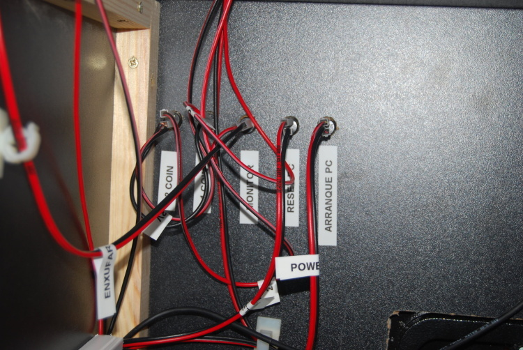

    <p class="caption"><strong>Figura 6.12.3</strong> Interior de la caja con el etiquetado de los botones del PC</p>
</div>


</div>
        <div class="item chapter">
    <h1 id="2015_13"><span>Capítulo 6.13</span> Construcción de máquina recreativa - Mueble - Bezel</h1>
    <p>Para el bezel he usado una chapa de 4 milímetros de grosor forrada en su parte visible con cartulina negra.</p>

<p>El agujero del monitor lo he hecho exactamente en el centro de la chapa y es del tamaño del interior del marco del monitor, de esta forma se evita que se vea.</p>

<p>Se ha dejado una pequeña solapa de cartulina dentro del agujero del monitor para que no se vea el marco de este.</p>

<div class="figure" id="figure-613-1">
    

    <p class="caption"><strong>Figura 6.13.1</strong> Bezel con la parte de abajo forrada</p>
</div>


<div class="figure" id="figure-613-2">
    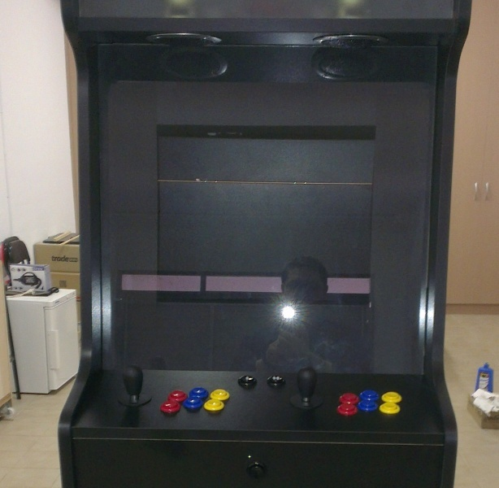

    <p class="caption"><strong>Figura 6.13.2</strong> Bezel acabado y montado</p>
</div>


</div>
        <div class="item chapter">
    <h1 id="2015_14"><span>Capítulo 6.14</span> Construcción de máquina recreativa - El Vídeo</h1>
    <p>Para el vídeo de la máquina he utilizado un monitor viejo de 19 pulgadas de 4:3.</p>

<div class="figure" id="figure-614-1">
    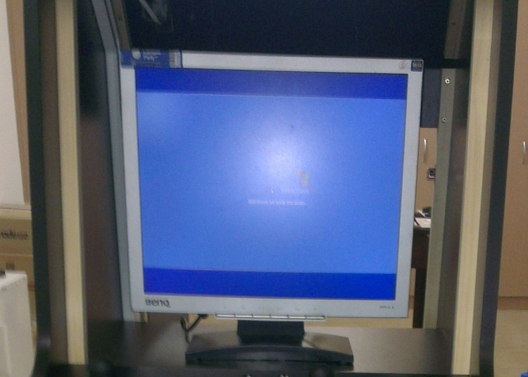

    <p class="caption"><strong>Figura 6.14.1</strong> Monitor</p>
</div>


<p>Este monitor tiene el problema de que cuando se le alimenta no recuerda el estado anterior y siempre está apagado, para que  se encienda se le ha de pulsar siempre el botón.
Para solucionar el problema he tenido que desmontarlo y meterle 2 cables para poder enchufarlo desde el exterior de la máquina.</p>

<p>Los pasos que he seguido para meter los cables han sido:</p>

<p>Lo primero que he hecho ha sido quitarle el marco al monitor y buscar en el panel de botones el botón de encendido</p>

<div class="figure" id="figure-614-2">
    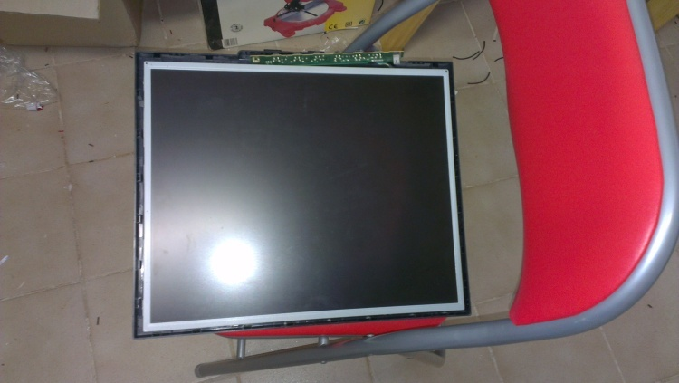

    <p class="caption"><strong>Figura 6.14.2</strong> Monitor sin su marco</p>
</div>


<p>Después de encontrar el botón de encendido le he soldado 2 cables para poder conectar a un botón del frontal de la máquina.</p>

<div class="figure" id="figure-614-3">
    

    <p class="caption"><strong>Figura 6.14.3</strong> Detalle de la botonera con los 2 cables soldados</p>
</div>


<p>Después de soldar los cables he hecho un agujero en la parte posterior del monitor para sacar los cables</p>

<div class="figure" id="figure-614-4">
    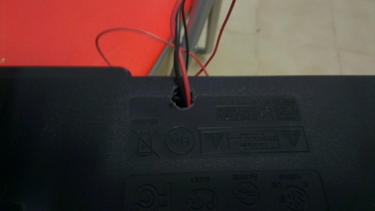

    <p class="caption"><strong>Figura 6.14.4</strong> Detalle del agujero hecho para sacar los cables</p>
</div>


<p>Una vez sacados los cables por el agujero he situado la botonera en su sitio y he cerrado el monitor.</p>

<div class="figure" id="figure-614-5">
    

    <p class="caption"><strong>Figura 6.14.5</strong> Detalle de la botonera en su sitio con los cables ya soldados</p>
</div>


<p>Para que el monitor no se mueva he construido un soporte para este. El monitor y el soporte van unidos por un soporte de monitor vesa.</p>

<p>El soporte está formado por una pieza de madera que tiene la anchura de la máquina y de altura es un poco mayor que la del soporte del monitor vesa. Este ha sido fijado a la máquina con 24 escuadras, 2 a cada lado.</p>

<div class="figure" id="figure-614-6">
    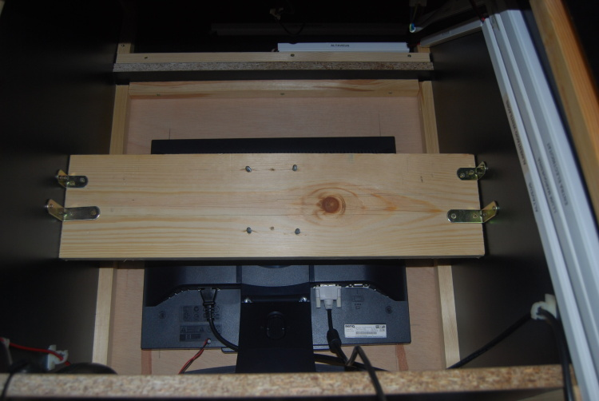

    <p class="caption"><strong>Figura 6.14.6</strong> Soporte monitor</p>
</div>


<div class="figure" id="figure-614-7">
    

    <p class="caption"><strong>Figura 6.14.7</strong> Conexión del monitor al soporte</p>
</div>


</div>
        <div class="item chapter">
    <h1 id="2015_15"><span>Capítulo 6.15</span> Construcción de máquina recreativa - Los Controles</h1>
    <p>Para el panel de control me he basado en el siguiente modelo:</p>

<div class="figure" id="figure-615-1">
    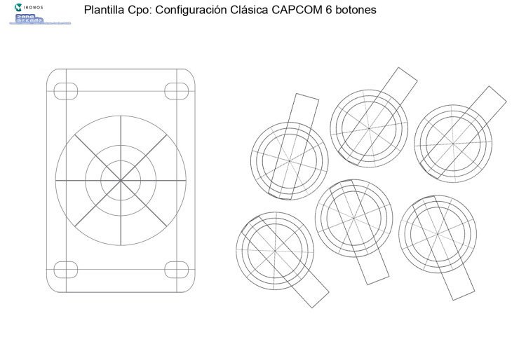

    <p class="caption"><strong>Figura 6.15.1</strong> Plantilla usada para posicionamiento de botones y palanca</p>
</div>


<p>Este modelo lo he obtenido del  foro de ZonaArcade, del siguiente link:
<a href="http://zonaarcade.forumcommunity.net/?t=13788157">http://zonaarcade.forumcommunity.net/?t=13788157</a></p>

<p>Los pasos que he seguido para diseñar y construir el panel de controles han sido los siguientes:</p>

<p>Primero he creado una plantilla de cartón para realizar las pruebas de distribución de botones y palancas.</p>

<div class="figure" id="figure-615-2">
    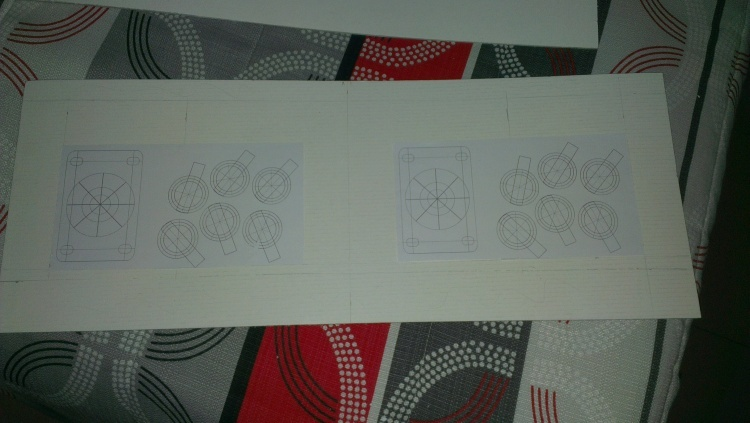

    <p class="caption"><strong>Figura 6.15.2</strong> Plantilla de cartón del planel de control</p>
</div>


<div class="figure" id="figure-615-3">
    

    <p class="caption"><strong>Figura 6.15.3</strong> Plantilla sobre panel de control</p>
</div>


<p>Después de esto he hecho los agujeros del panel de control sobre un trozo de aglomerado de igual tamaño que este, para ver como quedaba y comprobar que estaba todo correcto.</p>

<div class="figure" id="figure-615-4">
    

    <p class="caption"><strong>Figura 6.15.4</strong> Prueba panel de control</p>
</div>


<p>Después de comprobar que estaba todo correcto he hecho los agujeros sobre el panel real.</p>

<div class="figure" id="figure-615-5">
    

    <p class="caption"><strong>Figura 6.15.5</strong> Panel de control - Agujeros realizados</p>
</div>


<p>Después de realizar los agujeros he procedido montar los botones y las palancas.</p>

<div class="figure" id="figure-615-6">
    

    <p class="caption"><strong>Figura 6.15.6</strong> Botones y palancas montados</p>
</div>


<p>Después de montar los botones y palancas he montado el cableado de estos. Al mismo tiempo que estaba cableando los botones los etiqueté.</p>

<div class="figure" id="figure-615-7">
    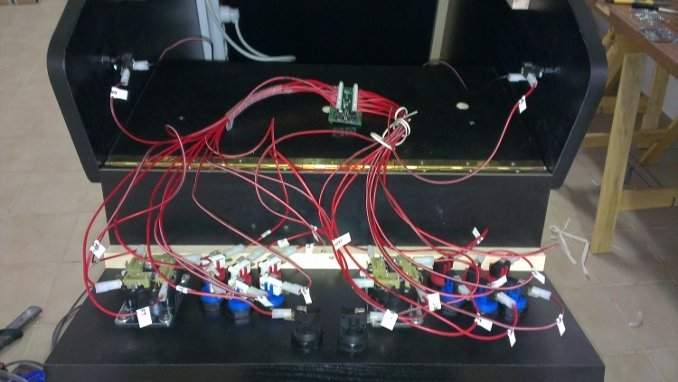

    <p class="caption"><strong>Figura 6.15.7</strong> Detalle del cableado del panel de control</p>
</div>


<p>El panel de control, una vez montado, ha quedado de esta forma:</p>

<div class="figure" id="figure-615-8">
    

    <p class="caption"><strong>Figura 6.15.8</strong> Panel de control acabado</p>
</div>


<p>Además de los botones de los controles le he añadido un botón frontal negro, puede apreciarse en la imagen anterior, para salir de los juegos, además de 2 botones para pinball (uno a cada lado de la máquina) y un monedero.</p>

<div class="figure" id="figure-615-9">
    

    <p class="caption"><strong>Figura 6.15.9</strong> Botonera y monedero</p>
</div>


<div class="figure" id="figure-615-10">
    

    <p class="caption"><strong>Figura 6.15.10</strong> Botón pinball izquierdo</p>
</div>


<div class="figure" id="figure-615-11">
    

    <p class="caption"><strong>Figura 6.15.11</strong> Botón pinball derecho</p>
</div>


</div>
        <div class="item chapter">
    <h1 id="2015_16"><span>Capítulo 6.16</span> Construcción de máquina recreativa - El Sonido</h1>
    <p>Para el sonido de la máquina he utilizado unos altavoces viejos que tenía por casa y que hace tiempo usaba para el ordenador.</p>

<div class="figure" id="figure-616-1">
    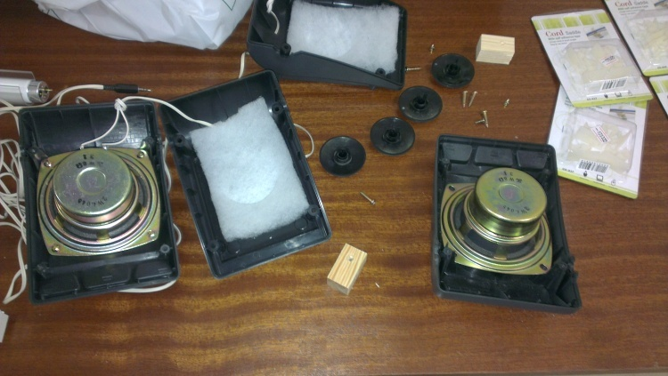

    <p class="caption"><strong>Figura 6.16.1</strong> Altavoces desmontados</p>
</div>


<p>Una vez desmontados los he posicionado sobre la marquesina a ver como los repartía.</p>

<div class="figure" id="figure-616-2">
    

    <p class="caption"><strong>Figura 6.16.2</strong> Altavoz situado sobre marquesina</p>
</div>


<p>Cuando he encontrado la posición en la que quería situarlos he hecho los agujeros pertinentes.</p>

<div class="figure" id="figure-616-3">
    

    <p class="caption"><strong>Figura 6.16.3</strong> Agujeros altavoces realizados</p>
</div>


<p>Después de realizar los agujeros he montado los altavoces y el tubo de luz.</p>

<div class="figure" id="figure-616-4">
    

    <p class="caption"><strong>Figura 6.16.4</strong> Altavoces y el tubo de luz de la marquesina</p>
</div>


<p>Una vez montado todo lo anterior he montado los embellecedores de los altavoces.</p>

<div class="figure" id="figure-616-5">
    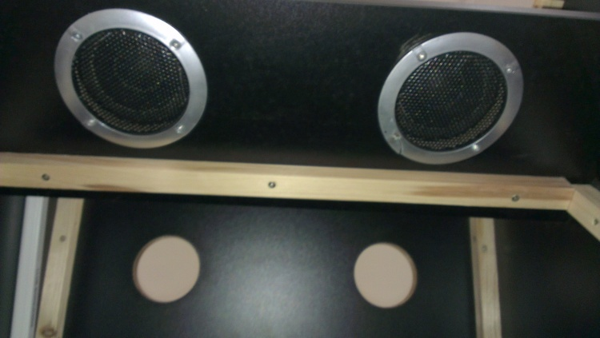

    <p class="caption"><strong>Figura 6.16.5</strong> Embellecedores de los altavoces montados</p>
</div>


</div>
        <div class="item chapter">
    <h1 id="2015_17"><span>Capítulo 6.17</span> Construcción de máquina recreativa - Agradecimientos</h1>
    <p>A mi padre y a mi hermano por ayudarme con la parte de cortado y chapado de los tableros, además de ayudarme en el montaje del  mueble.</p>

<p>A mi amigo Sergio por enseñarme a usar el soldador y echarme una mano con el monitor.</p>

<p>A la gente de los foros de máquinas de arcade de la que he obtenido ideas para poder montar la mía.</p>

<p>Al resto de gente que con sus ánimos y ayudas puntuales me han ayudado a acabar este proyecto.</p>

</div>
        <div class="item chapter">
    <h1 id="2015_18"><span>Capítulo 6.18</span> Sistema de apertura de un escaparate con arduino</h1>
    <h2 id="descripcion">6.18.1 Descripción</h2>

<p>La finalidad del proyecto es crear un sistema selectivo de apertua de escaparates.</p>

<p>Los requerimientos son los siguientes:
- Hay un total de 8 escaparates.
- Se han de poder abrir cada uno de los 8 escaparates de forma independiente.
- Se han de poder abrir todos los escaparates a la vez.
- El tiempo durante el cual los cerrojos deben de estar abiertos es de 1 minuto.
- Hay 3 cerrojos por escaparate.</p>

<div class="figure" id="figure-618-1">
    

    <p class="caption"><strong>Figura 6.18.1</strong> Escaparate</p>
</div>


<h2 id="instrucciones">6.18.2 Instrucciones</h2>

<h3 id="componentes-usados">6.18.2.1 Componentes usados</h3>

<p>Los componentes usados han sido:</p>

<ul>
<li><a href="http://www.kitprinter3d.com/es/electronica/99-fuente-de-alimentacion-conmutada-12v-30a.html">Fuente de alimentación de 12V y 30A</a></li>
<li><a href="http://www.ebay.es/itm/311064700128?_trksid=p2060353.m2749.l2649&amp;ssPageName=STRK%3AMEBIDX%3AIT">Arduino nano v 3.0 5v</a></li>
<li><a href="http://www.aliexpress.com/item/10pcslot-LM2596s-DC-DC-step-down-power-supply-module-3A-adjustable-step-down-module-LM2596-voltage/1289330336.html">Reductor voltaje LM2596s</a></li>
<li><a href="http://www.ereshop.com/shop/relays-c-143_178/i2c-bus-high-current-relay-12v-pcf8574-p-739.html">Bloque relés I2C 12v 10A</a></li>
<li><a href="https://www.ereshop.com/shop/index.php?main_page=product_info&amp;cPath=68_185&amp;products_id=803&amp;zenid=bad04c23e16790298fa3003dd156a414">Teclado 4 x 3</a></li>
<li><a href="http://es.aliexpress.com/item/5pcs-9-15-cm-Printed-Circuit-Board-9X15-cm-Universal-PCB-Board-Double-Sided-Prototype-PCB/32254187154.html?adminSeq=221739572&amp;shopNumber=1403485">Placa PCB 9x15 mm</a></li>
<li><a href="https://www.ereshop.com/shop/index.php?main_page=product_info&amp;cPath=177&amp;products_id=798&amp;zenid=bad04c23e16790298fa3003dd156a414">4-pin 2.00mm connector</a></li>
<li><a href="https://www.ereshop.com/shop/index.php?main_page=product_info&amp;cPath=173&amp;products_id=743&amp;zenid=bad04c23e16790298fa3003dd156a414">4W 2.00mm 4F/4F 6"</a></li>
<li>2 resistencias de 10K</li>
<li><a href="http://es.aliexpress.com/wholesale?catId=0&amp;initiative_id=SB_20151102121134&amp;SearchText=solenoid+door+lock+12v+0.8a">Cerrojo</a></li>
</ul>

<div class="figure" id="figure-618-2">
    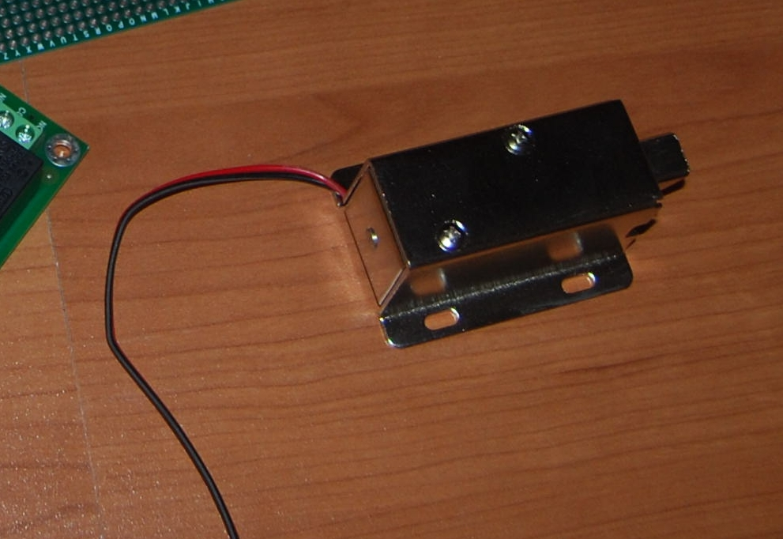

    <p class="caption"><strong>Figura 6.18.2</strong> Cerrojo</p>
</div>


<h3 id="montaje-del-circuito">6.18.2.2 Montaje del circuito</h3>

<p>El esquema en Fritzing es el siguiente:</p>

<div class="figure" id="figure-618-3">
    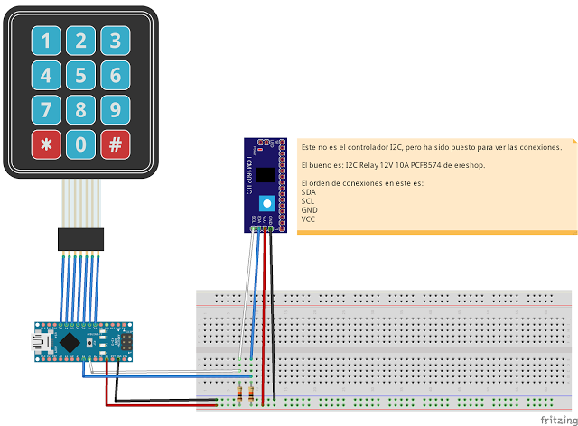

    <p class="caption"><strong>Figura 6.18.3</strong> Esquema usando Fritzing</p>
</div>


<p>Como puede observarse en las siguientes imágenes ha sido montado sobre una placa pcb de 9x15.
La fuente de alimentación se ha elegido de 30A porque cada uno de los cerrojos usa 900 mA y hay 24 de estos.
El móldulo LM2596s ha sido usado para reducir el voltaje de entrada a el arduino de 12V a 6V.</p>

<p>Imágenes del sistema montado dentro del laboratorio:</p>

<div class="figure" id="figure-618-4">
    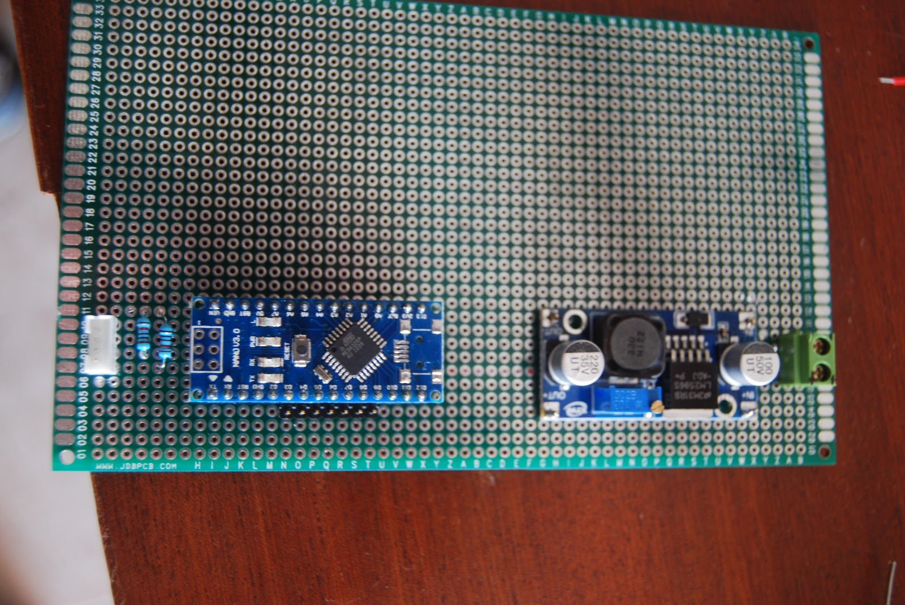

    <p class="caption"><strong>Figura 6.18.4</strong> Detalle superior de la placa montada</p>
</div>


<div class="figure" id="figure-618-5">
    

    <p class="caption"><strong>Figura 6.18.5</strong> Detalle inferior de la placa montada</p>
</div>


<div class="figure" id="figure-618-6">
    

    <p class="caption"><strong>Figura 6.18.6</strong> Teclado y bloque de relés</p>
</div>


<div class="figure" id="figure-618-7">
    

    <p class="caption"><strong>Figura 6.18.7</strong> Conexión del bloque de relés</p>
</div>


<div class="figure" id="figure-618-8">
    

    <p class="caption"><strong>Figura 6.18.8</strong> Sistema completo</p>
</div>


<h3 id="software">6.18.2.3 Software</h3>

<p>Para comprobar la dirección I2C del bloque de relés se ha usado el programa llamado <a href="http://todbot.com/blog/2009/11/29/i2cscanner-pde-arduino-as-i2c-bus-scanner/">Arduino I2c Scanner</a>.</p>

<p>Las librerías usadas han sido:</p>

<ul>
<li><a href="http://whatsbroken.com.au/arduino-i2c-relays/i2c_rl8xxm/">I2C_RL8xxM</a>: librería usada para acceder al bloque de relés.</li>
<li>Wire: librería usada para las conexiones I2C y dependencia de la librería I2C_RL8xxM.</li>
<li><a href="http://www.arduino.cc/playground/uploads/Code/Keypad.zip">keypad</a>: librería usada para la gestión del teclado 4x3.</li>
</ul>

<p>El código del arduino es el siguiente:</p>

<p>``` cpp</p>

<h1 id="include-ltwireh">Capítulo 6.18 include &lt;Wire.h></h1>

<h1 id="include-lti2c-rl8xxmh">Capítulo 6.18 include &lt;I2C_RL8xxM.h></h1>

<h1 id="include-ltkeypadh">Capítulo 6.18 include &lt;Keypad.h></h1>

<p>/**
Filas y columnas del teclado
*/
const byte ROWS = 4;
const byte COLS = 3;</p>

<p>/**
@brief Asignación de pins de las patas
*/
byte rowPins[ROWS] = {9, 8, 7, 6};
byte colPins[COLS] = {5, 4, 3};</p>

<p>/**
@brief Define los simbolos de los botones del teclado
<em>/
char Keys[ROWS][COLS] =
{
  {'1', '2', '3'},
  {'4', '5', '6'},
  {'7', '8', '9'},
  {'</em>', '0', '#'}
};</p>

<p>/**
@brief Inicializa el teclado
*/
Keypad keypad = Keypad(makeKeymap(Keys), rowPins, colPins, ROWS, COLS);</p>

<p>char key;</p>

<p>//Tiempo restante de botones
int botones[8] = { 0, 0, 0, 0, 0, 0, 0, 0};</p>

<p>int estadoBotones[8] = {0, 0, 0, 0, 0, 0, 0, 0}; // 0 es desactivado y 1 es activado.</p>

<p>int segundosEspera = 60;</p>

<p>//Se declara una variable que almacenará el tiempo actual (real) transcurrido
//desde que se enciende la placa.
unsigned long tiempo = 0;</p>

<p>//Se declara una variable que almacenará el último valor de tiempo en el que se
//ejecutó la instrucción (delay).
unsigned long t_actualizado = 0;</p>

<p>//Se declara una variable que almacenará el tiempo que se desea que dure el delay.
unsigned long t_delay = 1000; // Por ser milisegundos, nos esperamos un segundo.</p>

<p>int DirReles = 32;</p>

<p>I2C_RL8xxM rb (DirReles);</p>

<p>int pinLed = 13;</p>

<p>void setup()
{
  Serial.begin(9600); //Para debug
  Serial.println("Inicio");</p>

<p>Wire.begin(); //Inicializa el I2C como master
  keypad.addEventListener(keypadEvent); // Añade un gestor de eventos para el teclado</p>

<p>pinMode(13, OUTPUT);
}</p>

<p>void activaRele(int numRele)
{
  Serial.print("Rele activado: ");
  Serial.println(numRele);</p>

<p>if (estadoBotones[numRele - 1] == 0)
  {
    estadoBotones[numRele - 1] = 1;
    botones[numRele - 1] = segundosEspera + 2;</p>

<pre><code>rb.Switch (numRele, true);
</code></pre>

<p>}
  Serial.println("Rele activado: FIN");
}</p>

<p>void apagaRele(int numRele)
{
  Serial.print("Rele desactivado: ");
  Serial.println(numRele);</p>

<p>if (estadoBotones[numRele - 1] == 1)
  {
    estadoBotones[numRele - 1] = 0;</p>

<pre><code>rb.Switch (numRele, false);
</code></pre>

<p>}
  Serial.println("Rele desactivado: FIN");
}</p>

<p>/**
Gestión de la tecla pulsada
*/
void keypadEvent(KeypadEvent key)
{
  Serial.print("Tecla pulsada: ");
  Serial.println(key);</p>

<p>switch (keypad.getState()) {
    case PRESSED: //pulsado + soltado
      Serial.println("PRESSED");
      digitalWrite(13, HIGH);
      if (key == '0')
      {
        activaRele(1);
        activaRele(2);
        activaRele(3);
        activaRele(4);
        activaRele(5);
        activaRele(6);
        activaRele(7);
        activaRele(8);
      } else if (key == '1')
      {
        activaRele(1);
      } else if (key == '2')
      {
        activaRele(2);
      } else if (key == '3')
      {
        activaRele(3);
      } else if (key == '4')
      {
        activaRele(4);
      } else if (key == '5')
      {
        activaRele(5);
      } else if (key == '6')
      {
        activaRele(6);
      } else if (key == '7')
      {
        activaRele(7);
      } else if (key == '8')
      {
        activaRele(8);
      } else if (key == '9')
      {</p>

<pre><code>  } else if (key == '#')
  {

  } else if (key == '*')
  {
  }
  break;

case RELEASED: //Soltado
  Serial.println("RELEASED");
  digitalWrite(13, LOW);
  break;

case HOLD: //Mantenido el botón pulsado
  Serial.println("HOLD");
  break;
</code></pre>

<p>}
}</p>

<p>void testReles()
{
  for (int i = 0; i &lt; 8; i++)
  {
    if (botones[i] == 1)
    {
      apagaRele(i + 1);
    }
    if (botones[i] > 0)
    {
      botones[i]--;
    }
  }
  //Serial.println("Comprobación estado relés");
}</p>

<p>//Se quita, si no el SoftTimer no funciona. Este lo tiene definido dentro.
void  loop()
{
  key = keypad.getKey();
  /*
    if (key) {
      Serial.print("Tecla pulsada: ");
      Serial.println(key);
    }*/</p>

<p>//Se almacena el tiempo que ha transcurrido desde que se encendió el Arduino.
  tiempo = millis();</p>

<p>//Si ese tiempo es mayor que el intervalo de deseado (equivalente al tiempo
  //de delay) se actualiza el intervalo y se ejecutan las instruciones relacionadas.
  //La idea detrás de este algoritmo consiste en pensar que si han transcurrido
  //20ms y se desea un delay de 30ms cada vez, cuando se superen esos 30ms la
  //variable con la que se compara pasa a ser 60ms. Una vez se alcanzan los 60ms
  //pasa a ser 90ms y así sucesivamente.
  if ( tiempo > t_actualizado + t_delay)
  {
    //Se actualiza el tiempo que ha de transcurrir para el próximo delay.
    t_actualizado = tiempo;</p>

<pre><code>testReles();
</code></pre>

<p>}</p>

<p>}
```</p>

</div>
        <div class="item chapter">
    <h1 id="secciones-adicionales"><span>Capítulo A.0</span> Secciones adicionales</h1>
    <p>En este capítulo voy a introducir todas las páginas/secciones del blog que no sean entradas y que considere interesantes.</p>

<div class="table" id="table-a0-1">

    <table>
<thead>
<tr>
  <th>Nombre sección</th>
  <th>URL en el blog</th>
</tr>
</thead>
<tbody>
<tr>
  <td><a href="#secciones_adicionales_01">Links Interesantes</a></td>
  <td>http://blog.juansal.com/p/links-interesantes.html</td>
</tr>
<tr>
  <td><a href="#secciones_adicionales_02">Plugins de Firefox</a></td>
  <td>http://blog.juansal.com/p/plugins-de-firefox.html</td>
</tr>
<tr>
  <td><a href="#secciones_adicionales_03">Documentos Compartidos</a></td>
  <td>http://blog.juansal.com/p/documentos-compartidos.html</td>
</tr>
<tr>
  <td><a href="#secciones_adicionales_04">Proyectos</a></td>
  <td>http://blog.juansal.com/p/proyectos.html</td>
</tr>
</tbody>
</table>
</div>


</div>
        <div class="item chapter">
    <h1 id="secciones_adicionales_01"><span>Capítulo A.1</span> Links Interesantes</h1>
    <h2 id="links-personales">A.1.1 Links personales</h2>

<h3 id="redes-sociales">A.1.1.1 Redes sociales</h3>

<p><a href="https://plus.google.com/102995878694565141770">Google+</a></p>

<p><a href="https://plus.google.com/u/0/b/101154565688434454302/+CosillasdejuansalBlogspot/posts">Google+ Pagina sobre el blog</a></p>

<p><a href="https://twitter.com/juaalta">Twitter</a></p>

<p><a href="https://www.facebook.com/juansalvador.aleixandretalens">Facebook</a></p>

<p><a href="http://www.linkedin.com/in/juaalta">Linkedin</a></p>

<p><a href="http://pinterest.com/juaalta/">Pinterest</a></p>

<h3 id="publicaciones">A.1.1.2 Publicaciones</h3>

<p><a href="http://juaalta.gitbooks.io/">Gitbook</a></p>

<p><a href="https://leanpub.com/u/juansalvadoraleixandretalens">Leanpub</a></p>

<p><a href="http://www.instructables.com/member/juaalta/">Instructables</a></p>

<p><a href="https://codebender.cc/user/juaalta">codebender</a></p>

<h2 id="webs-y-blogs-en-los-que-colaboro">A.1.2 Webs y blogs en los que colaboro:</h2>

<p><a href="https://sites.google.com/site/expediciongavarnie580/">Expedicion Gavarnie 580</a></p>

<p><a href="http://expediciongavarnie580.blogspot.com.es/">Expedición Gavarnie 580 - Blog</a></p>

<p><a href="http://theraphadj.blogspot.com.es/">The Rapha DJ</a></p>

<h2 id="blogs-que-sigo">A.1.3 Blogs que sigo:</h2>

<p><a href="http://www.josepros.com/">El blog de Josep Ros</a></p>

<p><a href="http://www.josemariagonzalez.es/">El blog de Virtualización en Español</a></p>

</div>
        <div class="item chapter">
    <h1 id="secciones_adicionales_02"><span>Capítulo A.2</span> Plugins de Firefox</h1>
    <h2 id="plugins-desarrollados">A.2.1 Plugins desarrollados</h2>

<p>Los plugins de firefox que he desarrollado hasta ahora han sido con el Add-on Builder de mozilla, cuya URL es: <a href="http://builder.addons.mozilla.org/">Add-on Builder</a>.</p>

<p>Estos son:</p>

<p><strong>Icono blog Cosillas de Juansal</strong></p>

<p><a href="https://addons.mozilla.org/en-US/firefox/addon/icono-blog-cosillas-de-juan/">Web Addons de firefox</a></p>

<h2 id="perfiles-publicos">A.2.2 Perfiles públicos</h2>

<p>Mi perfil público en la web de addons de Mozilla se puede ver en la siguiente URL: <a href="https://addons.mozilla.org/en-US/firefox/user/96159/">Perfil público pagina Addons</a>.</p>

</div>
        <div class="item chapter">
    <h1 id="secciones_adicionales_03"><span>Capítulo A.3</span> Documentos Compartidos</h1>
    <p>En esta página iré añadiendo documentos que yo cree o que considere interesantes.</p>

<h2 id="plantillas-creadas-en-google-drive">A.3.1 Plantillas creadas en Google Drive</h2>

<p><a href="https://drive.google.com/previewtemplate?id=0AtdXTcBP8chbdEhKZWFVWS14XzhLNVhHX0FTTDhMdUE&amp;mode=public">Plantilla de Pedidos pendientes recepcion</a></p>

<p><a href="https://drive.google.com/previewtemplate?id=0AtdXTcBP8chbdFhsWG9DUXYtOWRoMGNmQ2ZrU3NzWHc&amp;mode=public">Plantilla de Nombres en juegos online</a></p>

<p><a href="https://drive.google.com/previewtemplate?id=0AtdXTcBP8chbdFBmWjBGVmwwXzFLZjVJb3FqWkFCVVE&amp;mode=public">Plantilla de Seguimiento de patrocinadores</a></p>

<h2 id="documentos-publicados-en-gitbook">A.3.2 Documentos publicados en Gitbook</h2>

<p><a href="http://juaalta.gitbooks.io/blog-cosillas-de-juansal/">Blog Cosillas de Juansal</a></p>

<p><a href="http://juaalta.gitbooks.io/construccion-de-maquina-recreativa/">La máquina arcade de Juansal</a></p>

<h2 id="documentos-publicados-en-leanpub">A.3.3 Documentos publicados en Leanpub</h2>

<p><a href="https://leanpub.com/blogcosillasdejuansal">Blog Cosillas de Juansal</a></p>

<p><a href="https://leanpub.com/lamquinaarcadedejuansal/">La máquina arcade de Juansal</a></p>

<h2 id="documentos-publicados-en-instructables">A.3.4 Documentos publicados en Instructables</h2>

<p><a href="http://www.instructables.com/id/Sistema-de-apertura-de-un-escaparate-con-arduino/">Sistema de apertura de un escaparate con arduino</a></p>

<h2 id="proyectos-arduino-publicados-en-codebender">A.3.5 Proyectos arduino publicados en codebender</h2>

<p><a href="https://codebender.cc/sketch:178358">Sistema de apertura de un escaparate con arduino</a></p>

</div>
        <div class="item chapter">
    <h1 id="secciones_adicionales_04"><span>Capítulo A.4</span> Proyectos</h1>
    <p>En esta página iré añadiendo todos los proyectos que vaya realizando, de esta forma podrán ser encontrados más facilmente dentro del blog.</p>

<h2 id="arduino">A.4.1 Arduino</h2>

<p><a href="http://blog.juansal.com/2015/11/sistema-de-apertura-de-un-escaparate.html">Sistema de apertura de un escaparate con arduino</a></p>

<h2 id="maquina-recreativa">A.4.2 Máquina recreativa</h2>

<h3 id="documento-separado-por-capitulos">A.4.2.1 Documento separado por capítulos</h3>

<p><a href="http://blog.juansal.com/2015/09/construccion-de-maquina-recreativa.html">Construcción de máquina recreativa - Introducción</a></p>

<p><a href="http://blog.juansal.com/2015/09/construccion-de-maquina-recreativa_13.html">Construcción de máquina recreativa - Mueble - Construcción del mueble</a></p>

<p><a href="http://blog.juansal.com/2015/09/construccion-de-maquina-recreativa_14.html">Construcción de máquina recreativa - Mueble - Entrada de alimentación y ventilación</a></p>

<p><a href="http://blog.juansal.com/2015/09/construccion-de-maquina-recreativa_15.html">Construcción de máquina recreativa - Mueble - Cableado</a></p>

<p><a href="http://blog.juansal.com/2015/09/construccion-de-maquina-recreativa_16.html">Construcción de máquina recreativa - Mueble - Botones de encendido y apagado de la máquina</a></p>

<p><a href="http://blog.juansal.com/2015/09/construccion-de-maquina-recreativa_17.html">Construcción de máquina recreativa - Mueble - Bezel</a></p>

<p><a href="http://blog.juansal.com/2015/09/construccion-de-maquina-recreativa_18.html">Construcción de máquina recreativa - El Vídeo</a></p>

<p><a href="http://blog.juansal.com/2015/09/construccion-de-maquina-recreativa_19.html">Construcción de máquina recreativa - Los Controles</a></p>

<p><a href="http://blog.juansal.com/2015/09/construccion-de-maquina-recreativa_20.html">Construcción de máquina recreativa - El Sonido</a></p>

<p><a href="http://blog.juansal.com/2015/09/construccion-de-maquina-recreativa_21.html">Construcción de máquina recreativa - Agradecimientos</a></p>

<h3 id="documento-descargable">A.4.2.2 Documento descargable</h3>

<p><a href="http://juaalta.gitbooks.io/construccion-de-maquina-recreativa/">La máquina arcade de Juansal en Gitbook</a></p>

<p><a href="https://leanpub.com/lamquinaarcadedejuansal/">La máquina arcade de Juansal en Leanpub</a></p>

<h2 id="sistema-de-backup-con-cubieboard-y-bittorrent-sync">A.4.3 Sistema de backup con cubieboard y Bittorrent Sync</h2>

<p><a href="http://blog.juansal.com/2014/12/pasos-seguidos-para-crear-un-sistema-de.html">Pasos seguidos para crear un sistema de backup online usando el BitTorrent y una Cubietruck (Cubieboard 3)</a></p>

<p><a href="http://blog.juansal.com/2014/12/informacion-sobre-temperatura-y-discos.html">Información sobre temperatura y discos duros en la cubietruck (cubieboard 3)</a></p>

<p><a href="http://blog.juansal.com/2015/07/web-con-informacion-sobre-temperatura-y.html">Web con información sobre temperatura y discos duros en la cubietruck (cubieboard 3) </a></p>

</div>
        <div class="item lof">

<h1>Lista de figuras</h1>

<ul>
                        <li>
                <span>4.9.1</span>
                <a href="#figure-49-1">Caja Abierta</a>
            </li>
                                <li>
                <span>4.9.2</span>
                <a href="#figure-49-2">Pegatina incluida en la caja</a>
            </li>
                                <li>
                <span>4.9.3</span>
                <a href="#figure-49-3">2 Mandos</a>
            </li>
                                <li>
                <span>4.9.4</span>
                <a href="#figure-49-4">Mando con pilas</a>
            </li>
                                <li>
                <span>4.9.5</span>
                <a href="#figure-49-5">Pantalla login</a>
            </li>
                                <li>
                <span>4.9.6</span>
                <a href="#figure-49-6">Petición tarjeta crédito</a>
            </li>
                                <li>
                <span>4.9.7</span>
                <a href="#figure-49-7">Pantalla principal</a>
            </li>
                                <li>
                <span>4.9.8</span>
                <a href="#figure-49-8">Market</a>
            </li>
                                <li>
                <span>4.9.9</span>
                <a href="#figure-49-9">Juego seleccionado del market</a>
            </li>
                                <li>
                <span>4.9.10</span>
                <a href="#figure-49-10">Menus de configuración</a>
            </li>
                                    <li>
                <span>6.4.1</span>
                <a href="#figure-64-1">cover</a>
            </li>
                                    <li>
                <span>6.8.1</span>
                <a href="#figure-68-1">Recreativa original</a>
            </li>
                                <li>
                <span>6.8.2</span>
                <a href="#figure-68-2">Mi recreativa</a>
            </li>
                                    <li>
                <span>6.9.1</span>
                <a href="#figure-69-1">Plantilla usada para la máquina</a>
            </li>
                                <li>
                <span>6.9.2</span>
                <a href="#figure-69-2">Laterales</a>
            </li>
                                <li>
                <span>6.9.3</span>
                <a href="#figure-69-3">Resto de piezas</a>
            </li>
                                <li>
                <span>6.9.4</span>
                <a href="#figure-69-4">Inicio del montaje</a>
            </li>
                                <li>
                <span>6.9.5</span>
                <a href="#figure-69-5">Montaje</a>
            </li>
                                <li>
                <span>6.9.6</span>
                <a href="#figure-69-6">Montaje, parte trasera</a>
            </li>
                                <li>
                <span>6.9.7</span>
                <a href="#figure-69-7">Montaje, frontal</a>
            </li>
                                <li>
                <span>6.9.8</span>
                <a href="#figure-69-8">Puerta montada</a>
            </li>
                                <li>
                <span>6.9.9</span>
                <a href="#figure-69-9">Detalle de la bisagra de la puerta</a>
            </li>
                                <li>
                <span>6.9.10</span>
                <a href="#figure-69-10">Puerta cerrada</a>
            </li>
                                <li>
                <span>6.9.11</span>
                <a href="#figure-69-11">Ruedas</a>
            </li>
                                <li>
                <span>6.9.12</span>
                <a href="#figure-69-12">Detalle de la bisagra usada para el panel de control</a>
            </li>
                                    <li>
                <span>6.1.1</span>
                <a href="#figure-61-1">Exterior entrada alimentación y ventilación</a>
            </li>
                                <li>
                <span>6.1.2</span>
                <a href="#figure-61-2">Interior entrada alimentación y ventilación</a>
            </li>
                                    <li>
                <span>6.11.1</span>
                <a href="#figure-611-1">Entrada luz, subida alimentación marquesina, alimentación ventiladores y cables altavoces</a>
            </li>
                                <li>
                <span>6.11.2</span>
                <a href="#figure-611-2">Alimentación regleta, subida alimentación marquesina, cables conectados a ordenador</a>
            </li>
                                <li>
                <span>6.11.3</span>
                <a href="#figure-611-3">Detalle cable botón encendido monitor</a>
            </li>
                                <li>
                <span>6.11.4</span>
                <a href="#figure-611-4">Cables conectados a IPAC, alimentación luces, botones mapeados del ordenador y del monitor</a>
            </li>
                                <li>
                <span>6.11.5</span>
                <a href="#figure-611-5">Detalle cables conectados al PC</a>
            </li>
                                    <li>
                <span>6.12.1</span>
                <a href="#figure-612-1">Botones de encendido y apagado de la máquina</a>
            </li>
                                <li>
                <span>6.12.2</span>
                <a href="#figure-612-2">Cable usado para conectar al PC los botones de arranque y reset de este</a>
            </li>
                                <li>
                <span>6.12.3</span>
                <a href="#figure-612-3">Interior de la caja con el etiquetado de los botones del PC</a>
            </li>
                                    <li>
                <span>6.13.1</span>
                <a href="#figure-613-1">Bezel con la parte de abajo forrada</a>
            </li>
                                <li>
                <span>6.13.2</span>
                <a href="#figure-613-2">Bezel acabado y montado</a>
            </li>
                                    <li>
                <span>6.14.1</span>
                <a href="#figure-614-1">Monitor</a>
            </li>
                                <li>
                <span>6.14.2</span>
                <a href="#figure-614-2">Monitor sin su marco</a>
            </li>
                                <li>
                <span>6.14.3</span>
                <a href="#figure-614-3">Detalle de la botonera con los 2 cables soldados</a>
            </li>
                                <li>
                <span>6.14.4</span>
                <a href="#figure-614-4">Detalle del agujero hecho para sacar los cables</a>
            </li>
                                <li>
                <span>6.14.5</span>
                <a href="#figure-614-5">Detalle de la botonera en su sitio con los cables ya soldados</a>
            </li>
                                <li>
                <span>6.14.6</span>
                <a href="#figure-614-6">Soporte monitor</a>
            </li>
                                <li>
                <span>6.14.7</span>
                <a href="#figure-614-7">Conexión del monitor al soporte</a>
            </li>
                                    <li>
                <span>6.15.1</span>
                <a href="#figure-615-1">Plantilla usada para posicionamiento de botones y palanca</a>
            </li>
                                <li>
                <span>6.15.2</span>
                <a href="#figure-615-2">Plantilla de cartón del planel de control</a>
            </li>
                                <li>
                <span>6.15.3</span>
                <a href="#figure-615-3">Plantilla sobre panel de control</a>
            </li>
                                <li>
                <span>6.15.4</span>
                <a href="#figure-615-4">Prueba panel de control</a>
            </li>
                                <li>
                <span>6.15.5</span>
                <a href="#figure-615-5">Panel de control - Agujeros realizados</a>
            </li>
                                <li>
                <span>6.15.6</span>
                <a href="#figure-615-6">Botones y palancas montados</a>
            </li>
                                <li>
                <span>6.15.7</span>
                <a href="#figure-615-7">Detalle del cableado del panel de control</a>
            </li>
                                <li>
                <span>6.15.8</span>
                <a href="#figure-615-8">Panel de control acabado</a>
            </li>
                                <li>
                <span>6.15.9</span>
                <a href="#figure-615-9">Botonera y monedero</a>
            </li>
                                <li>
                <span>6.15.10</span>
                <a href="#figure-615-10">Botón pinball izquierdo</a>
            </li>
                                <li>
                <span>6.15.11</span>
                <a href="#figure-615-11">Botón pinball derecho</a>
            </li>
                                    <li>
                <span>6.16.1</span>
                <a href="#figure-616-1">Altavoces desmontados</a>
            </li>
                                <li>
                <span>6.16.2</span>
                <a href="#figure-616-2">Altavoz situado sobre marquesina</a>
            </li>
                                <li>
                <span>6.16.3</span>
                <a href="#figure-616-3">Agujeros altavoces realizados</a>
            </li>
                                <li>
                <span>6.16.4</span>
                <a href="#figure-616-4">Altavoces y el tubo de luz de la marquesina</a>
            </li>
                                <li>
                <span>6.16.5</span>
                <a href="#figure-616-5">Embellecedores de los altavoces montados</a>
            </li>
                                    <li>
                <span>6.18.1</span>
                <a href="#figure-618-1">Escaparate</a>
            </li>
                                <li>
                <span>6.18.2</span>
                <a href="#figure-618-2">Cerrojo</a>
            </li>
                                <li>
                <span>6.18.3</span>
                <a href="#figure-618-3">Esquema usando Fritzing</a>
            </li>
                                <li>
                <span>6.18.4</span>
                <a href="#figure-618-4">Detalle superior de la placa montada</a>
            </li>
                                <li>
                <span>6.18.5</span>
                <a href="#figure-618-5">Detalle inferior de la placa montada</a>
            </li>
                                <li>
                <span>6.18.6</span>
                <a href="#figure-618-6">Teclado y bloque de relés</a>
            </li>
                                <li>
                <span>6.18.7</span>
                <a href="#figure-618-7">Conexión del bloque de relés</a>
            </li>
                                <li>
                <span>6.18.8</span>
                <a href="#figure-618-8">Sistema completo</a>
            </li>
            </ul>

</div>
    </div>
    <div class="span3">
    <div class="item toc">

<h1>Índice de contenidos</h1>

<ul class="unstyled">
            <li class="chapter level-1">
            <span>Capítulo 1</span> <a href="#blog-cosillas-de-juansal">Blog Cosillas de Juansal</a>
        </li>
                <li class="chapter level-1">
            <span>Capítulo 2</span> <a href="#2010">2010</a>
        </li>
                <li class="chapter level-1">
            <span>Capítulo 2.1</span> <a href="#2010_01">Presentación</a>
        </li>
                <li class="chapter level-1">
            <span>Capítulo 2.2</span> <a href="#2010_02">Migración de RX Components a JVCL I</a>
        </li>
                <li class="chapter level-1">
            <span>Capítulo 2.3</span> <a href="#2010_03">Migración de RX Components a JVCL 0</a>
        </li>
                <li class="chapter level-1">
            <span>Capítulo 2.4</span> <a href="#2010_04">Activar la cuenta root en Ubuntu</a>
        </li>
                <li class="chapter level-1">
            <span>Capítulo 2.5</span> <a href="#2010_05">Reseteo del ID y de la MAC de una máquina virtual en VMware</a>
        </li>
                <li class="chapter level-1">
            <span>Capítulo 2.6</span> <a href="#2010_06">Hacer que el VMware utilice la memoria física y no un fichero en una máquina virtual</a>
        </li>
                <li class="chapter level-1">
            <span>Capítulo 2.7</span> <a href="#2010_07">Crear un mirror de un repositorio de subversion</a>
        </li>
                <li class="chapter level-1">
            <span>Capítulo 2.8</span> <a href="#2010_08">Lectura de ficheros INI sin secciones con Inno Setup desde código</a>
        </li>
                <li class="chapter level-1">
            <span>Capítulo 2.9</span> <a href="#2010_09">Lectura de ficheros INI sin secciones con Inno Setup desde código (continuación)</a>
        </li>
                <li class="chapter level-1">
            <span>Capítulo 2.1</span> <a href="#2010_10">Desactivación de Unity de las máquinas virtuales de VMware Workstation</a>
        </li>
                <li class="chapter level-1">
            <span>Capítulo 3</span> <a href="#2011">2011</a>
        </li>
                <li class="chapter level-1">
            <span>Capítulo 3.1</span> <a href="#2011_01">Plugin de Firefox</a>
        </li>
                <li class="chapter level-1">
            <span>Capítulo 3.2</span> <a href="#2011_02">Cambiar el propietario y el grupo al que pertenece un fichero o una carpeta en linux</a>
        </li>
            <li class="chapter level-2">
            <span>3.2.1</span> <a href="#propietario">Propietario</a>
        </li>
            <li class="chapter level-2">
            <span>3.2.2</span> <a href="#grupo">Grupo</a>
        </li>
            <li class="chapter level-2">
            <span>3.2.3</span> <a href="#propietario-y-grupo">Propietario y grupo</a>
        </li>
                <li class="chapter level-1">
            <span>Capítulo 3.3</span> <a href="#2011_03">Obtener información de la máquina y del Windows instalado en ella desde línea de comandos</a>
        </li>
                <li class="chapter level-1">
            <span>Capítulo 4</span> <a href="#2012">2012</a>
        </li>
                <li class="chapter level-1">
            <span>Capítulo 4.1</span> <a href="#2012_01">Conversión de disco virtual de VirtualBox a VMware</a>
        </li>
                <li class="chapter level-1">
            <span>Capítulo 4.2</span> <a href="#2012_02">Forzar a un máquina Virtual de VMware a usar un adaptador de red específico</a>
        </li>
            <li class="chapter level-2">
            <span>4.2.1</span> <a href="#modificar-el-fichero-vmx-a-mano">Modificar el fichero vmx a mano:</a>
        </li>
            <li class="chapter level-2">
            <span>4.2.2</span> <a href="#utilizar-el-virtual-network-editor-lo-que-se-indica-en-este-punto-solo-funciona-hasta-la-version-5-del-vmware-player">Utilizar el Virtual Network Editor: (Lo que se indica en este punto sólo funciona hasta la versión 5 del VMware Player)</a>
        </li>
                <li class="chapter level-1">
            <span>Capítulo 4.3</span> <a href="#2013">2013</a>
        </li>
                <li class="chapter level-1">
            <span>Capítulo 4.4</span> <a href="#2013_01">Log4net con <strong>C#</strong></a>
        </li>
                <li class="chapter level-1">
            <span>Capítulo 4.5</span> <a href="#2013_02">Log4net con VB.NET</a>
        </li>
                <li class="chapter level-1">
            <span>Capítulo 4.6</span> <a href="#2013_03">Log4Java en Java</a>
        </li>
                <li class="chapter level-1">
            <span>Capítulo 4.7</span> <a href="#2013_04">Como obtener el ID autogenerado al realizar un insert en una base de datos</a>
        </li>
            <li class="chapter level-2">
            <span>4.7.1</span> <a href="#sqlserver">SQLServer</a>
        </li>
            <li class="chapter level-2">
            <span>4.7.2</span> <a href="#mysql">MySql</a>
        </li>
            <li class="chapter level-2">
            <span>4.7.3</span> <a href="#sqlite">SQlite</a>
        </li>
                <li class="chapter level-1">
            <span>Capítulo 4.8</span> <a href="#2013_05">Mozilla Add-on builder: Posibilidades a la hora de abrir un link desde una entrada de menú</a>
        </li>
                <li class="chapter level-1">
            <span>Capítulo 4.9</span> <a href="#2013_06">Mis primeras impresiones con Ouya</a>
        </li>
                <li class="chapter level-1">
            <span>Capítulo 5</span> <a href="#2014">2014</a>
        </li>
                <li class="chapter level-1">
            <span>Capítulo 5.1</span> <a href="#2014_01">Líneas mínimas a añadir al código del Industruino para usar las librerías m2tklib</a>
        </li>
            <li class="chapter level-1">
            <span>Capítulo 5.1</span> <a href="#include-ltu8glibh">include &lt;U8glib.h></a>
        </li>
            <li class="chapter level-1">
            <span>Capítulo 5.1</span> <a href="#include-ltm2tkh">include &lt;M2tk.h></a>
        </li>
            <li class="chapter level-1">
            <span>Capítulo 5.1</span> <a href="#include-ltutility-m2ghu8gh">include &lt;utility/m2ghu8g.h></a>
        </li>
                <li class="chapter level-1">
            <span>Capítulo 5.2</span> <a href="#2014_02">Pasos seguidos para crear un sistema de backup online usando el BitTorrent y una Cubietruck (Cubieboard 3)</a>
        </li>
            <li class="chapter level-2">
            <span>5.2.1</span> <a href="#consideraciones-iniciales-sobre-el-documento">Consideraciones iniciales sobre el documento</a>
        </li>
            <li class="chapter level-2">
            <span>5.2.2</span> <a href="#instalacion-del-sistema-operativo-en-tarjeta-sd">Instalación del sistema operativo en tarjeta SD</a>
        </li>
            <li class="chapter level-1">
            <span>Capítulo 5.2</span> <a href="#instalacion-y-configuracion-del-bitorrent-sync">Instalación y configuración del Bitorrent Sync</a>
        </li>
            <li class="chapter level-2">
            <span>5.2.1</span> <a href="#consideraciones-iniciales-2">Consideraciones iniciales</a>
        </li>
            <li class="chapter level-2">
            <span>5.2.2</span> <a href="#proceso-de-instalacion">Proceso de instalación</a>
        </li>
            <li class="chapter level-1">
            <span>Capítulo 5.2</span> <a href="#bin-sh">! /bin/sh</a>
        </li>
            <li class="chapter level-1">
            <span>Capítulo 5.2</span> <a href="#provides-btsync">Provides: btsync</a>
        </li>
            <li class="chapter level-1">
            <span>Capítulo 5.2</span> <a href="#required-start-syslog-remote-fs">Required-Start: \$syslog \$remote_fs</a>
        </li>
            <li class="chapter level-1">
            <span>Capítulo 5.2</span> <a href="#required-stop-syslog-remote-fs">Required-Stop: \$syslog \$remote_fs</a>
        </li>
            <li class="chapter level-1">
            <span>Capítulo 5.2</span> <a href="#should-start-local-fs">Should-Start: \$local_fs</a>
        </li>
            <li class="chapter level-1">
            <span>Capítulo 5.2</span> <a href="#should-stop-local-fs">Should-Stop: \$local_fs</a>
        </li>
            <li class="chapter level-1">
            <span>Capítulo 5.2</span> <a href="#default-start-2-3-4-5">Default-Start: 2 3 4 5</a>
        </li>
            <li class="chapter level-1">
            <span>Capítulo 5.2</span> <a href="#default-stop-0-1-6">Default-Stop: 0 1 6</a>
        </li>
            <li class="chapter level-1">
            <span>Capítulo 5.2</span> <a href="#short-description-btsync-bittorent-syncapp">Short-Description: btsync - Bittorent SyncApp</a>
        </li>
            <li class="chapter level-1">
            <span>Capítulo 5.2</span> <a href="#description-btsync-bittorent-syncapp">Description: btsync - Bittorent SyncApp</a>
        </li>
            <li class="chapter level-1">
            <span>Capítulo 5.2</span> <a href="#the-full-path-to-the-filename-where-you-store-your-rtorrent-configuration">the full path to the filename where you store your rtorrent configuration</a>
        </li>
            <li class="chapter level-1">
            <span>Capítulo 5.2</span> <a href="#set-of-options-to-run-with">set of options to run with</a>
        </li>
            <li class="chapter level-2">
            <span>5.2.1</span> <a href="#actualizacion-del-bittorrent-sync">Actualización del Bittorrent Sync</a>
        </li>
            <li class="chapter level-1">
            <span>Capítulo 5.2</span> <a href="#bin-bash">!/bin/bash</a>
        </li>
            <li class="chapter level-2">
            <span>5.2.1</span> <a href="#informacion-obtenida-de">Información obtenida de:</a>
        </li>
                <li class="chapter level-1">
            <span>Capítulo 5.3</span> <a href="#2014_03">Información sobre temperatura y discos duros en la cubietruck (cubieboard 3)</a>
        </li>
            <li class="chapter level-2">
            <span>5.3.1</span> <a href="#obtencion-de-la-temperatura-de-la-cubietruck">Obtención de la temperatura de la cubietruck:</a>
        </li>
            <li class="chapter level-1">
            <span>Capítulo 5.3</span> <a href="#bin-bash-2">!/bin/bash</a>
        </li>
            <li class="chapter level-2">
            <span>5.3.1</span> <a href="#informacion-de-los-discos">Información de los discos:</a>
        </li>
            <li class="chapter level-2">
            <span>5.3.2</span> <a href="#informacion-obtenida-de-2">Información obtenida de:</a>
        </li>
                <li class="chapter level-1">
            <span>Capítulo 6</span> <a href="#2015">2015</a>
        </li>
                <li class="chapter level-1">
            <span>Capítulo 6.1</span> <a href="#2015_01">Markdown</a>
        </li>
            <li class="chapter level-2">
            <span>6.1.1</span> <a href="#que-es-markdown">Qué es Markdown</a>
        </li>
            <li class="chapter level-2">
            <span>6.1.2</span> <a href="#por-que-uso-markdown">¿Por que uso Markdown?</a>
        </li>
            <li class="chapter level-2">
            <span>6.1.3</span> <a href="#aplicaciones-que-utilizo">Aplicaciones que utilizo</a>
        </li>
            <li class="chapter level-2">
            <span>6.1.4</span> <a href="#links-interesantes-sobre-markdwon">Links interesantes sobre Markdwon</a>
        </li>
                <li class="chapter level-1">
            <span>Capítulo 6.2</span> <a href="#2015_02">Máquina virtual para trabajar con documentos en Markdown</a>
        </li>
            <li class="chapter level-2">
            <span>6.2.1</span> <a href="#informacion-sobre-el-sistema-operativo">Información sobre el sistema operativo.</a>
        </li>
            <li class="chapter level-2">
            <span>6.2.2</span> <a href="#instalacion-de-utilidades-que-yo-considero-necesarias">Instalación de utilidades que yo considero necesarias.</a>
        </li>
            <li class="chapter level-2">
            <span>6.2.3</span> <a href="#instalacion-de-editores-de-markdown">Instalación de editores de Markdown</a>
        </li>
                <li class="chapter level-1">
            <span>Capítulo 6.3</span> <a href="#2015_03">Añadir a un usuario los permisos de <code>sudo</code> en Fedora</a>
        </li>
            <li class="chapter level-2">
            <span>6.3.1</span> <a href="#anadiendo-al-usuario-los-permisos-directamente">Añadiendo al usuario los permisos directamente</a>
        </li>
            <li class="chapter level-2">
            <span>6.3.2</span> <a href="#anadir-al-usuario-al-grupo-wheel">Añadir al usuario al grupo wheel</a>
        </li>
                <li class="chapter level-1">
            <span>Capítulo 6.4</span> <a href="#cd-node-modules-locally-npm-install">cd ./node_modules/locally/;npm install</a>
        </li>
            <li class="chapter level-1">
            <span>Capítulo 6.4</span> <a href="#configurate-haroopress">= configurate haroopress</a>
        </li>
            <li class="chapter level-2">
            <span>6.4.1</span> <a href="#http-juaaltagithubio-meta-information">http://juaalta.github.io Meta Information</a>
        </li>
            <li class="chapter level-1">
            <span>Capítulo 6.4</span> <a href="#haroo-save-y-n-y">haroo> Save? [y/n] :           y</a>
        </li>
            <li class="chapter level-1">
            <span>Capítulo 6.4</span> <a href="#clear-public-amp-deployment-directories">= clear public &amp; deployment directories</a>
        </li>
            <li class="chapter level-1">
            <span>Capítulo 6.4</span> <a href="#haroo-clear-to-public-directory">haroo> clear to public directory</a>
        </li>
            <li class="chapter level-1">
            <span>Capítulo 6.4</span> <a href="#setup-repository-for-deployment">= setup repository for deployment</a>
        </li>
            <li class="chapter level-1">
            <span>Capítulo 6.4</span> <a href="#haroo-git-remote-add-origin">haroo> git remote add origin ¶</a>
        </li>
            <li class="chapter level-1">
            <span>Capítulo 6.4</span> <a href="#create-default-data-set">= create default data set</a>
        </li>
            <li class="chapter level-1">
            <span>Capítulo 6.4</span> <a href="#">```</a>
        </li>
            <li class="chapter level-1">
            <span>Capítulo 6.4</span> <a href="#clear-public-amp-deployment-directories-2">= clear public &amp; deployment directories</a>
        </li>
            <li class="chapter level-1">
            <span>Capítulo 6.4</span> <a href="#haroo-clear-to-public-directory-2">haroo> clear to public directory</a>
        </li>
            <li class="chapter level-1">
            <span>Capítulo 6.4</span> <a href="#setup-repository-for-deployment-2">= setup repository for deployment</a>
        </li>
            <li class="chapter level-1">
            <span>Capítulo 6.4</span> <a href="#-2">```</a>
        </li>
            <li class="chapter level-1">
            <span>Capítulo 6.4</span> <a href="#clear-public-amp-deployment-directories-3">= clear public &amp; deployment directories</a>
        </li>
            <li class="chapter level-1">
            <span>Capítulo 6.4</span> <a href="#haroo-clear-to-public-directory-3">haroo> clear to public directory</a>
        </li>
            <li class="chapter level-1">
            <span>Capítulo 6.4</span> <a href="#generate-to-static-page">= generate to static page</a>
        </li>
            <li class="chapter level-1">
            <span>Capítulo 6.4</span> <a href="#haroo-export-pageshtml">haroo> export pages.html ¶</a>
        </li>
            <li class="chapter level-1">
            <span>Capítulo 6.4</span> <a href="#content-statistics">==       content statistics        ==</a>
        </li>
            <li class="chapter level-1">
            <span>Capítulo 6.4</span> <a href="#slide-publish1-draft0">== slide   | publish(1) | draft(0) ==</a>
        </li>
            <li class="chapter level-1">
            <span>Capítulo 6.4</span> <a href="#-3">```</a>
        </li>
            <li class="chapter level-1">
            <span>Capítulo 6.4</span> <a href="#clear-public-amp-deployment-directories-4">= clear public &amp; deployment directories</a>
        </li>
            <li class="chapter level-1">
            <span>Capítulo 6.4</span> <a href="#haroo-clear-to-public-directory-4">haroo> clear to public directory</a>
        </li>
            <li class="chapter level-1">
            <span>Capítulo 6.4</span> <a href="#generate-to-static-page-2">= generate to static page</a>
        </li>
            <li class="chapter level-1">
            <span>Capítulo 6.4</span> <a href="#haroo-export-pageshtml-2">haroo> export pages.html ¶</a>
        </li>
            <li class="chapter level-1">
            <span>Capítulo 6.4</span> <a href="#content-statistics-2">==       content statistics        ==</a>
        </li>
            <li class="chapter level-1">
            <span>Capítulo 6.4</span> <a href="#slide-publish1-draft0-2">== slide   | publish(1) | draft(0) ==</a>
        </li>
            <li class="chapter level-1">
            <span>Capítulo 6.4</span> <a href="#cp-r-lib-bootstrap-public">cp -R ./lib/bootstrap/* ./_public</a>
        </li>
            <li class="chapter level-1">
            <span>Capítulo 6.4</span> <a href="#preview-static-page">= preview static page</a>
        </li>
            <li class="chapter level-1">
            <span>Capítulo 6.4</span> <a href="#lear-public-amp-deployment-directories">lear public &amp; deployment directories</a>
        </li>
            <li class="chapter level-1">
            <span>Capítulo 6.4</span> <a href="#haroo-clear-to-public-directory-5">haroo> clear to public directory</a>
        </li>
            <li class="chapter level-1">
            <span>Capítulo 6.4</span> <a href="#generate-to-static-page-3">= generate to static page</a>
        </li>
            <li class="chapter level-1">
            <span>Capítulo 6.4</span> <a href="#haroo-export-pageshtml-3">haroo> export pages.html ¶</a>
        </li>
            <li class="chapter level-1">
            <span>Capítulo 6.4</span> <a href="#content-statistics-3">==       content statistics        ==</a>
        </li>
            <li class="chapter level-1">
            <span>Capítulo 6.4</span> <a href="#slide-publish1-draft0-3">== slide   | publish(1) | draft(0) ==</a>
        </li>
            <li class="chapter level-1">
            <span>Capítulo 6.4</span> <a href="#cp-r-lib-bootstrap-public-2">cp -R ./lib/bootstrap/* ./_public</a>
        </li>
            <li class="chapter level-1">
            <span>Capítulo 6.4</span> <a href="#deploy-to-github">= deploy to github</a>
        </li>
            <li class="chapter level-1">
            <span>Capítulo 6.4</span> <a href="#2015_04">Instalación y primeros pasos con Haroopress</a>
        </li>
            <li class="chapter level-2">
            <span>6.4.1</span> <a href="#instalacion-requisitos-previos">Instalación requisitos previos:</a>
        </li>
            <li class="chapter level-2">
            <span>6.4.2</span> <a href="#instalacion">Instalación</a>
        </li>
            <li class="chapter level-2">
            <span>6.4.3</span> <a href="#uso-de-haroopress">Uso de haroopress</a>
        </li>
            <li class="chapter level-1">
            <span>Capítulo 6.4</span> <a href="#first-slide">First Slide</a>
        </li>
            <li class="chapter level-1">
            <span>Capítulo 6.4</span> <a href="#second-slide-title">Second Slide Title</a>
        </li>
            <li class="chapter level-1">
            <span>Capítulo 6.4</span> <a href="#third-slide-title">Third Slide Title</a>
        </li>
            <li class="chapter level-1">
            <span>Capítulo 6.4</span> <a href="#forth-slide-title">Forth Slide Title</a>
        </li>
                <li class="chapter level-1">
            <span>Capítulo 6.5</span> <a href="#2015_05">Formato de datos de Haroopress</a>
        </li>
            <li class="chapter level-2">
            <span>6.5.1</span> <a href="#estructura-basica-de-los-ficheros-de-autores-y-contenido">Estructura básica de los ficheros de autores y contenido</a>
        </li>
            <li class="chapter level-2">
            <span>6.5.2</span> <a href="#organizacion-de-directorios-y-ficheros">Organización de directorios y ficheros</a>
        </li>
                <li class="chapter level-1">
            <span>Capítulo 6.6</span> <a href="#2015_06">Web con información sobre temperatura y discos duros en la cubietruck - cubieboard 3</a>
        </li>
            <li class="chapter level-2">
            <span>6.6.1</span> <a href="#finalidad-del-articulo">Finalidad del artículo</a>
        </li>
            <li class="chapter level-2">
            <span>6.6.2</span> <a href="#software-instalado">Software instalado</a>
        </li>
            <li class="chapter level-2">
            <span>6.6.3</span> <a href="#creacion-de-la-web">Creación de la web:</a>
        </li>
                <li class="chapter level-1">
            <span>Capítulo 6.7</span> <a href="#2015_07">Organizar fotos por fecha usando Zoner Photo Studio</a>
        </li>
            <li class="chapter level-2">
            <span>6.7.1</span> <a href="#programa-en-ingles">Programa en Inglés</a>
        </li>
            <li class="chapter level-2">
            <span>6.7.2</span> <a href="#programa-en-castellano">Programa en castellano</a>
        </li>
                <li class="chapter level-1">
            <span>Capítulo 6.8</span> <a href="#2015_08">Construcción de máquina recreativa - Introducción</a>
        </li>
                <li class="chapter level-1">
            <span>Capítulo 6.9</span> <a href="#2015_09">Construcción de máquina recreativa - Mueble - Construcción del mueble</a>
        </li>
                <li class="chapter level-1">
            <span>Capítulo 6.1</span> <a href="#2015_10">Construcción de máquina recreativa - Mueble - Entrada de alimentación y ventilación</a>
        </li>
                <li class="chapter level-1">
            <span>Capítulo 6.11</span> <a href="#2015_11">Construcción de máquina recreativa - Mueble - Cableado</a>
        </li>
                <li class="chapter level-1">
            <span>Capítulo 6.12</span> <a href="#2015_12">Construcción de máquina recreativa - Mueble - Botones de encendido y apagado de la máquina</a>
        </li>
                <li class="chapter level-1">
            <span>Capítulo 6.13</span> <a href="#2015_13">Construcción de máquina recreativa - Mueble - Bezel</a>
        </li>
                <li class="chapter level-1">
            <span>Capítulo 6.14</span> <a href="#2015_14">Construcción de máquina recreativa - El Vídeo</a>
        </li>
                <li class="chapter level-1">
            <span>Capítulo 6.15</span> <a href="#2015_15">Construcción de máquina recreativa - Los Controles</a>
        </li>
                <li class="chapter level-1">
            <span>Capítulo 6.16</span> <a href="#2015_16">Construcción de máquina recreativa - El Sonido</a>
        </li>
                <li class="chapter level-1">
            <span>Capítulo 6.17</span> <a href="#2015_17">Construcción de máquina recreativa - Agradecimientos</a>
        </li>
                <li class="chapter level-1">
            <span>Capítulo 6.18</span> <a href="#2015_18">Sistema de apertura de un escaparate con arduino</a>
        </li>
            <li class="chapter level-2">
            <span>6.18.1</span> <a href="#descripcion">Descripción</a>
        </li>
            <li class="chapter level-2">
            <span>6.18.2</span> <a href="#instrucciones">Instrucciones</a>
        </li>
            <li class="chapter level-1">
            <span>Capítulo 6.18</span> <a href="#include-ltwireh">include &lt;Wire.h></a>
        </li>
            <li class="chapter level-1">
            <span>Capítulo 6.18</span> <a href="#include-lti2c-rl8xxmh">include &lt;I2C_RL8xxM.h></a>
        </li>
            <li class="chapter level-1">
            <span>Capítulo 6.18</span> <a href="#include-ltkeypadh">include &lt;Keypad.h></a>
        </li>
                <li class="chapter level-1">
            <span>Capítulo A.0</span> <a href="#secciones-adicionales">Secciones adicionales</a>
        </li>
                <li class="chapter level-1">
            <span>Capítulo A.1</span> <a href="#secciones_adicionales_01">Links Interesantes</a>
        </li>
            <li class="chapter level-2">
            <span>A.1.1</span> <a href="#links-personales">Links personales</a>
        </li>
            <li class="chapter level-2">
            <span>A.1.2</span> <a href="#webs-y-blogs-en-los-que-colaboro">Webs y blogs en los que colaboro:</a>
        </li>
            <li class="chapter level-2">
            <span>A.1.3</span> <a href="#blogs-que-sigo">Blogs que sigo:</a>
        </li>
                <li class="chapter level-1">
            <span>Capítulo A.2</span> <a href="#secciones_adicionales_02">Plugins de Firefox</a>
        </li>
            <li class="chapter level-2">
            <span>A.2.1</span> <a href="#plugins-desarrollados">Plugins desarrollados</a>
        </li>
            <li class="chapter level-2">
            <span>A.2.2</span> <a href="#perfiles-publicos">Perfiles públicos</a>
        </li>
                <li class="chapter level-1">
            <span>Capítulo A.3</span> <a href="#secciones_adicionales_03">Documentos Compartidos</a>
        </li>
            <li class="chapter level-2">
            <span>A.3.1</span> <a href="#plantillas-creadas-en-google-drive">Plantillas creadas en Google Drive</a>
        </li>
            <li class="chapter level-2">
            <span>A.3.2</span> <a href="#documentos-publicados-en-gitbook">Documentos publicados en Gitbook</a>
        </li>
            <li class="chapter level-2">
            <span>A.3.3</span> <a href="#documentos-publicados-en-leanpub">Documentos publicados en Leanpub</a>
        </li>
            <li class="chapter level-2">
            <span>A.3.4</span> <a href="#documentos-publicados-en-instructables">Documentos publicados en Instructables</a>
        </li>
            <li class="chapter level-2">
            <span>A.3.5</span> <a href="#proyectos-arduino-publicados-en-codebender">Proyectos arduino publicados en codebender</a>
        </li>
                <li class="chapter level-1">
            <span>Capítulo A.4</span> <a href="#secciones_adicionales_04">Proyectos</a>
        </li>
            <li class="chapter level-2">
            <span>A.4.1</span> <a href="#arduino">Arduino</a>
        </li>
            <li class="chapter level-2">
            <span>A.4.2</span> <a href="#maquina-recreativa">Máquina recreativa</a>
        </li>
            <li class="chapter level-2">
            <span>A.4.3</span> <a href="#sistema-de-backup-con-cubieboard-y-bittorrent-sync">Sistema de backup con cubieboard y Bittorrent Sync</a>
        </li>
    </ul>

</div>    </div>
</div>
</div>

</body>
</html>